شامانات المكسيك
المجلد الرابع
رؤية الشامانات للعالم
La cosmovisión de los chamanes
ياكوبو غرينبرغ زيلبرباوم
الترجمة العربية الكاملة
الفصول الخمسة عشر والملحق
خُصصت بداية صفحة عربية لكل صفحة مصدر. نُقلت الصور الأصلية مع تصحيح اتجاه الصور الجانبية؛ وبقيت عيوب المسح كما هي. العناوين أعلى الصفحات للتتبع، والتوضيحات التحريرية منفصلة عن كلام المؤلف. الروايات والتفسيرات منسوبة إلى المؤلف وأصحاب الشهادات كما وردت.
الخط والأحجام والهوامش مطابقة لقالب المجلد الأول المكتمل. رُوجعت الترجمة كاملة مقابل النص الإسباني، وضُبطت الصياغة والمصطلحات. أُرفق النص العربي وسجل التصحيحات وملفات التحرير داخل ملف PDF.
الغلاف
شامانات المكسيك
رؤية الشامانات للعالم
ياكوبو غرينبرغ زيلبرباوم
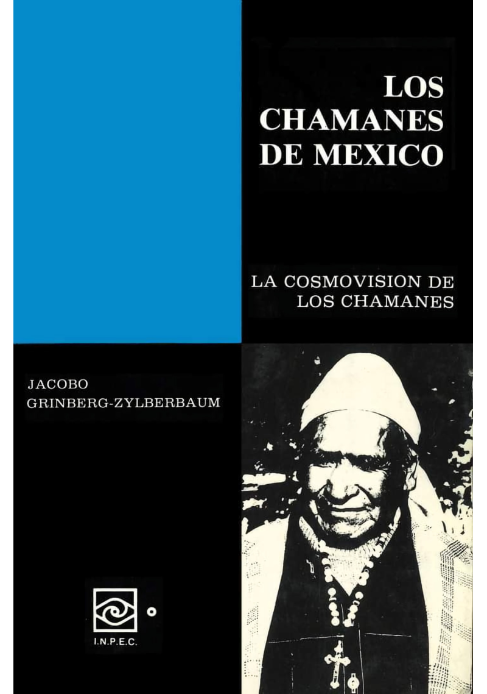
صفحة العنوان
شامانات المكسيك
المجلد الرابع
رؤية الشامانات للعالم
تمويل الدراسة
مُوّلت هذه الدراسة جزئيًا من خلال برنامج مشترك بين المجلس الوطني للعلوم والتكنولوجيا (CONACYT) والجامعة الوطنية المستقلة في المكسيك (UNAM)، كلية علم النفس.
مشروع CONACYT
PCCSNA - 030756
صفحة العنوان الداخلية
ياكوبو غرينبرغ زيلبرباوم
شامانات المكسيك
المجلد الرابع
رؤية الشامانات للعالم
كلية علم النفس
الجامعة الوطنية المستقلة في المكسيك
والمعهد الوطني لدراسة الوعي
بيانات النشر
الطبعة الثانية، المكسيك، 1989.
الطبعة الثالثة، المكسيك، 1991.
© ي. غرينبرغ زيلبرباوم.
جميع الحقوق محفوظة في البلدان الناطقة بالإسبانية.
ISBN 968-6022-02-3
طُبع وصُنع في المكسيك.
الفهرس الأصلي
1. دونيا سارا من كينتانا رو — 9.
2. دون راش بيتش من يوكاتان — 43.
3. إل كواتي تشاغالا من سانتياغو توكستلا — 59.
4. الحياة الروحية لقرية في ولاية موريلوس — 81.
5. دونيا ماتيلدي من سوكونوسكو — 129.
6. دون أتاناسيو من سييرا تاراهومارا — 141.
7. فكر الأوغيرواميس الراراموري ولغتهم في سييرا تاراهومارا — 173.
8. دون رودولفو من خالابا — 189.
9. بيبيتو من سييرا دي بويبلا — 215.
10. خوان دييغو من فيراكروز — 231.
11. دون روفينو من يوكاتان — 245.
12. بعض تقنيات التأمل لدى علماء النفس المكسيكيين الأصليين — 253.
13. إجراءات التطهير (ليمبياس) في علم النفس المكسيكي الأصلي — 267.
14. دون أغوستين من سان خوان كوبالا — 285.
توضيح تحريري: أرقام هذا الفهرس تحيل إلى صفحات الطبعة الإسبانية، لا إلى صفحات الترجمة العربية. تُحفظ تسمية «علماء النفس الأصليين» كما يستخدمها المؤلف للمعالجين التقليديين.
الفهرس الأصلي — تتمة
15. المصلّون المعالجون في ولاية غيريرو — 303.
ملحق: محضر اللقاء الأول للمعالجين التقليديين في سييرا تاراهومارا العليا. مركز تنسيق شؤون السكان الأصليين في تاراهومارا، غواشوتشي، تشيهواهوا — 311.
الفصل الأول
دونيا سارا من كينتانا رو
صفحة بيضاء
توضيح تحريري: هذه الصفحة بيضاء في ملف المصدر.
دونيا سارا من كينتانا رو
دونيا سارا تلميذة واحد من أعظم شامانات الناهوال لدى المايا في عصرنا، دون بانشيتو من يوكاتان. وقد تعرّفت إليه في ظروف مثيرة للاهتمام جدًا أود أن أرويها، محاولًا الالتزام قدر الإمكان بالرواية التي قدّمتها دونيا سارا نفسها.
في إحدى المرات، وقد استبد بها اليأس لغياب معلّم حقيقي يستطيع إرشادها في تطورها، جلست دونيا سارا إلى جوار سينوتي، وبينما كانت تتأمل سطح الماء ظهر لها وجه لا تعرفه، لكنه أثار فيها شعورًا بالألفة التامة. وظلّت تتذكر هذا الوجه خلال بحثها اللاحق، ثم التقت، في قرية صغيرة بشبه جزيرة يوكاتان، صاحب الملامح التي لمحتها في السينوتي: دون بانشيتو من يوكاتان. ومنذ تلك اللحظة أصبحت دونيا سارا تلميذته، وأخذ يكشف لها أسرار العالم الشاماني وتقنيات استخدام العقل في عمليات العلاج والعرافة.
توضيح تحريري: السينوتي (cenote) حفرة طبيعية أو بئر مكشوفة تحتوي ماءً، وتكثر في شبه جزيرة يوكاتان. والناهوال (nahual) مصطلح محلي متعدد الدلالات، أبقيناه منقولًا صوتيًا هنا.
الظروف الأسرية لدونيا سارا
الظروف الأسرية لدونيا سارا
دونيا سارا امرأة يتراوح عمرها بين الخامسة والثلاثين والأربعين، وهي أم لسبعة أطفال: ست بنات وصبي.
يقصدها سكان الحي الذي تعيش فيه حاملين آلامهم ومشكلاتهم ورغباتهم في التحسن، وبرفقتهم أقارب وأصدقاء. والأطفال من أكثر المرضى ترددًا عليها؛ يأتون مع أمهاتهم إلى عيادتها طلبًا للشفاء من أمراض مختلفة. ومن أجور استشاراتها استطاعت دونيا سارا تأمين معيشتها وبناء بيت لها ولأطفالها السبعة، الذين يساعدونها في الأعمال المنزلية ويعتمدون عليها اعتمادًا كاملًا في إعالتهم.
تتسم العلاقات الأسرية بوئام واضح وباحترام كبير من الأبناء لدونيا سارا، وكأنهم يدركون الجهد الكبير الذي تبذله هذه المرأة لإعالتهم والمحافظة على صحتهم. تعيش الابنة الكبرى مع إحدى خالاتها أو عماتها في ميريدا، أما الابنة التالية، البالغة ستة عشر عامًا، فهي التي تتولى عمليًا الأعمال المنزلية بمساعدة إخوتها.
تقنيات التشخيص
تستخدم دونيا سارا ثلاث تقنيات مختلفة على الأقل لتشخيص المرضى الذين يقصدونها للاستشارة.
التقنية الأولى هي «الفيلاسيون». وفي
توضيح تحريري: الفيلاسيون (velación) هنا ممارسة تقوم على مراقبة لهب الشمعة. وكلمة tía الإسبانية لا تحدد إن كانت القريبة خالة أم عمة.
تقنيات التشخيص — تتمة
هذه التقنية، تشعل دونيا سارا شمعة وتراقب لهبها بينما تتحدث مع مريضها وتستمع إلى أوجاعه وتقيم معه علاقة تعاطف. وبحسب حركة اللهب ولونه وارتفاعه، تضع تشخيصًا للمرض الذي يعاني منه المريض، وتوقعًا لمساره المحتمل.
التقنية الثانية هي قراءة أوراق اللعب. وباستخدام إجراءات ليست أصلية محلية قطعًا، ولذلك لا يعنينا تحليلها تفصيلًا، تقرأ دونيا سارا الأوراق، وتقدّم من خلالها تشخيصًا لحالات مرضاها وتوقعًا لمسارها.
أما أسلوب التشخيص الثالث فتمارسه دونيا سارا باستخدام إدراكها المباشر. وفي هذا المجال لا تزال تعدّ نفسها متعلّمة، وتبدي إعجابًا شديدًا بمعلّمها دون بانشيتو، الخبير في الكشف المباشر عن أمراض المرضى متخذًا من إدراكه وجسده أداة لذلك.
وتؤكد دونيا سارا أنها بدأت تتمكن من إجراء هذا النوع من الكشف، لكنها لا تزال تحتاج إلى استخدام أدوات مثل لهب الشموع والأوراق كي تشعر بالثقة في التشخيصات التي تضعها.
الفيلاسيون تقنية مثيرة للاهتمام إلى حد بالغ، وسأعود إليها لاحقًا لشرح عملية التواصل القائمة بين دونيا سارا ومعلّمها. وسأكتفي هنا بالقول إنها إجراء
إجراءات العلاج
شائع إلى حد كبير بين شامانات المايا، الذين يقرؤون أشكال ألسنة اللهب، سواء لهب الشموع أو لهب الأوعية التي توضع فيها مواد قابلة للاشتعال، لتقديم تشخيص.
ووفقًا لإجراءات المايا، يمكن فك رموز حركة اللهب المميزة ولونه وارتفاعه، ومن خلال ذلك تتضح سلسلة من المعلومات الدقيقة عما يحدث لمرضاهم. وتؤكد دونيا سارا أنها تعلّمت تقنيات الفيلاسيون من معلّمها دون بانشيتو.
إجراءات العلاج
سأشير هنا، على وجه الخصوص، إلى تقنية تستخدمها هذه العالمة النفسية الأصلية لتطهير مرضاها من الملوّثات الطاقية. وقد أطلقت على هذه التقنية اسم «حمّام المايا»، لأن خصائص الإجراء، بحسب دونيا سارا، ترجع تحديدًا إلى المايا القدماء. وليس مسموحًا لي أن أذكر تفاصيل التقنية كلها، وإنما جوانبها العامة فقط.
يتعرّى المريض الذي يخضع لحمّام المايا، ثم يُسكب على جسمه عسل بري، ويُوزَّع حتى يغطي سطح الجسم من قمة الرأس إلى أطراف أصابع القدمين. وبعد تغطية المريض
دون بانشيتو وتلميذته
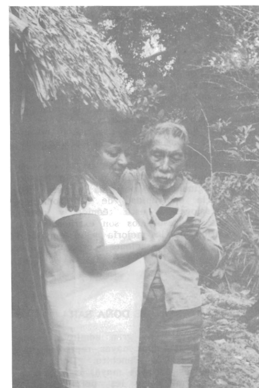
دون بانشيتو من يوكاتان وتلميذته دونيا سارا من كينتانا رو.
رؤية دونيا سارا للعالم
بطبقة من العسل، يسكب الشامان عليه شراب السيدر.
وبعد الحمّام بالسيدر، يسكب الشامان البيرة على جسم المريض، موزّعًا إياها مجددًا على جميع مناطق الجسم. وأخيرًا يُستخدم مزيج من الماء الفاتر نُقعت فيه أعشاب وبتلات زهور حمراء، ويُغسّل المريض بهذا المزيج. وبعد ذلك تُتلى سلسلة من الصلوات، ويُطلب من المريض أن يستحم بالصابون، ثم يُلقى الصابون في القمامة مع ما تبقى من سائر عناصر الحمّام.
من الواضح أن استخدام البيرة والسيدر تعديلٌ لسائل ما كان المايا يستخدمونه أصلًا. وقد أُتيحت لي فرصة الخضوع لهذه التقنية مرتين، ويمكنني أن أؤكد أن نتائجها استثنائية من حيث التحسن والتوازن النفسي والأحاسيس الجسدية التي تحدثها.
رؤية دونيا سارا للعالم
تكنّ دونيا سارا إعجابًا عظيمًا لمعلّميها، المايا القدماء، الذين يمثلهم شخص دون بانشيتو. وهي ترى أنهم كانوا أناسًا ذوي قدرة هائلة تتيح لهم، مثلًا، بناء أهرامات شاهقة باستخدام إجراءات عقلية. وتروي دونيا سارا، نقلًا عن دون بانشيتو، أن كهنة المايا
رؤية دونيا سارا للعالم — تتمة
كانوا يجلسون عند قاعدة بناء هرمي، ويُطلقون ليلًا صفيرًا مخصوصًا تقول إنه كان يؤثر مباشرةً في المادة.
وبهذه الطريقة كانوا يحرّكون كتلًا صخرية ضخمة ويضعونها فوق القاعدة الهرمية، بغية بناء الأهرامات التي نُعجب بها اليوم في المواقع الأثرية المختلفة في شبه جزيرة يوكاتان.
ترى دونيا سارا أن العقل هو العنصر الرئيسي الذي يُستخدم في جميع العمليات التي تتطلب قدرة، والتي يمكن أن يُلاحظ فيها أثر بارز. وبعبارة أخرى، تؤكد إمكان استخدام العقل لتغيير المادة، وأن هذا التغيير يمكن تعلّمه، وأن أسراره محفوظة في تعاليم معلّمي المايا، ومنهم دون بانشيتو.
ومن ناحية أخرى، وكما سيتمكن القارئ من قراءة ذلك في تفريغ تسجيل أُجري لدونيا سارا في نهاية هذا الفصل، ترى أن لكل إنسان بابًا وحارسًا لهذا الباب. وهذا الباب هو الذي يسمح لنا بالاختيار والانتقاء واستبعاد التأثيرات المختلفة، وهو الذي يُبقينا على طريق التطور الشخصي. وبحسب دونيا سارا، يتطور الباب وحارسه بالإرادة، ويُفقدان عندما يُساء استخدامها. وبعبارة أخرى، يمكن فقدان الباب نهائيًا، وعندئذ يصبح من يحدث له ذلك شخصًا لا يملك، منذ تلك اللحظة، قدرة
الحماة والتواصل عن بُعد
على الاختيار، ويغدو خاضعًا لتأثيرات من كل نوع، من دون سيطرة عليها أو قدرة على التعامل مع آثارها.
ومن تصورات دونيا سارا الأخرى أن لكل شامان ولكل شخص يسير في طريق التطور حاميًا شخصيًا يرشده ويدافع عنه ويساعده على التطور. وهؤلاء الحماة كائنات «مفارقة للأجساد» توجّه تطور الشامانات وتلاميذهم.
وتتضمن رؤية دونيا سارا للعالم الاعتقاد بأن البشر يستطيعون التواصل عن بُعد دون الحاجة إلى أجهزة إلكترونية كالهاتف أو الراديو، وأن تقنية الفيلاسيون المستخدمة للتواصل عن بُعد تمثل برهانًا على هذه القدرة.
تستخدم دونيا سارا هذه التقنية في تواصلها مع دون بانشيتو، كما سيقرأ القارئ في التفريغ. وتقوم التقنية على أن يشعلا شموعًا في أوقات متفق عليها، وحين يرغب أحدهما في إرسال رسالة إلى الآخر يجلس أمام شمعته ويراقب حركات اللهب. يفكّر في الرسالة وفي متلقيها، ثم يعرف، تبعًا لحركات اللهب، إن كان المتلقي قد تلقّاها بالفعل، وإن كان قد أرسل جوابًا.
وقد أُتيحت لي، في مناسبتين، فرصة مشاهدة دقة نتائج نظام التواصل هذا. حدثت الأولى حين أخبرت دونيا سارا دون بانشيتو، باستخدام الفيلاسيون، بأنها وأنا سنأتي لزيارته في اليوم
التواصل بالنار وكرات العرافة
التالي عند الحادية عشرة صباحًا. وفي ذلك اليوم تأخرنا بسبب سلسلة من الظروف الخارجة عن سيطرتنا، فوصلنا في الخامسة مساءً بدلًا من الحادية عشرة صباحًا. كان دون بانشيتو ينتظر في كوخه، وعندما رآنا مقبلين سألنا بقلق عن سبب تأخرنا. كان ينتظرنا صباحًا لا مساءً. ومن الواضح أن هذه الملاحظة القصصية تتيح اعتبار تقنية التواصل بالنار التي تمارسها دونيا سارا ومعلّمها دون بانشيتو فعالة ودقيقة.
ويبدو أن تقنية التواصل هذه ليست حكرًا عليهما، إذ تستخدمها أيضًا دونيا ماريا من ميريدا وشامانات آخرون في اتصالاتهم. ويستخدمها دون لوسيو من موريلوس في تفاعلاته مع من يسميهم «عمّال الطقس». وفي طقوس قبول شامان جديد، يراقب لهب شموع المرشحين، ويعرف من خصائص اللهب إن كان المرشح قد قُبل في العالم الروحي ليصبح شامانًا. وهذه تقنية تواصل أقل قابلية للتحقق التجريبي من التقنية التي تستخدمها دونيا سارا ودون بانشيتو، لكنها تشابهها في تصورها وأساسها الفكري ورؤيتها للعالم.
تقبل دونيا سارا فكرة أن الأشياء يمكن تجسيدها ونقلها وإزالة تجسيدها بمشاركة قوى خارقة للطبيعة، وبتدخل كيانات روحية.
ومن هذه الأشياء «ساسيل»، أي كرات العرافة. وكرات العرافة
توضيح تحريري: عبارة «فعالة ودقيقة» أعلاه هي استنتاج المؤلف من الواقعة التي يرويها، وليست نتيجة اختبار تجريبي موصوف في هذا الموضع.
دونيا سارا
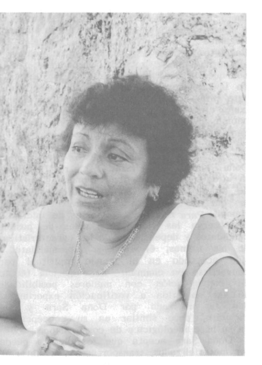
دونيا سارا من كينتانا رو.
كرات العرافة والحراس
مصنوعة من البلور أو من مواد أخرى، ويستخدمها شامانات المايا في إجراءاتهم العرافية. وتؤكد دونيا سارا أنه في مرحلة من تعلّمها على يد دون بانشيتو، كانت هذه الكرات تظهر تلقائيًا في منزلها، فكانت تحملها إلى معلّمها ليتحقق من قدرتها. وبحسب قولها، كانت تأتيها من عوالم أخرى لتستعملها في العرافة.
وتؤكد أن لهذه الكرات حياة خاصة بها، وأنها تمتص طاقة الشامان حين يهملها، وتتعاون معه حين يعتني بها. ويظهر في هذه التصورات منظور إحيائي للواقع، وفكرة عن الأشياء بوصفها مشاركة للعقل ومتعاونة معه.
وفوق ذلك كله، تقول دونيا سارا إنّها ومعلّمها أُخبرا، في تجاربهما، بأن المايا القدماء كانوا يستخدمون حراسًا لتجمعاتهم السكانية، تتكون من تماثيل صغيرة مصنوعة من الطين أو الحجر، يمنحها كهنة المايا حياة وطاقة كافيتين لتؤدي دور «حواجز طاقية» تحمي مزروعاتهم وقراهم وتجمعاتهم.
وكان هؤلاء الحراس الاصطناعيون يوضعون في مواقع استراتيجية، ومن يقترب منهم يتعرض لقوتهم ولحاجزهم. وتؤكد دونيا سارا بكل جدية أنها حملت بيديها بقايا من هؤلاء الحراس ما زالت تحتفظ بمقدار من الطاقة.
وفي إحدى جولات الاستكشاف التي
خلاصات
رافق فيها المؤلف دونيا سارا في إحدى قرى شبه جزيرة يوكاتان، سانتا كروز، أراهما فلاح تمثالًا صغيرًا، أو بالأحرى بقايا تمثال صغير، فتعرّفت إليه دونيا سارا على الفور بوصفه أحد الحراس الاصطناعيين للمايا القدماء.
تؤمن دونيا سارا بوجود قوة عليا لإله شامل وكليّ القدرة، يحدد حظ كل إنسان ومصيره. وهي، مثل معلّمها دون بانشيتو، تحب استخدام الصلوات والتضرعات إلى الألوهية من أجل تحسين حال مرضاها ومن أجل تطورها الشخصي.
ومن ناحية أخرى، تتحدث دونيا سارا عن استخدام بلورات الكوارتز لدى المايا القدماء والمعاصرين.
وترى أنه لا وجود للمصادفة، وأن القدر موجود، وأن الناس يتمايزون بحسب مواهبهم وقدراتهم. وترى أن لديها مقوّمات أن تصبح شامانة، وأنها ما زالت تلميذةً لمعلّمها دون بانشيتو الذي تكنّ له، كما ذكرت سابقًا، إعجابًا عميقًا.
خلاصات
خلاصة القول إن دونيا سارا عالمة نفس أصلية من أصل مايا، وتلميذة لدون بانشيتو، وما تزال تتطور في قدرتها على العلاج والتنبؤ والتشخيص.
تفريغ مقابلة مع دونيا سارا
تعدّ دونيا سارا نفسها وريثة للمايا القدماء الذين تراهم المعلّمين الحقيقيين للشامانية، وتعتقد أن القدرة الشامانية هي، في حقيقتها، نتيجة استخدام العقل وإمكاناته.
وتؤدي دونيا سارا من كينتانا رو دور عالمة نفس مكسيكية أصلية نموذجية، تقدّم خدماتها للمجتمع وتساعده على حل المشكلات الفردية، سواء كانت نفسية أو اضطرابات نفسية جسدية أو جسدية، خفيفة أو شديدة.
وتتنوع الإجراءات التي تستخدمها دونيا سارا، ومنها النار وحمّامات التطهير المايانية والتنبؤ العرافي باستخدام أدوات مختلفة.
تفريغ مقابلة مع دونيا سارا
في الرابع من أبريل 1986، أُتيحت للمؤلف فرصة مقابلة دونيا سارا في ميريدا. وخلال هذه المقابلة عرضت سلسلة من الأفكار حول عملها وعلاقتها بدون بانشيتو ورؤيتها العامة للعالم.
المؤلف: كيف تعرّفتِ إلى دون بانشيتو؟
دونيا سارا: كنت أبحث عنه.
المؤلف: كنت تبحثين عنه؟
دونيا سارا: نعم، كنت أبحث عنه. كانت لدي حاجة هائلة. كنت أبحث عنه منذ وقت طويل. كنت دائمًا
المقابلة — البحث عن المعلّم
أبحث عنه. ذهبت بعيدًا سنوات كثيرة لأرى ما الذي أجده. بقيت نحو عشرين عامًا خارج هنا، خارج يوكاتان، بعيدة عن والديّ. كنت أبحث لأنني لم أجد شخصًا مثل بانشيتو تمامًا. يستطيع الجميع أن يعلّموك شيئًا، لكنهم لا يستطيعون إرشادك. أما هو فيعلّمك ويرشدك. لقد تعلمت الكثير إلى جانبه. تنقلت كثيرًا. وبعد تلك السنوات العشرين رجعت إلى يوكاتان. قالوا لي في الشمال إن عليّ أن أجده في موطني. وحين وصلت إلى يوكاتان كان شيء ما يدفعني إلى المجيء إلى كينتانا رو؛ ومع أن عائلتي كلها في يوكاتان، ذهبت إلى كينتانا رو. وفي تلك الرحلات ذهابًا وإيابًا وصلت إلى بيت بانشيتو. لا أعرف كيف بالضبط. بحثت عن السينوتي. ظللت أبحث عن تلك السينوتي حتى وجدتها، تلك الموجودة عند زاوية بيته. وحين وجدتها كان شيء ما يقول لي إنني قد وجدته هو أيضًا. لكنني لم أذهب من هناك مباشرة لرؤية بانشيتو. جذبتني أطراف القرية؛ ففي قرية بانشيتو تلك جذبني ساحر. ذهبت إلى بيته وتحدثنا. إنه يجذبك، لكن المرء ينفر منه، مهما كانت قدرته على جذبك كبيرة. قدّم لي بعض الهدايا. يحاول دائمًا أن يبقي صلة بك بواسطة شيء يعطيك إياه. أعطاني شيئًا أعطيته بعد ذلك لبانشيتو. عمل عليه بانشيتو، وما زلت أحتفظ به. ويمكن القول إن الساحر كان يتحكم بي بواسطة ذلك الشيء. زرت ذلك الرجل مرتين. كنت أشعر بأن شيئًا لا يريحني، وكنت أرفضه.
المقابلة — اللقاء والتواصل بالشمعة
وهكذا قلت لنفسي ذات يوم: لماذا اتبعت ذلك الطريق إلى الخلف؟ لماذا لا أسير إلى الجانب؟ مشيت إلى جانب السينوتي ووجدت بانشيتو. وفي أول مرة رآني فيها قال: «آه! تشجعتِ أخيرًا على الوصول. ظننت أنك ستبقين هناك، فالقدرة موجودة هناك». قلت له: «أي قدرة؟» فقال: «المال»، لأن المال في الحقيقة في الجهة الأخرى، مال كثير. فقلت: «لماذا تقول لي ذلك يا بانشيتو؟» فقال: «بلى، فهذه ثالث مرة تأتين فيها. أنا أناديك، لكنك تسمعين أوامر الجهة الأخرى أكثر ولا تصغين إليّ؛ وهذا غباء كبير».
نعم، كنت أسمع ذلك الصوت فعلًا، لكن الأمور التبست عليّ. كنت أرتبك بسهولة. هكذا وصلت إلى بانشيتو.
من البداية يمنحك محبته ويشرع في تعليمك كل ما يعرف، كل ما يستطيع المرء تعلّمه. لأن ما يستطيع الرأس أن يتعلمه ليس كل ما يعرفه هو. فأنا لا أملك عقلًا استثنائيًا. القليل الذي تراني أعرفه هو من علّمني إياه. التواصل بواسطة الشمعة.
المؤلف: كيف يكون ذلك؟
دونيا سارا: كما قلت لك في اليوم الآخر، تشعل شمعتك وتستدعي الروح التي أوكلني إليها. ومن حركات الشمعة تعرف هل أقمت الاتصال أم لا. أتواصل معه. لقد عيّن لي ساعة من الليل لنتواصل فيها. أشعلها في تلك الساعة، وأتلقى الجواب فورًا أيضًا بواسطة الشمعة نفسها.
المقابلة — الساسيل
المؤلف: وهو أيضًا لديه شمعة، ويعرف أنك تتواصلين معه.
دونيا سارا: هو لا يحتاج إلى الشمعة كثيرًا؛ يستطيع فعل ذلك هكذا في الظلام.
المؤلف: بالطبع.
دونيا سارا: أما أنا فأحتاج إليها كثيرًا. وهكذا أتواصل معه. هو من علّمني ذلك؛ علّمنيه في مرحلة الأصداف الصغيرة. وعلّمني الساسيل أيضًا. كنت أعرف قليلًا من قراءة الأوراق والكف، لكنه علّمني ذلك، مثل كل الأمور الأخرى.
المؤلف: حدثينا عن الساسيل.
دونيا سارا: آه! إنها مثل الكرات الزجاجية الصغيرة؛ منها الأصغر ومنها الأكبر. الساسيل تركيز للقدرة داخل تلك الكرة الصغيرة. لكنه قد يكون جيدًا وقد يكون سيئًا. ليس كل ساسيل جيدًا. إنه شيء يجب فحصه، وهو تمامًا كما يقول: تركيز للقدرة. وقد استُخدم كثيرًا بين السحرة أيضًا، لأن الساحر إذا أراد أن يؤذيك، فاستمع إلى هذا، إنه مهم جدًا إذا صادفت بعضها! إذا أراد الساحر أن يؤذيك فسيرسل إليك كرات صغيرة. وإذا عرف أنك كائن منفتح، مميز قليلًا، يكتشف الأشياء السيئة، فسيرسل إليك كرات. وإذا وجدت تلك الكرات، فهي تشبه كرات مزيل العرق، هل رأيتها؟
المؤلف: نعم.
دونيا سارا: إذا وجدتها فارفعها، ولعزلها غطّها بقطعة قماش بيضاء. وهكذا، إن لم يكن ساحرًا أسود فلن يستطيع أن يعرف، وإن كان أبيض فلن يضره
توضيح تحريري: أُبقيت عبارة «إن لم يكن ساحرًا أسود» كما وردت في النص الإسباني، رغم التباس تركيبها في سياق الشرح.
المقابلة — صور الكرة ورموزها
ذلك، بل يمنحه قوة. أما الأسود فيسلبه القوة. وحين تكون في الكرة نقاط صغيرة كثيرة، فقد يكون ما يرسلونه إليك «هواءً». وحين لا يكون فيها إلا كرة صغيرة واحدة في المركز، يظهر فيها كل شيء. نسمي تلك الكرة الموجودة في المركز «الشاشة». وحين تستدعي الروح لتطلب النور بواسطة الساسيل، تراها هناك داخل الكرة. إنها مثل تلفاز صغير؛ ترى فيها كل ما تريد. ليست صورًا مثالية، لكنك ترى، مثلًا، كيف يكون شخص ما، هل هو طيب أم سيئ. ولا يمكن طرح سوى أسئلة قليلة جدًا، عن الأمور الأبرز. يظهر ذلك الكائن الصغير مثل كتلة صغيرة، مثل شبح صغير. فإذا ظهر محاطًا بنور أبيض كان ذلك الشخص طيبًا؛ وإذا ظهر معتمًا بعض الشيء كان متوسطًا، وإذا ظهر محاطًا بهالة سوداء كان ذلك الشخص سلبيًا إلى حد هائل. لهذا تفيدك. لا يمكنك أن تطرح عليها إلا الأسئلة الأساسية. لا تظن أنك تسأل فتظل الصور تتوالى أمامك. تسأل مثلًا: «هل يشفى هذا الشخص؟» فإذا ظهر النور شُفي، وإذا ظهرت العتمة مات.
«هل أستطيع علاجه؟» يظهر نور كثير. «هل هو أذى مُدبَّر؟» أو مثلًا في هذه الحالة، حين سأل الكرة: «هل يصل هذا الرجل إلى السلطة؟» ظهر نور كثير. «هل تطأ قدماه السلطة؟» ظهرت طاولة. والطاولة تعني القيادة؛ وهي، من بين أشياء أخرى، عرش. هذا معنى الطاولة عندنا. «هل ستكون أمامه عقبات؟» سأل الساسيل، فظهر السواد. نعم، ستكون أمامه عقبات. هذا ما يتعلق بالساسيل.
المؤلف: وماذا عن الباب؟
توضيح تحريري: «الهواء» هنا لفظ في خطاب المعالجة التقليدية، وليس وصفًا مثبتًا لسبب مرضي. ولا يوضح هذا الموضع هوية الرجل الذي سُئل عن وصوله إلى السلطة.
المقابلة — الباب
دونيا سارا: ماذا عن الباب، مثلًا؟
المؤلف: مثلًا، كنت تقولين لي إن هناك أشخاصًا فقدوا بابهم بالفعل.
دونيا سارا: أحرقوا بابهم بالفعل؛ فقدوه، هذا صحيح.
التفسير الذي قدّمه لنا، والذي يبدو منطقيًا، هو أن لكل منا جسدًا يشبه البيت، ولدينا باب؛ قد يكون هذا الباب هنا في العقل. إنه باب نبقيه جميعًا مغلقًا ما دمنا لا نعرف كيف نفتحه على الوجه الصحيح. وعندما يكتسب المرء قدرًا من المعرفة، ينفتح هذا الباب قليلًا. ولأنك تكتسب تلك المعرفة، فإنك تعرف أيضًا كيف تكتشف وجود الشر فتغلقه، كي لا يدخل ذلك الشر. لأن ترك باب مفتوح يعني تركه مفتوحًا للخير، لكنه مفتوح للشر أيضًا، والشر يدخل أسرع من الخير. كثيرون يحرقون بابهم ويدمرونه بالمخدرات. وإذا انغمس المرء كثيرًا في الأهواء والشهوات، احترق ذلك الباب وبقي منفتحًا تمامًا. وعندئذ، إذا كان إلى جانبك شخص عاقل وإيجابي، فإنه يرشدك وتكون طيبًا، لأنك منفتح فتدع نفسك تُقاد. لكنك لا تستطيع أن تبقى طوال الوقت قرب شخص واحد فقط. وحين تمر مصادفةً قرب شخص سيئ، فإنه يجذبك ويستحوذ عليك، لأنك لا تملك ذلك الباب مغلقًا. من الضروري فتحه، لكن بعد أن تتعلم التعامل مع العقل قليلًا. تفتحه للخير وتغلقه في وجه الشر. هذا هو الباب.
المقابلة — الحارس والخير والشر
المؤلف: وإذا احترق، فهل يكون قد احترق إلى الأبد؟
دونيا سارا: يكون قد احترق إلى الأبد، للأسف.
المؤلف: لكن هناك حارسًا يحرسه؛ كيف يكون ذلك؟
دونيا سارا: نعم، لكل منا روح حامية. أما أننا لا نعرف كيف نستدعيها، أو ليست لدينا قوة لاستدعائها، فهذا أمر مختلف. لكن لكل منا روحًا حامية تعتني به إلى الأبد. ومع ذلك، مقابل كل روح حامية هناك ثلاث أو أربع أرواح شريرة. ولذلك لا بد من لحظات غفلة، لحظات تتيح اقتراب ذلك الشر، بأفكارنا السيئة وأفعالنا السيئة. بالأفكار السلبية تُبعد الروح الحامية، فتستولي عليك الروح الشريرة فورًا.
المؤلف: ما الفرق بين الخير والشر؟
دونيا سارا: يا له من سؤال! ما الفرق بين النهار والليل؟ يبدو قليلًا، لكنه كل شيء. إنه مثل الأبيض والأسود. كلاهما لون، لكن أحدهما أبيض والآخر أسود. إنه الحفاظ على الروح أو تدميرها التام. هذا هو الفرق دائمًا. ألا تظن ذلك؟
المؤلف: نعم. لأن لكليهما قدرة، وكلاهما يستطيع أن ينجز أعمالًا.
دونيا سارا: نعم.
المؤلف: لكن أحدهما متصل
دون بانشيتو ودونيا سارا
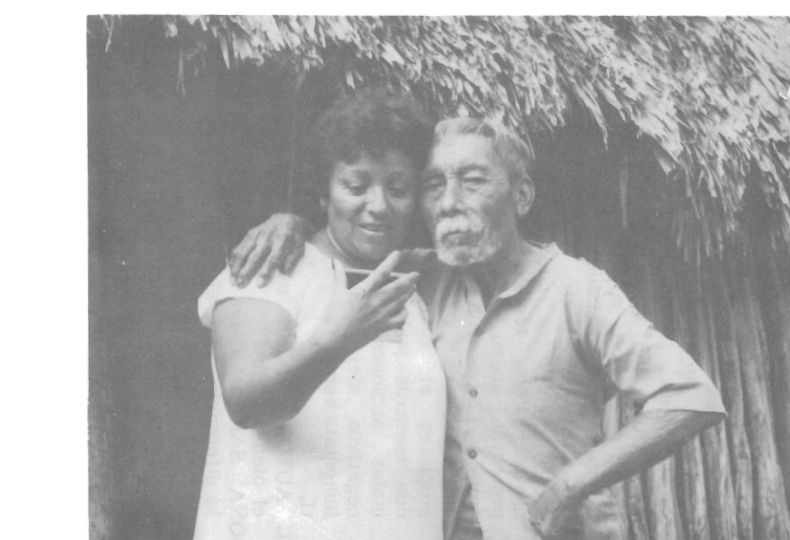
دون بانشيتو من يوكاتان وتلميذته دونيا سارا من كينتانا رو.
المقابلة — القدرة والمعرفة والكوارتز
والآخر منفصل.
دونيا سارا: كلاهما متصل تمامًا، لكن أحدهما متصل بالشر والآخر بالخير. الشر قدرة عظيمة جدًا، عظيمة إلى درجة أنه كثيرًا ما يربكنا ويُجبننا؛ فعندما نرى قدرة بهذا الحجم نقول: «ماذا تستطيع صلاتي المسكينة أمام هذه القدرة الهائلة!» لكنه يُحارَب بصلاة، بصلاة مسكينة، وببعض التأمل. صحيح أن ذلك يأتي ببطء، ببطء، لكن الشر لن يهزم الخير أبدًا.
المقصود أن الشر هو القدرة، والخير هو المعرفة. ولن تهزم القدرة المعرفة أبدًا. هذا هو الفرق. كلاهما عظيم جدًا في مجاله، لكن الذي يسود وسيسود دائمًا هو الخير.
المؤلف: قلتِ لي ذات يوم، حين كنت أحمل بلورة كوارتز، إن المايا كانوا يستخدمون البلور.
دونيا سارا: نعم.
المؤلف: وإن دون بانشيتو يستخدمه. ماذا يعرف عن البلور؟ وما استخداماته؟
دونيا سارا: فيمَ يفيده؟ يفيده في أشياء كثيرة. يقول إن الكوارتز مثل جهاز استقبال. وقد نصحني بألا أستخدمه حين أهداني شخص واحدة منه. قال لي ألا أستخدمه، لأننا إذا لم نتمكن من السيطرة عليه فإنه يميل إلى السيطرة علينا. إنه جيد جدًا إذا عرفت كيف تستخدمه، لكنك إذا لم تعرف فإنه يمتص طاقاتك كلها. نعم، ينقل الطاقات، لكنه لا يعرف حدًا لامتصاص طاقاتك. هذا هو الخطر في
المقابلة — الكوارتز والطاقة
الكوارتز. وقد قال لي إن تركه مكشوفًا، بلا حماية، فوق طاولة، يجعله يمتص حتى طاقات الأشخاص النائمين أو الذين يمرون من هناك.
المؤلف: ويبقى مشحونًا بها؟
دونيا سارا: يبقى مشحونًا بها، لكنه يمتص الطاقات الجيدة أو السيئة؛ يمتصها كلها. وهنا يكمن الخطر: حين تستخدمه، وتطلق طاقاتك من خلاله، فإنه يسمح لك بامتصاص الطاقات التي يحتويها. فإذا كان قد امتص طاقات سيئة فستكون سيئ المزاج ذلك اليوم. وإذا امتص طاقات جيدة، فحسنًا، سيكون يومك رائعًا. لقد استخدمه المايا. وكان الكهنة في المعابد يعملون ليلًا بطاقة جيدة من أجل الكوارتز. لقد حدثتك عن كيفية عملهم آنذاك. وكانوا يستخدمون أيضًا طاولات مملوءة بالكوارتز. وهذا أمر حدّثني عنه بسرية وثقة، لأن الحديث بهذه الأشياء إلى أي أحد تقريبًا لا جدوى منه، إذ لم يعد الناس يصدقونها. وهكذا، حين كانوا يعملون بطاقة جيدة خالصة، كان الكوارتز يمتصها، وعندما يمرض كاهن معين كان الكوارتز يحل محله. انظر إلى أهمية الكوارتز، لكن الكهنة وحدهم كانوا يتعاملون معه.
والسحرة يستخدمونه أيضًا. يستخدمه شخص طيب يعرف كيف يستخدمه، أو شخص سيئ يعرف هو أيضًا كيف يستخدمه. أما شخص متوسط مثلنا، مثلك أو مثلي، فلا ينبغي لنا أن نستخدمه، لأنه أخطر من أن يكون نافعًا. قلت لي ذات مرة إنه
المقابلة — النجوم والطيور
يساعدك في العمل مع الأطفال. لدى الأطفال الكثير من الإيجابية. وكما قلت لك، ينبغي الحرص على حفظ الكوارتز بحيث لا يمتص طاقات إضافية. يُستخدم للأطفال وحدهم، ثم يُشحن بطاقات إيجابية.
المؤلف: هل تستطيعين استخدام الكوارتز في التواصل؟
دونيا سارا: لا، لا يفيدني في ذلك. هو فقط مثل مصدر للطاقة. هل اقتنعت؟
المؤلف: وماذا عن النجوم؟ دون بانشيتو، مثلًا، يقرأ النجوم. هل تعرفين قراءة النجوم؟
دونيا سارا: لا، ليس الأمر أنه يقرؤها؛ إنه يعمل مع نجوم محددة. يطلب من ذلك النجم القوة والنور، وحين تصبح لديه قوة يدخل ويعمل مع طاقة ذلك النجم، أو يخرج ويوجه سؤالًا إلى النجم. ومن خفقان النجم يحصل على الجواب. لديه طرق كثيرة للعمل؛ يعمل كثيرًا مع الطيور.
المؤلف: مع الطيور؟
دونيا سارا: نعم، عندما أتأخر في المجيء يذهب ليلًا ليراني. لقد رأيت أن الغرفة التي أنام فيها مغلقة معظم الليل، أو فقط ما دام الطائر هناك في الزاوية. ولأن ساعات نومي قليلة، ونومي ثقيل جدًا حين أنام، فإنه يهز الأرجوحة ولا يهدأ حتى أستيقظ. كان يفعل ذلك لداني أيضًا حين كانت في البيت. يقف على الأرجوحة ويظل يهزها ويهزها حتى
المقابلة — اسم بانشيتو ومواجهاته
أنهض. وحين أرى بانشيتو يقول لي: «نومك مثل... كأنك حجر في بئر». بانشيتو هائل القدرة. وكما ترى، فهو معتزل عن الجميع. تذكرت الآن: لا تعد إلى السؤال عنه؛ اهتدِ بنفسك. عندما تسأل عنه يعرف الناس أنك ذاهب إلى المعالج. أنا لا أسأل عنه أبدًا.
أذهب وأصل. إنه لا يحب ذلك. بل كثيرًا ما لا يحب أن يعرفوا اسمه. هو بالنسبة إلينا بانشيتو. وعليه هو أيضًا أن يحمي نفسه. لا دانييلا ولا أي أحد يعرف اسمه.
المؤلف: همم!
دونيا سارا: لقد كبر وتعب. لديه قدرة كبيرة، لكن ليس إلى جانبه سند من عقل يماثل عقله. في حال حدوث مواجهة، فهو في تلك القرية واحد في مواجهة أربعة.
المؤلف: هل هناك أربعة سحرة في القرية نفسها؟
دونيا سارا: نعم.
المؤلف: ولماذا يتواجهون؟
دونيا سارا: انظر يا ياكوبو، هذا أمر طبيعي جدًا. لا يوجد سبب، سوى أن هذا يعوقني وأريد تدميره. إنه يمثل ما لا أمثله أنا، إن جاز التعبير. هذا يكفي. ولذلك أحاول حمايته كثيرًا من هذه الناحية. أوصيك بذلك بشدة. نسيت أن أقول لك حين سألتني هل سيضايق بانشيتو أن تكتب اسمه. لن يضايقه، لأنني أعرف أن هذا ليس اسمه. كانت هناك
المقابلة — كرات كانكون
فترة قبل نحو ثلاث سنوات أرادوا فيها إقصائي من كانكون. فقد أُعطيت كانكون لي ولامرأتين أخريين. وغادرت إحداهما المكان. ولذلك أُعطيت كانكون للسيدة مارغريتا ولي. لكن في كانكون نحو أربعين شخصًا يعملون، وليس لديهم إذن من رؤسائنا بالعمل في هذا المجال. ولذلك يحاولون دائمًا مضايقتك. لا أستطيع أن أضايق أحدًا لأن هذا المكان أُسند إليّ، وينبغي الترحيب بأي شخص. لكنهم يحاولون مضايقتك وانتزاع المكان منك. في تلك السنة وصلني نحو ثماني أو عشر كرات خلال أربعة أشهر. كان الأمر لا يُحتمل يا ياكوبو. كانت حربًا رهيبة بين الأطفال. في ذلك الوقت كنت قد انفصلت حديثًا عن زوجي؛ وكان الأمر كذلك معه ومع المستأجرين ومع كل شيء. حتى الطيور التي كانت تأتي، كانت تأتي لتتشاجر. كانت تنزل لتأكل الذرة. وكان عندي بعض الدجاج، فكانت تنشب بينها وبين الديك مشاجرة رهيبة.
كانت تتجمع كرتان أو ثلاث في الشهر. كنت ألتقطها وألفّها وأحملها إلى بانشيتو ليحطمها. وكان يقول لي: «يريدون إخراجك يا ابنتي، يريدون إخراجك». كم كافحنا! لذلك أقول لك إن تلك الكرات طاقات. روحك الحامية ترسل إليك واحدة أو اثنتين لتعمل بهما. أما أنا فلا أحب العمل بها.
المؤلف: لا؟
المقابلة — العناية بالكرات
دونيا سارا: لا، لأن عليك أن تعتني بها عناية خاصة جدًا. تحتاج إلى رعاية مستمرة جدًا. أنت تعرفني، لست مواظبة جدًا على شيء؛ أنا مهملة قليلًا، ولدي واجبات أخرى، وأشعر أنني قد أقصّر. لذلك لا أعمل بها. لدي كراتي، لدي نحو سبع للعمل. ومن هذه السبع استأذنت بانشيتو وأهديت اثنتين لإلياس. هو اختارهما، وأهديناهما إليه لأنه كان يحتاج إليهما. أما الباقي فعند دون بانشيتو، في وعاء من القرع في زاوية صغيرة من طاولته. حين أشعر أن حياتي أصبحت أهدأ، وأنني لم أعد أخرج خروجًا مفاجئًا، سأستطيع العمل بالكرات. إنها تتطلب عناية خاصة جدًا. ينبغي أن تغذيها، حتى أطفالك يصبحون في هذه الحالة في المرتبة الثانية. في هذه الأمور، منذ أن تبدأ، تصبح مرتبطًا بها وعليك رعايتها.
المؤلف: وهل تظهر الصور داخل الكرات؟
دونيا سارا: نعم، عادة في الفقاعة الكبيرة التي فيها؛ هناك يوجد الحامي. وإذا كان حاميك ذكرًا اتخذ هيئة رجل، وإذا كان أنثى ظهر مثل صورة عذراء ذات أجنحة.
المؤلف: وهل تستطيعين رؤية حاميك في الكرة؟
دونيا سارا: نعم، لهذا. يأتي حاميك في الفقاعة الكبيرة. وأحيانًا لا يُشار لنا إلى أي حامٍ، فيأتي حامينا من تلقاء نفسه باحثًا عنا. وإذا بحثت عنه، فإن من يعرف كيف يراه لك يرى
المقابلة — الأرواح والكرات
إن كان رجلًا أم امرأة. وبعد ذلك تعتاد عليه شيئًا فشيئًا، وتألفه، وتبدأ برؤية كل شيء. واللذان رأيناهما لإلياس، أحدهما رجل والآخر امرأة.
المؤلف: آه! أي إن للكرات حاميها.
دونيا سارا: نعم، لها مرشدها. كل كرة تقودها روح، وتُظهر لك صورة من يكون حاميك.
المؤلف: لكن هل ترتبط تلك الروح بكرة إلى الأبد؟ أي روح ستريد أن تظل هناك ملتصقة بكرة؟ كيف تفسرين ذلك؟
دونيا سارا: أعتقد أن تلك الأرواح أرواح عليا لديها مهمة تؤديها.
المؤلف: لكن هل لديها أشياء أخرى إلى جانب الكرة الصغيرة، أم ستبقى هناك ملتصقة بكرتها إلى الأبد؟
دونيا سارا: حسنًا، لا تعرف كم من الوقت تبقى مرتبطة بها. وحين تنتبه تجد أن تلك الكرات لم تعد تحتوي تلك الروح. ولهذا تأتي مساعدة الشامان، المعلّم.
المؤلف: لوصلها؟
دونيا سارا: نعم، حين لا يبقى في تلك الكرة شيء، تكون الروح قد ذهبت إلى الراحة، إن صح التعبير. وعندئذ لا تعود الكرة تنفعك في شيء. لا أعرف كيف يُفهم هذا، فأنا شديدة الجهل به، لكن تلك الأرواح تحت أمرك وفي خدمتك، وكلما أعطيت الروح خدمة أكثر منحتها النور أسرع، وذهبت إلى الراحة أسرع. قد تكون أسيرة في تلك الكرة، لكنها
المقابلة — قدرة بانشيتو على الرؤية
أرواح عليا ربما لم تُتم مهمتها، وبهذه الطريقة تكمل أداءها لتذهب إلى الراحة الأبدية.
المؤلف: هل تعرفين من علّم دون بانشيتو؟ من كان معلّمه؟
دونيا سارا: لا، لا أعرف. لقد وُلد بانشيتو بذلك. لا بد أن أحدًا أرشده في طفولته، لكنه وُلد بذلك. في هذه الأمور، عادةً لا يعلّمك أحد؛ يرشدونك، لكنك تولد بذلك.
المؤلف: أكثر ما يدهشني في دون بانشيتو قدرته على الرؤية. مثلًا، ما كنت تروينه لي عن ذهابكم إلى ساحر خوفاين، وكيف كنتم على وشك الاصطدام في العودة ثم تعطلت السيارة. كيف رأى دون بانشيتو كل ذلك؟
دونيا سارا: قدرة العقل.
المؤلف: يا لها من دقة!
دونيا سارا: يا لها من دقة وقوة!
المؤلف: وكأنه يرى كل شيء عن بُعد.
دونيا سارا: تمامًا.
المؤلف: هل تتذكرين مناسبات أخرى عرف فيها دون بانشيتو ما الذي سيحدث؟
دونيا سارا: أتذكر الكثير بحيث لن يكون لدي وقت لأرويه، ولا لديك وقت لتسمعه. منذ أن عرفته، كان بانشيتو يكنّ لي مودّةً خاصة. أشعر بأنني محظوظة جدًا لأنه يمنحني تلك المحبة. لو عرفت كم ساعدني، حتى إنه أنقذ حياتي.
المؤلف: أود أن أروي واقعة دانييلا: ذهبت سارا ودانييلا وشخص آخر
المقابلة — حادث الطريق
بسيارة لرؤية معالج خوفاين، بعد أن قال لهن دون بانشيتو إن الأفضل ألا يذهبن. ثم كدن عند المغادرة يتعرضن لحادث مميت؛ كدن يُقتلن في اصطدام بشاحنة، وبعد ذلك تعطلت السيارة. وحين عدن لرؤية دون بانشيتو قال لهن إن...
دونيا سارا: إننا نستحق ذلك تمامًا. «تعرفين أنها نار، ومع ذلك تذهبين لتمسكيها». قال لي: «أبعدتُ ذلك الكبير لأنكن كنتن ستُقتلن فيه، لكنني تركت الآخر لكي... لكي تذقن الويل. حتى تتعلمي هكذا. أنت المذنبة، لأنك تعرفين أن هذه نار. داني لا تعرف، لكنك أنت تعرفين». لكن هناك أمرًا، وهو أن داني تقنعك بطريقة لطيفة جدًا. كنا نريد الذهاب إلى تلك المقابلة منذ مدة. وكلما حدثتني داني عن خوفاين كنت أقول لها إن الأفضل أن تقابل دون كانوتو. إنه أبيض مئة في المئة. ما يحدث أننا لا نضفي على الخير عظمة، فنتركه بلا أهمية. أما الشر، فالشر في ذاته عظمة؛ هذا ما يُظهره أمام أعين الجميع، إذ يناسبه أن يظهر هكذا؛ إنه قناع من العظمة. أما الخير، فانظر إلى بانشيتو، انظر إلى ثيابه. هل تريد رؤية الترف؟ اذهب لترى خوفاين، دائمًا حسن اللباس وحسن الهيئة.
والآن، شيء آخر حدث لنا مع دانييلا: حين ذهبنا ذات مرة في شاحنة خوسيه إلياس الصغيرة لنعمل مع بانشيتو، وكان الليل قد تقدم، نحو
توضيح تحريري: العبارة الإسبانية المنقولة عن بانشيتو هنا عامية نابية؛ نُقلت بعبارة «تذقن الويل» مع الحفاظ على نبرة التوبيخ. و«أبيض» في حديث سارا تصنيفها الروحي للممارس.
المقابلة — السرقة والحماية
العاشرة وصلنا. تركت السيارة تحت الشجرة مفتوحة باستهتار، وبالقرب من الزجاج الأمامي حقيبة فيها وثائقها ونقود. صعدنا إلى دون بانشيتو، ونحو الواحدة صباحًا خرجنا لننام في بايادوليد (Valladolid) ونواصل في اليوم التالي. وعندما وصلنا إلى الشاحنة الصغيرة وجدنا فوضى؛ المال، أخذوه كله. أوراقها مبعثرة، ولحسن الحظ لم يأخذوها أيضًا. عدنا إلى دون بانشيتو وأخبرناه. فأجابنا: «حسنًا، إذا استطعتن الذهاب للعمل فاذهبن». لم نقل له إنه لم يعد لدينا مال، لكنه كان يعرف. بالكاد وصلنا إلى المكان الذي كان علينا الوصول إليه؛ ولحسن الحظ كنا قد ملأنا خزان السيارة بالوقود تلك الليلة، وإلا لما بقي لنا حتى ذلك. كان معي بعض القروش فاستفدنا منها. عدنا إلى كانكون. وبعد ثمانية أيام رجعنا إلى بانشيتو، فقال لي هكذا: «لا حيلة يا ابنتي. بسبب الاستهتار لا بد من هذا العقاب. كان استهتارك، استهتارًا مضاعفًا. إذا كنت تعرفين أن لديك حماية، فعليك أن تكوني شديدة الحرص حتى في الأشخاص الذين ترافقينهم». لا أعرف إن كنت تفهمني، بشأن الحماية التي يتحدث عنها. كيف أشرح لك؟ انظر، هناك روح أعطاها لي لتعتني بي وتحميني. إذا اعتدى عليّ أحد ظلمًا أو بحق، فإنهم يستطيعون الاعتداء عليّ لأنني لا أملك قوة جسدية، لكن تلك الروح عندئذ لا بد أن تعاقب من يعتدي عليّ؛ تعاقبه بطريقة
المقابلة — تبعات الحماية
ما. ولذلك كان ترك السيارة مفتوحة استهتارًا مني ومن داني. أتدري ماذا قال لي بانشيتو أيضًا؟ قال هكذا: «واحد مات، وواحد مريض جدًا، وواحد في السجن. بسبب استهتارك الشديد». عند ذلك لم يعد يستطيع أن يفعل شيئًا. من كان يريد أن تضيع حياة شاب بسبب الستين ألفًا التي كانت في السيارة؟ لا أحد. ومع ذلك لم يعد يمكن فعل شيء، وشعرت بسوء شديد. قال لي: «إما أن تصبحي أشد حذرًا، أو سأتخذ إجراءات أخرى». واتخاذ إجراءات أخرى يعني نزع الحماية عني. لذلك توقفت عن الخروج مع داني ونحن في خضم العمل، لأنها جاءت لتصنع فيلمًا. قلت لها فقط إنني لم أعد أستطيع الخروج معها. لم أكن أستطيع أن أقول لها ما أقوله الآن، لأنها غير مهيأة لفهم أمور كثيرة. لكنها أدركت الأمر حين كنا عند بانشيتو ووبخني بتلك الطريقة. إذا قالوا لك إنك، بسبب استهتارك، مسؤولة عن موت إنسان، ولو بصورة غير مباشرة، لكنك مسؤولة، فكيف تشعر؟ خرجت أبكي حزنًا. لاحظ إرنستو ذلك، وكانت كارميتا هناك. ترجمت لهم ما لم أشأ أن أقوله لهم: إن حارسي تصرّف بسبب استهتاري. لم يكن ينبغي له أن يتصرّف. ذلك الحارس مُنح فقط للطوارئ، للأمور التي تستحق حقًا. ومع ذلك الحارس لا يستطيع أحد الاعتداء عليّ أو لمسي. لكنني أول من ينبغي له أن يتحلى بحذر شديد. إذا افتعلتُ معك شجارًا فستضربني، وروحي
توضيح تحريري: ورد المبلغ في الأصل بصيغة $60,000.00؛ أُبقيت قيمته التاريخية دون تحويل إلى عملة أو قيمة معاصرة.
المقابلة — السرية واختيار الطريق
ستعاقبك، لكن ينبغي لي أن أتجنب ذلك مسبقًا. ترجموا هذا كله لداني، وشعرت هي أيضًا بانزعاج شديد. تلك هي الأمور الصغيرة. أحيانًا لا يكون كل شيء جيدًا. أُعطيت تلك الروح من أجل الخير، من أجل الحراسة، لكن خطأً منا قد يؤدي إلى ضياع أرواح.
لذلك أقول لك إن هذه الأمور تبقى سرية. أنا موجودة في القرية كثيرًا. لو عُرف ذلك، ومن يعرفه هم سحرة المكان. ولو كان، ولحسن الحظ لم يكن الأمر كذلك، قريبًا لأحد السحرة، أتعرف كيف كان ذلك الساحر سينتقم من عائلتي؟ أتعرف ما الذي كان سيثيره ذلك؟ حرب صغيرة كان بانشيتو سيضطر إلى التدخل فيها، وكم كان سيموت من الناس. إنها قدرة في مواجهة قدرة، لكن يمكن تجنب ذلك بالحذر. أول ما قاله لي بانشيتو كان: «إذا كنت سأمنحك هذه القدرة، فأمّني أمر بيتك، لأنني لن أمنحك الحماية هكذا وحسب». أول ما فعلته كان رفع سور بيتي. ورأيت أن زوجي خطر عليّ، فانفصلت عنه كي لا يعتدي عليّ. ولكي لا يعتدي عليّ الناس ولا أعتدي عليهم، أعزل نفسي عنهم. لا أخالط الناس؛ أخالطكم أنتم الغرباء، بل إن مخالطتي لعائلتي قليلة. لست نادمة؛ إنه أمر جميل جدًا، بديع جدًا. لم يجبرني أحد، أنا فيه بإرادتي، إنه طريقي.
الفصل الثاني
دون راش بيتش من يوكاتان
صفحة بيضاء
توضيح تحريري: هذه الصفحة بيضاء في ملف المصدر.
دون راش بيتش من يوكاتان
يعيش دون راش بيتش في مدينة نموذجية من مدن يوكاتان، تتميز، إلى جانب قربها من البحر، بكثرة العيادات التي تقدّم العون النفسي على طريقة أهل البلاد.
استطعت العثور على أربع عيادات أصلية مختلفة، لكل منها غرفة انتظار ومعالج متخصص في جوانب مختلفة من العلاج النفسي الأصلي.
وقد أثار أحد هؤلاء المعالجين، دون راش بيتش، إعجابي بالتقنيات التي يستخدمها، وبدقة تشخيصاته وفعالية أساليبه العلاجية. ولهذه الأسباب تحديدًا أود تخصيص هذا الفصل لتحليل هذا العالم النفسي المكسيكي الأصلي.
الوخز بالإبر لدى المايا
الوخز بالإبر لدى المايا
لدينا بالفعل بيانات كافية لنؤكد أن المايا القدماء امتلكوا أساليب شديدة الشبه بتلك المستخدمة في الوخز بالإبر الصيني. فاثنان على الأقل من شامانات المايا الذين دُرسوا حتى اليوم، دون لورينزو ودون راش بيتش من يوكاتان، يستخدمان تقنيات وخز ورثاها عن معلّميهما، الذين ورثوها بدورهم عن معلّميهم، في سلسلة ترجع على الأرجح إلى المايا القدماء.
تخصص دون لورينزو في وخز الرأس. ويستخدم في عمله ناب أفعى جرسية نظفه وعقّمه كي لا تبقى فيه أي بقايا من السم. وباستخدام هذه الأداة الطبيعية يحدد مناطق رأس المريض التي تحتاج إلى علاج، وينخز فيها نقاطًا مختلفة حتى يصل إلى عظم الجمجمة، مخترقًا فروة الرأس بغية تخفيف الأعراض.
ولأسباب مختلفة، فإن تقنية دون لورينزو، رغم شبهها بالوخز بالإبر، لا يمكن اعتبارها تقنية وخز كلاسيكية. أولًا، لا يستخدم دون لورينزو إبرًا معدنية كما في الوخز المعتاد؛ وثانيًا، لا يبدو أنه يستخدم نقاطًا ثابتة لتطبيق تقنيته، بل يحدد مناطق تعاني مشكلة، ثم ينخز فيها بناب الأفعى الجرسية بحرية، على الأقل بحسب ما يبدو.
وحين سُئل دون لورينزو عن التقنية
توضيح تحريري: هذا وصف المؤلف لممارسة شاهدها، وليس تعليمات لإجرائها. اختراق الجلد بناب أو إبرة غير طبية قد يسبب إصابة وعدوى.
دون لورينزو
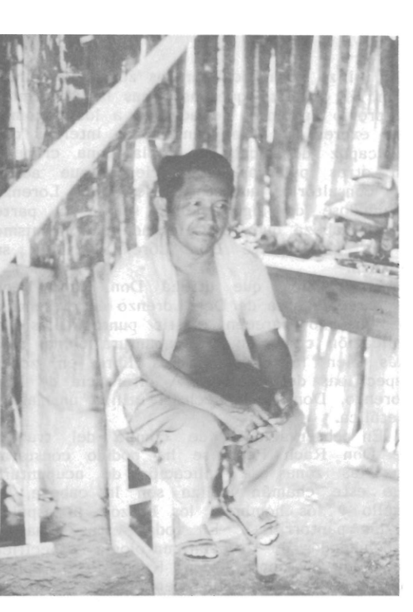
دون لورينزو.
مواضع الوخز
التي يستخدمها لتحديد مواضع التطبيق، أجاب بأن المريض نفسه يحددها وفقًا للأعراض التي يعبّر عنها، وللأحاسيس الداخلية التي يستطيع تحديد موقعها في منطقة الرأس. وبعبارة أخرى، فإن المريض الذي يقصد عيادة دون لورينزو الأصلية شاكيًا ألمًا ما، يشير إلى الجزء المصاب من رأسه، وفي هذا الجزء يستخدم دون لورينزو تقنيته.
وتشبه التقنية التي يستخدمها دون راش بيتش تقنية دون لورينزو، من حيث إنه لا يبدو أن هناك نقاطًا ثابتة للتطبيق كما في الوخز الصيني، وإنما يكون التطبيق حرًا في مناطق محددة من الجسم. وعلى خلاف دون لورينزو، يستخدم دون راش بيتش إبرة معدنية بالفعل.
ومن خلال الملاحظات الميدانية لعمل دون راش بيتش، أمكن التحقق من أن مناطق تطبيق الوخز التي يستخدمها هذا الشامان هي الرأس والعنق والكتفان والذراعان والظهر وربلتا الساقين. وفي جميع هذه المناطق، وتبعًا لأعراض كل مريض، يطبق دون راش بيتش تقنيته. فحالة ألم كلوي، مثلًا، تتطلب وخزًا في منطقة الكلية، وينخز دون راش بيتش أجزاء مختلفة من الظهر عند مستوى الكلية.
طاولة عمل دون لورينزو
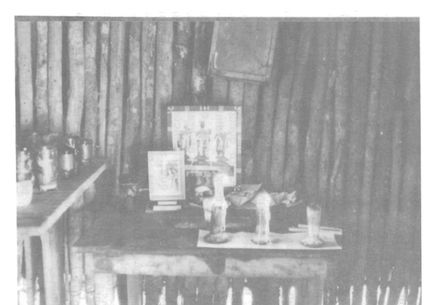
طاولة عمل دون لورينزو.
طريقة التشخيص لدى دون راش بيتش
طريقة التشخيص لدى دون راش بيتش
تعرّض دون راش بيتش لصدمة عاطفية شديدة جدًا حين علم، منذ وقت قريب نسبيًا، بموت إخوته موتًا مأساويًا. وكان الأثر الجسدي لهذا الخبر بالغًا إلى حد أن دون راش بيتش فقد بصره بسببه.
ومن المثير للاهتمام أن نتذكر أن شامانة ناهوال مكسيكية عظيمة، دونيا باتشيتا من مدينة مكسيكو، تعرضت لاستجابة نفسية جسدية مشابهة حين قُتل ابنها في اضطرابات عام 1968. وكما حدث لدون راش بيتش، فقدت دونيا باتشيتا بصرها منذ تلك الصدمة والمأساة الأسرية.
يستقبل دون راش بيتش المرضى في كوخ صغير يقع في أطراف بلدته. وليس في هذا الكوخ من الأثاث إلا أرجوحة يجلس عليها الشامان وطاولة صغيرة إلى يساره. ويجلس المريض أمامه على مقعد صغير، بحيث يكون المريض والمعالج وجهًا لوجه.
وفوق الطاولة الصغيرة علبة قديمة صغيرة توضع فيها قطع ضئيلة من البارافين، يشعلها مساعد لراش بيتش بين وقت وآخر وبناء على طلب الشامان. وهكذا يعالج دون راش بيتش مرضاه بمصاحبة النار المنبعثة من علبة البارافين هذه.
ويؤكد هذا الشامان أن الشيء الوحيد الذي
التشخيص باللهب
ما زال يستطيع إدراكه هو نار علبته، ومن خلال مراقبة اللهب تحديدًا يضع دون راش بيتش تشخيصاته. وفيما يلي مثال نموذجي على هذا النمط التشخيصي.
يدخل مريض الكوخ. يدعوه دون راش بيتش إلى الجلوس على المقعد أمامه، ويسأله عما يعانيه. ثم يطلب من مساعده أن يضع البارافين في العلبة الصغيرة ويشعل المزيج بعود ثقاب. ويبقى دون راش بيتش طوال الاستشارة منتبهًا إلى لهب علبته، ويمسك بيده غصنًا صغيرًا من السذاب يستخدمه للمس مناطق مختلفة من جسم مريضه. وهكذا، بمراقبة اللهب ولمس جسم المريض، يضع دون راش بيتش التشخيص.
كنت شاهدًا مباشرًا على هذا الأسلوب، ولاحظت أنه حين يلمس دون راش بيتش الرأس، مثلًا، تشير النار إلى جوانب مرتبطة بهذه المنطقة من الجسم.
وبغية التحقق من دقة تشخيص دون راش بيتش، خضعت لعلاج بالوخز بعد أن شخّص حالتي هذا الشامان. ومن دون أن أخبره بأعراضي، سمحت له بلمس أجزاء مختلفة من جسمي، ولاحظت بدهشة أنه حين لمس الكلية اليسرى أخبرني، على نحو صحيح، بأنني أعاني ألمًا في هذا الجزء من الجسم. وقد ظهرت الدقة نفسها في جوانب مختلفة من جسمي. وما أثار الدهشة أنه، بعد
عيادة دون راش بيتش
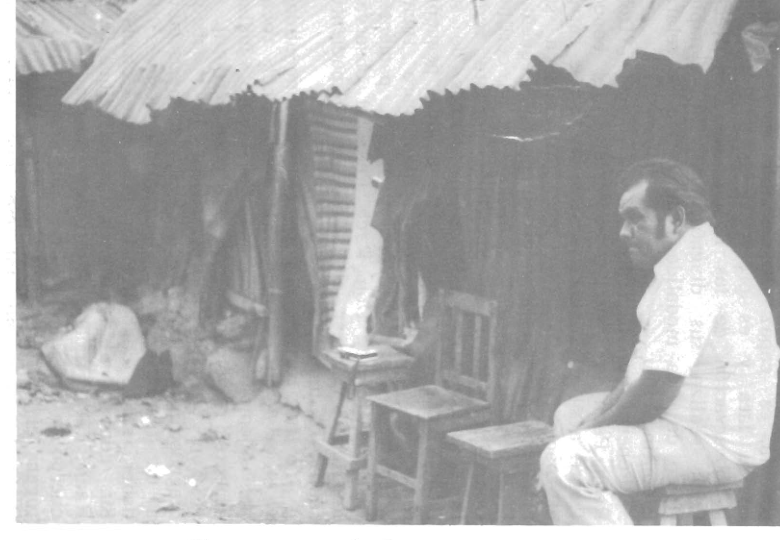
عيادة دون راش بيتش مع غرفة الانتظار.
تفسير محتمل لتقنية التشخيص بالنار
هذه القدرة المذهلة على تشخيص الجسم، أخبرني الشامان عن جوانب من حياتي لم يكن يعلم بها، قطعًا، أحد غيري. وتشير هذه الدقة في التقاط الجوانب الداخلية من خلال مراقبة النار إلى أن تقنية هذا الشامان تعمل، وأن استخدامها يتيح الوصول إلى تشخيصات عالية الدقة.
تفسير محتمل لتقنية التشخيص بالنار
ليس دون راش بيتش الشامان أو العالم النفسي المكسيكي الأصلي الوحيد الذي يستخدم النار عنصرًا للتشخيص؛ ومع ذلك، فمن بين جميع الشامانات الذين درسناهم، لعلّي أجرؤ على القول إن دون راش بيتش هو الأدق والأضبط في استخدام تقنيته.
ومن الشامانات الآخرين الذين يستخدمون النار: دونيا سارا ودون أنطونيو من كينتانا رو، ودون بانشيتو من يوكاتان، ودون لوسيو من موريلوس. وجميع هؤلاء يقرؤون لهب شموع يشعلونها لمساعدتهم في التشخيص. ولذلك يبدو أن تقنية النار واسعة الاستخدام إلى حد كبير في الجمهورية المكسيكية، وهي تستحق محاولة تفسير، ولا سيما بسبب دقة نتائجها في حالة دون راش بيتش.
فرضية الحقول العصبية واللهب
من دون اعتبار ما يأتي تفسيرًا نهائيًا، أجرؤ على افتراض أن لهب الشمعة أو ألسنة اللهب في علبة دون راش بيتش تستطيع، بطريقة ما، التفاعل مع الحقول العصبية لكل من المعالج والمريض الموجودين على مقربة منها. ووفقًا للنظرية السينترجية، يستطيع الدماغ البشري تنشيط حقل طاقي يتفاعل مع التنظيم الطاقي للزمكان، فيغيّر خصائصه الشكلية.
واللهب منظومة طاقية دقيقة للغاية، وربما يكون قابلًا للتغير حين يحدث بالقرب منه تغير في حقل الزمكان. وبعبارة أخرى، فإن الفرضية التي قد تفسر دقة تشخيص دون راش بيتش باستخدام اللهب، هي أن دماغه ودماغ مريضه يؤثران في الخصائص الشكلية للحقل الكمي، وأن اللهب يتغير في شكله وخصائصه المرئية حين يتبدل الحقل الكمومي بفعل التفاعل مع حقليهما العصبيين. وقد يكون هذا هو التفسير الفيزيائي لتقنية دون راش بيتش التشخيصية. ومن الواضح أنه ينبغي افتراض حساسية قصوى لدى الشامان، تمكّنه من اكتشاف التغيرات الشكلية للهب، فضلًا عن التعرف إليها وتحليلها على نحو صحيح، ومن ثم وضع تشخيص مناسب.
توضيح تحريري: يعرض المؤلف هذا الربط بين اللهب والحقول العصبية والحقل الكمومي بوصفه فرضية ضمن نظريته؛ لا يورد في هذا الموضع تجربة مضبوطة تثبت هذا التفسير.
صوت الرؤية
صوت الرؤية
يُقال داخل الشامانية المكسيكية إن الشامان الحقيقي هو من يستطيع، إلى جانب الإحساس بالتغيرات الطاقية الدقيقة جدًا، تفسير هذه التغيرات تفسيرًا ملائمًا. وتُسمى هذه القدرة التفسيرية «صوت الرؤية». وفي حالة دون راش بيتش يتجلى «صوت الرؤية» على نحو بارز في قدرته على قراءة النار وتفسيرها تشخيصيًا.
وكما ذكرت لتوي، لا يستطيع دون راش بيتش التعرف إلى التغيرات الدقيقة في لهبه فحسب، بل يستطيع أيضًا أن يمنحها تفسيرًا تشخيصيًا ملائمًا. ويمكن القول إن ما يحدث لدى هذا الشامان هو أن شكل لهبه يمثل الأداة التي تنشّط آلية «صوت الرؤية»، التي تخبره بما حدث وبالخصائص التي يتصف بها مريضه.
العلاجات باستخدام الأعشاب
يمكن اعتبار دون راش بيتش معالجًا متكاملًا. وأقول ذلك لأنه، إلى جانب قدرته على تقديم تشخيصات دقيقة لأمراض مرضاه، واستخدام تقنية الوخز المايانية لمعالجة مشكلات الأعراض، يستخدم هذا الشامان أدوية
العلاجات بالأعشاب ورؤية العالم
أصلية مصنوعة من أعشاب يجمعها ويحضّرها بنفسه.
ومن العلاجات التي يستخدمها دون راش بيتش تناول مزيج من الأعشاب يؤدي إلى إسهال تطهيري شامل لجسم المريض. ويستخدم دون راش هذا العلاج في الحالات القصوى حين يشير تشخيصه باللهب إلى أن جسم المريض ملوث بالكامل. وعندما تكون الحال كذلك، يُعدّ مُسهّلًا تتناسب شدته مع مقدار التلوث الجسدي.
ومن الأدوية الأخرى التي يستخدمها هذا العالم النفسي الأصلي أعشاب تُحضّر منها منقوعات تُشرب يوميًا. وفي حالة المؤلف، دعاني الشامان، بعد تشخيص المشكلة الكلوية، إلى تناول منقوعات معدة من أعشاب مختلفة بدلًا من ماء الشرب المعتاد، وقال إنها ستحل مشكلتي. وفي حالات المرضى الآخرين، يشيع استخدام هذه المنقوعات إلى جانب تطبيق أعشاب تُستخدم مسحوقة وبالفرك على مناطق محددة من الجسم.
رؤية دون راش بيتش للعالم
يتبين من التعرف إلى هذا الشامان أن له رؤية خاصة للعالم، ترتبط أساسًا بأسباب المرض وعلاجه، وبالتطور البشري عمومًا.
التلوث والطهارة في رؤية دون راش بيتش
من أولى أفكار دون راش بيتش أن السبب الرئيسي للمرض هو التلوث أو غياب نظافة الجسم الناجم عن عوامل مختلفة. وانطلاقًا من هذا التصور تحديدًا، تتوجه علاجات هذا الشامان نحو تحقيق التطهير وإخراج الملوثات المتجسدة في الجسم. فإذا نُظّف الجسم، وإذا لم تعد هناك نفايات وتلوث داخلي، وُجدت الصحة. ويبدو أن هذه هي الفكرة الأساسية لدى هذا الشامان.
وتتنوع أسباب التلوث، بحسب دون راش بيتش. وأحدها، وربما أهمها، التفاعلات التي يقيمها المريض مع أشخاص آخرين لا يتعاملون بإيجابية. وهكذا يلوث الحسد والكراهية والأفكار السيئة عقل الشخص وجسده، حتى يبلغ التلوث مقدارًا يؤدي إلى مرض جسدي.
ومن التقنيات التي يوصي بها دون راش بيتش لتجنب التلوث الطاقي الموصوف أعلاه استخدام مسحوق تَلْك خاص ممزوج بأعشاب يعدّه بنفسه، ويعمل، بحسب قوله، بوصفه نوعًا من الدفاع الطاقي عن جسم المريض.
وقد أُتيحت لي فرصة تجربة هذا المسحوق، وأستطيع أن أؤكد أن تأثيره، في تجربتي، مشابه لما يصفه دون راش بيتش.
خلاصات الفصل الثاني
خلاصات
تُستخلص من دراسة دون راش بيتش النقاط الآتية:
1. يوجد تفاعل بين النار ومضامين معلوماتية يمكن فك رموزها انطلاقًا من مراقبة النار.
2. يستطيع الإنسان تعلّم فك رموز هذا التفاعل، واستخدام التغيرات الشكلية للهب بغية تقديم تشخيص دقيق لمرض ما.
3. كان الوخز بالإبر معروفًا ومستخدمًا لدى المايا، وما يزال تقنية شائعة الاستخدام بين شامانات المايا المعاصرين.
4. لا يبدو أن العمى عائق أمام تجلّي قدرات الاستبصار الحدسي، كما في حالة دون راش بيتش وفي حالة دونيا باتشيتا.
توضيح تحريري: هذه خلاصات المؤلف كما صاغها، وليست نتائج تحقق مستقل أُجري أثناء الترجمة.
الفصل الثالث
إل كواتي تشاغالا من سانتياغو توكستلا
صفحة بيضاء
توضيح تحريري: هذه الصفحة بيضاء في ملف المصدر. وتليها في الملف نسخة زائدة من الصفحة المطبوعة 79؛ نُقل نصها مرة واحدة في موضعه الصحيح لاحقًا، من صفحة ملف المصدر 79.
إل كواتي تشاغالا من سانتياغو توكستلا
من بين رجال المعرفة في ولاية فيراكروز يبرز رجل يبدو لي أنه يمتلك صفات الشامان الحقيقي. وأعني إل كواتي تشاغالا، الذي يقيم ويعمل في بلدة سانتياغو توكستلا، الواقعة على مسافة ساعتين تقريبًا من ميناء فيراكروز.
كنت قد سمعت شهادات كثيرة وإيجابية عن إل كواتي تشاغالا، فقررت زيارته للتعرف إليه وإجراء مقابلة معه. وفيما يلي رواية لقائي به، ولإجراء استخدمه معي، ولذلك يمكنني ذكر تجربتي المباشرة مع تقنياته العلاجية وتحليلها.
سانتياغو توكستلا
سانتياغو توكستلا بلدة جميلة المنظر تقع في ولاية فيراكروز؛ نظيفة،
البلدة والمعالج
تحيط بها نباتات تكاد تكون استوائية غابية، ومناخها حار.
يعيش إل كواتي تشاغالا في أحد أطراف البلدة، الذي يُوصل إليه بعد عبور الجسر الملكي، وهو بناء يتيح اجتياز النهر الذي يروي سانتياغو توكستلا. يقع بيته في مجمّع سكني صغير يمتلئ في الأمسيات بضحكات الأطفال وهم يلعبون بحيوية بالكرات والعجلات ومع الحيوانات الكثيرة في المنطقة.
وجدت أربعة أشخاص جالسين على مقعد ينتظرون وصول إل كواتي تشاغالا، فاحتللت آخر الصف، يؤنس انتظاري منظر الأطفال وهم يلعبون وأصوات ضحكاتهم وصيحاتهم. كانت هناك خنازير صغيرة وكلاب وببغاء يتوازن فوق سلك، وعدة نساء يغسلن الثياب، وامرأة تعد الطعام.
إل كواتي تشاغالا
فجأة أبدى الشخص الجالس عن يميني علامات انتباه شديد، وحين تتبعت نظره رأيت رجلًا متقدمًا في العمر يقترب من حوض غسل صغير، ويستخدم كوبًا لتنظيف طقم أسنانه وفمه. قال لي جاري إنه إل كواتي تشاغالا، فدهشت، لأن هذا الرجل، وفقًا لما بلغني، كان في السادسة والثمانين، لكنه لم يكن يبدو أكبر من السبعين.
جلسة تطهير مع إل كواتي تشاغالا
اقترب منا وصافحنا، ولاحظت فورًا دفئًا وقدرة على التواصل الإنساني الرقيق والهادئ.
دخل الأشخاص الأوائل، فاعتنى بهم إل كواتي تشاغالا نحو خمس عشرة دقيقة. وحين خرجوا اقترب مني وقال إنه سيستقبلني بعد دقائق قليلة. انتظرت خمس عشرة دقيقة أخرى، ثم أُدخلت أخيرًا.
جلسة تطهير مع إل كواتي تشاغالا
دعاني إل كواتي تشاغالا إلى الجلوس على كرسي، ورحت أتأمل بدهشة الغرفة التي وجدت نفسي فيها. كانت أربع شموع كبيرة قائمة على الأرض فوق أوراق جرائد. وفي آخر الغرفة تمثال للمسيح المصلوب، تحيط به أزهار ونباتات وزينات ورقية وشموع نذرية إضافية، تزيّن الغرفة وتضفي عليها جوًا سحريًا وغريبًا.
سألني إل كواتي تشاغالا عن سبب زيارتي، فشرحت له أنني أجري بحثًا عن الشامانات في المكسيك، وأنني مررت قبل أيام بتجربة مزعجة مع متعلّم دعاني إلى تجربة إجراء لدى السكان الأصليين يُستخدم لتحقيق منافع وشفاء جسدي. يقوم هذا الإجراء على حفر حفرة في الأرض تتسع للاستلقاء فيها على الظهر، ثم تغطية الجسم كله بالتراب، مع إبقاء
منظر من سانتياغو توكستلا
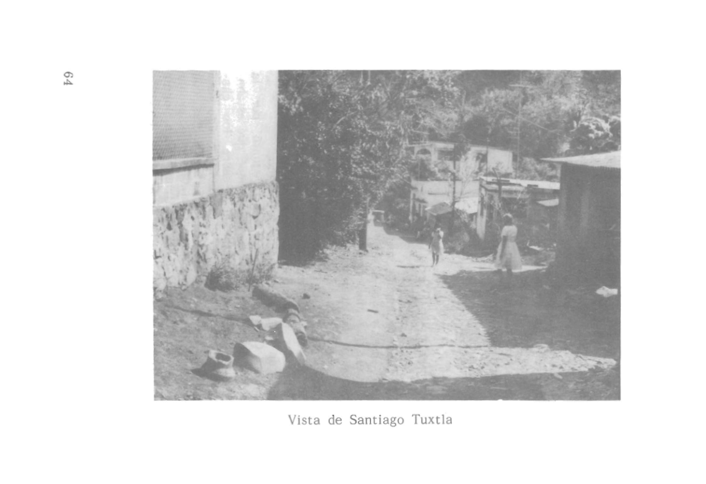
منظر من سانتياغو توكستلا.
تجربة التطهير
الرأس وحده خارجًا. شرحت لإل كواتي تشاغالا أن هذا الرجل من السكان الأصليين أخضعني مرتين لإجراء الدفن هذا، وأنني بدأت منذ ذلك الحين أشعر بالسوء، وبانعدام الطاقة والتعب، إضافة إلى سلسلة من المشكلات التي تبدو خارجية وكانت تقلقني.
استمع إل كواتي تشاغالا بانتباه إلى روايتي، ثم هز رأسه من جانب إلى آخر قائلًا إن إجراء الدفن الذي خضعت له قد أضعف روحي أو خفضها، وإنه سيعيد إليّ الصحة ويرفع معنوياتي.
وبعد ذلك تناول هذا الشامان سائلًا أخضر فاتحًا مصنوعًا من الأعشاب، وطلب مني خلع قميصي، ثم بصق السائل كله على ظهري عند العمود الفقري. وبحزمة أعشاب وزّع السائل، ثم بصق من جديد على جانبي ظهري. ووزّع السائل مرة أخرى بحزمته، مكررًا هذا الإجراء على كتفيّ ورأسي وعينيّ ووجهي كله وذراعيّ، وأخيرًا راحتيّ. وبعد عدة دقائق شغّل مروحة ليجفف السائل الذي كان يسيل على جسمي كله، وسألني كيف أشعر. وكان عليّ أن أعترف بأنني أشعر بحال ممتازة، وأن الإحساس بالانقباض الذي شعرت به عند وصولي قد اختفى، وأن معنوياتي في أفضل حال، وأن هناك صفاءً في عقلي وعمقًا
منظر آخر من سانتياغو توكستلا
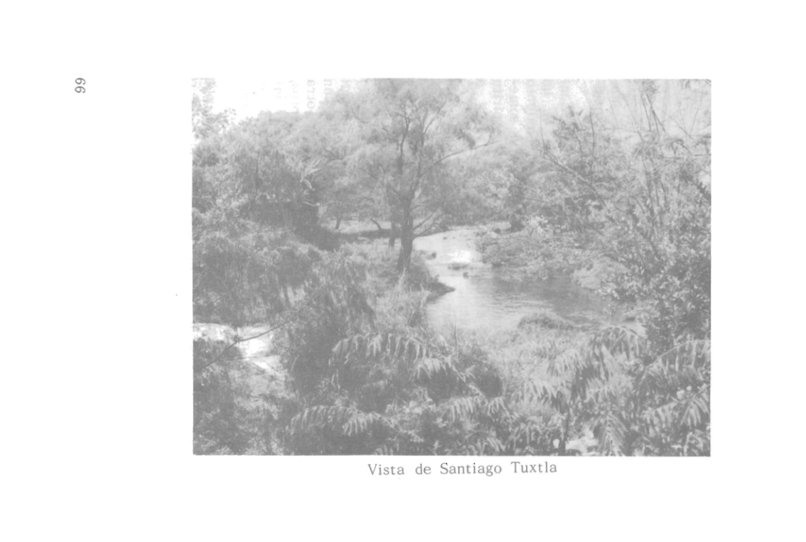
منظر من سانتياغو توكستلا.
الفحص بالبيضة
في وعيي.
أطلق إل كواتي تشاغالا تعبيرًا عن سروره، واستخدم بيضة لفرك رأسي وظهري، ثم أفرغ محتواها في كأس ماء نظيف.
أشرت له إلى موضع ألم عند الكلية اليسرى، وكأنه تذكر إجراء مناسبًا لهذه الحالات، فذهب إلى الطاولة قرب الصليب وأخرج زجاجة صغيرة واقترب مني، وأخذ سائلًا منها وفرك به خاصرتي اليسرى. بدأت أشعر بسخونة الموضع وبانحسار الألم الكلوي حتى اختفى. تناول إل كواتي تشاغالا مجددًا سائله الأخضر الفاتح، وبصقه مرة أخرى على ظهري وفركه بأعشابه. ثم أخذ يطلب المساعدة من الله، قائلًا إنه يعهد بروحي إلى الحراسة الإلهية، وإنه يطلب منها أن تحميني وتساعدني وتزيل مشكلاتي وتملأني نورًا.
ثم سألني مرة أخرى كيف أشعر، فقلت إنني بخير جدًا. جلس إل كواتي تشاغالا على كرسي وأراني ما فعله بالبيضة التي كان قد فرك بها جسمي.
أدركت أن ما فعله إجراء يُسمى «فيستا» في الشامانية المكسيكية. كنت قد شاهدت هذا الإجراء لدى دون لوسيو من موريلوس، ودونيا ليتشا من بويبلا، وعدد كبير من علماء النفس الأصليين، لذلك لم يفاجئني أن يستخدمه إل كواتي تشاغالا أيضًا.
من الواضح أن إجراء الفيستا،
توضيح تحريري: فيستا (vista) تعني حرفيًا «الرؤية» أو «النظر»؛ ويستخدمها المؤلف هنا اسمًا لقراءة محتوى البيضة بعد طقس التطهير.
رؤية إل كواتي تشاغالا للعالم
الذي يقوم، كما قلت، على فرك بيضة على جسم المريض، ثم إفراغها في كأس ماء، منتشر في المكسيك كلها إلى درجة تستحق دراسة أصله وخصائصه وتفاصيله التشخيصية. وتُستخدم الفيستا عمومًا لتشخيص الحالة النفسية والروحية للمريض. وبحسب شكل الصفار وتكتلات البروتين في البياض والفقاعات ومواضعها، يستطيع الشامان أن يقول ما الذي يعانيه مريضه وما التأثيرات التي تصيبه.
سألت إل كواتي تشاغالا عما يراه في «الفيستا» الخاصة بي، فوصف وشرح لي عملية الدفن التي خضعت لها. وقال إنه، بحسب ما يرى، أثّر ذلك الدفن سلبًا في سير الطاقة لديّ، ولذلك ينصحني بألا أكرر تجربة الدفن أبدًا. وافقته ووعدته ألا أستخدم هذه التقنية مجددًا، على الأقل مع الأشخاص الذين علّموني إياها.
رؤية إل كواتي تشاغالا للعالم
أُتيحت لي بعد ذلك فرصة طرح عدة أسئلة والاستماع إلى إجاباته. سألته أولًا عن أصل قدرته العلاجية، فقال إنها ترجع إلى ولادته.
دون خوان «إل كواتي» تشاغالا
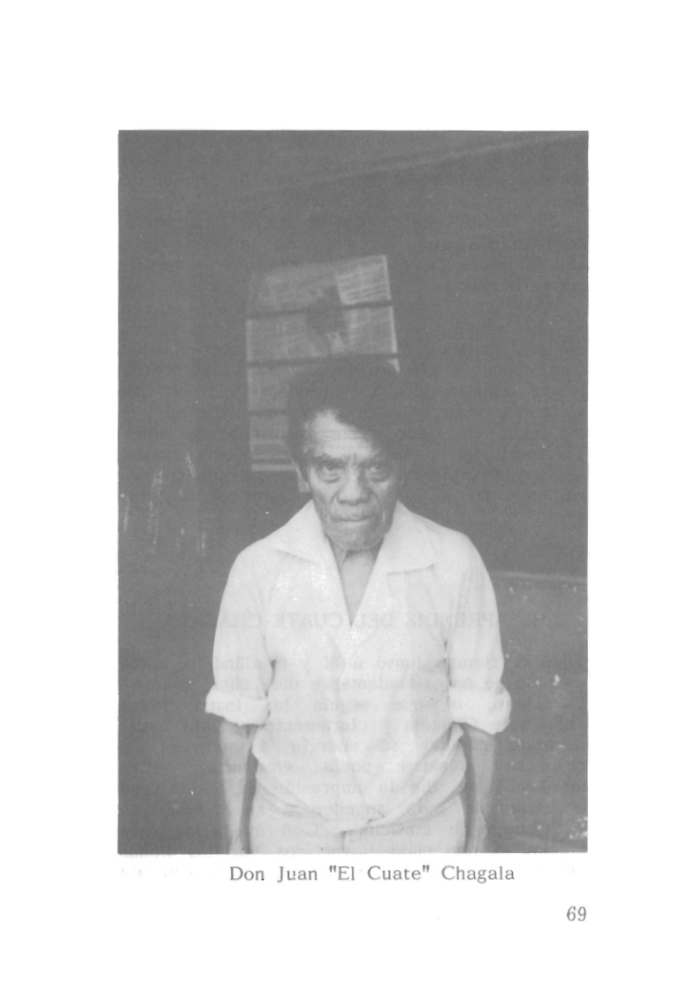
دون خوان «إل كواتي» تشاغالا.
المتعلّم المساعد
ثم أسرّ إليّ أن الحامي والمرشد الوحيد الذي يطلب منه العون هو الله، لأنه يرى أنه لا وسيط يملك قدرة الآب ونفاذ بصيرته.
وتحدث إليّ عن السحر الشيطاني، معتبرًا أنه موجود حقًا، لكنه لم يشأ قط استخدامه أو الاقتراب منه.
وخلال هذه الملاحظات عن رؤيته للألوهية وأصل قدراته العلاجية، كان إل كواتي تشاغالا يسألني باستمرار كيف أشعر، ويعبّر عن قلقه على صحتي ورغبته في ألا أعود أبدًا لرؤية الرجل الذي دفنني. كنت أشعر في كل ملاحظة من ملاحظاته باهتمام حقيقي وعناية صادقة بحالي، وشكرته عليهما صراحة.
متعلّم إل كواتي تشاغالا
كان إلى جانبه طوال الوقت، يساعده، طفل في نحو العاشرة، خدوم ومنتبه، يتبع تعليماته ويبدو بوضوح أنه قرر تكريس طاقته لتعلّم ما يستطيع معلّمه تعليمه إياه. أعطاني هذا الصبي انطباعًا بأنه يتهيّأ ليخلف معلّمه في مداواة الناس. وبمساعدة هذا الصبي استطعت أن آخذ معي زجاجتين مملوءتين بالسائل الأخضر الذي أوصاني إل كواتي تشاغالا
الآثار الأولية للتطهير
باستخدامه باستمرار لمنفعتي.
طلبت منه أن أعود لرؤيته ومراقبة عمله مع مرضى آخرين، فوافق. ودّعنا بعضنا بود شديد، واتفقنا على اللقاء في اليوم التالي عند الواحدة ظهرًا.
الآثار الأولية لإجراء التطهير لدى إل كواتي تشاغالا
خرجت من بيته أشعر حقًا بأنني وُلدت من جديد، متفائلًا ومدهوشًا بقدرة هذا الشامان على علاجي وتخفيف أوجاعي والحالة الاكتئابية التي جئت بها إليه.
وفي المساء أُتيحت لي فرصة التعرف إلى دون فرناندو بوستامانتي، مدير متحف توكستيكو والخبير في ثقافة الأولمك وتاريخ سانتياغو توكستلا.
حدثني دون فرناندو مطولًا عن أنشطة إل كواتي تشاغالا. وقال إن اسمه الحقيقي خوان تشاغالا، وإنهم يلقبونه كواتي لأنه توأم. وأكد لي أن الطفل الذي يعمل معه اختير لخلافته وأنه حفيده. كان لإل كواتي تشاغالا ابن توفي بتليف الكبد، بعد أن يئس الطب من علاجه وعدّه حالة لا أمل فيها. وقد بقي هذا الابن حيًا على نحو معجز عامًا
المجمّع السكني
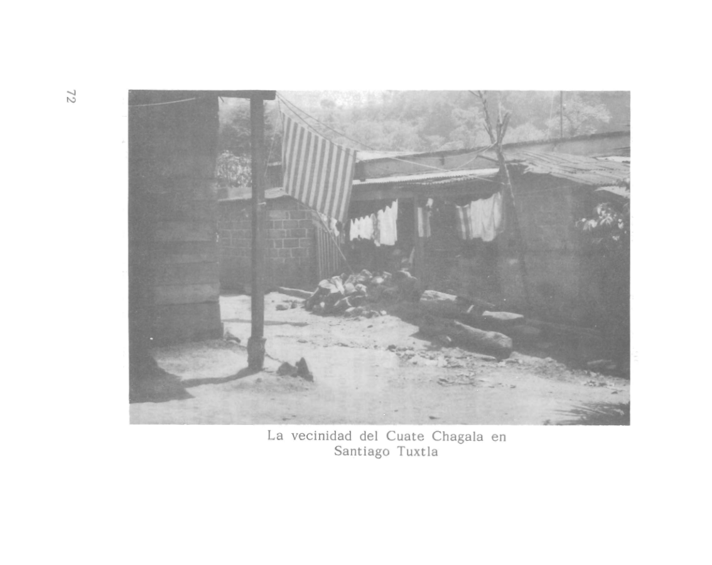
المجمّع السكني لإل كواتي تشاغالا في سانتياغو توكستلا.
روايات عن التنبؤ والإيثار
بعد اليأس من علاجه، بفضل الإجراءات العشبية التي استخدمها معه إل كواتي تشاغالا ليُبقيه حيًا خلال تلك الفترة.
ومن الحكايات عن قدرات إل كواتي تشاغالا التنبؤية، حالة أسرة فقدت طفلها الصغير، البالغ سنتين، في سوق بمدينة مكسيكو. وجاء أفرادها يائسين يطلبون مساعدة دون خوان تشاغالا، الذي رأى حال الطفل وأخبرهم أنه سيظهر بعد ثمانية أيام في السوق نفسها. وبحسب دون فرناندو بوستامانتي، ظهر الطفل بعد ثمانية أيام بالضبط، كما تنبأ إل كواتي.
هذا الإنجاز في العرافة والاستبصار مثير للاهتمام جدًا، ويتحدث عن القدرة النفسية لدون خوان تشاغالا.
ومن أهم خصائص عمله في نظر دون فرناندو بوستامانتي طيبته وإيثاره وعدم اهتمامه بالمال. وقال لي إنه منذ عرفه، أظهر إل كواتي تشاغالا دائمًا الطيبة والدفء والإنسانية تجاه مرضاه وأصدقائه. وبحسب هذا المُخبِر نفسه، يُعد دون خوان تشاغالا من الحالات الاستثنائية التي يقدّم فيها المرء مصلحته الشخصية وراحته، بل حتى سلامته الشخصية، على مصلحة مرضاه.
توضيح تحريري: الجملة الأخيرة هكذا في الأصل، وهي تناقض وصف الإيثار الذي يسبقها. أُبقي اتجاه المقارنة كما طُبع، دون تصحيح تخميني لمقصد المؤلف.
دون خوان تشاغالا
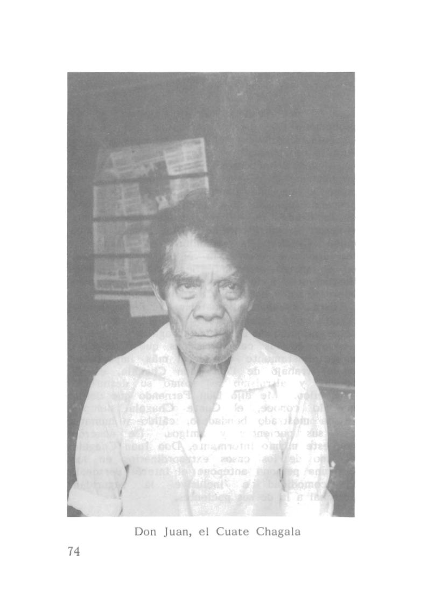
دون خوان، إل كواتي تشاغالا.
الزيارة الثانية
الزيارة الثانية
وجدت دون خوان تشاغالا يصنع نبيذًا طبيًا بمساعدة رجل يحرّك سائلًا داكنًا داخل دلو، بينما يتذوق الشامان المنقوع ويعلّق على مذاقه قائلًا إنه ينقصه السكر أو يحتاج إلى مزيد من الأعشاب.
حيّاني إل كواتي وقال إنه يصنع دواء ممتازًا لاستعادة الحيوية، يُحضّر بغلي مجموعة أعشاب في أول جمعة من مارس من كل سنة.
كان نشاطه كثيفًا، وفي إحدى ذهاباته إلى المذبح سألت مساعده عن سبب هذا الالتزام الصارم بالتاريخ. فقال إن الأدوية المحضّرة في أول جمعة من مارس شديدة القوة، لأن تلك الأيام مواتية للشفاء.
لم أسأل أكثر، بل اكتفيت بمراقبة نشاط إل كواتي تشاغالا، الذي بدا لي بريئًا على نحو آسر. آسرًا لأنه بدا مركزًا تمامًا على الحاضر وعلى ما يفعله، دون لحظة شرود. فهمت أن هذه، بطريقة ما، هي خبرته اليومية، وبدا لي استثنائيًا أن أرى إنسانًا يعيش مستغرقًا تمامًا في الحاضر إلى هذا الحد.
الاستشارات
الاستشارات
بدأ الناس يصلون، فأدخلهم الشامان إلى غرفة الاستشارة وطلب مني أن أنتظر جالسًا على مقعد غرفة الانتظار، التي كانت، كما قلت، تطل على فناء يلعب فيه عادة أطفال المجمّع السكني في سانتياغو توكستلا.
ظل إل كواتي يستقبل الناس نحو ساعتين، ثم أدخلني أخيرًا. سألني كيف أشعر، فقلت إنني أشعر حقًا بحال جيدة جدًا. وسألني عن آثار التطهير السابق وتناول النبيذ الطبي الذي أعطاني إياه قبل الدخول إلى الاستشارة، فأجبته أن كليهما أفادني كثيرًا وأنني أشعر بخير شديد. وقال إن هذا يسعده كثيرًا، لأنني حين جئت كنت مكتئبًا جدًا، بلا همة، وضجرًا تمامًا من الحياة، أما الآن فيرى فيّ تغيرًا إيجابيًا.
اغتنمت الفرصة لأسأله عدة أسئلة، فأجاب بطريقته الخاصة، الخشنة والبدائية بعض الشيء، لكنها مفعمة بالرقة والظرف. سألته عن الحياة بعد الموت، وعن عقل المرأة وعقل الرجل، وعن عمله. وقال إنه لا يتفق مع الذين يعتقدون بوجود عودة إلى العالم بعد الموت. وذكر أن هناك حكمًا إلهيًا عند موت الإنسان، وأنه يكون مواتيًا أو غير مواتٍ بحسب أعمال ذلك الإنسان؛ فإذا كان مواتيًا
الاستشارات — تتمة
عاش الإنسان في حال إيجابية، وإن كان غير مواتٍ عاش في حال سلبية.
ورأى أن عقل المرأة مختلف عن عقل الرجل. وقال إن لدى المرأة نزوعًا إلى الهيمنة، وإنه رأى في حياته نساء كثيرات قادرات على إلحاق أذى هائل بالرجال لتحقيق تلك الهيمنة.
وعن عمله، ذكر أنه ليس له تابع، وأن الصبي الذي يساعده، خلافًا لما كنت أظن، ليس حفيده ولا تلميذه، وإنما طفل مهتم بالتعاون معه ويساعده في عمله.
سألته عن تاريخ ميلاده، فأجاب أن عيد ميلاده في الخامس عشر من يونيو وأن عمره خمسة وثمانون عامًا. بدا مهتمًا جدًا بمعرفة إن كنت سأكتب عنه، وسُرّ كثيرًا حين قلت له إن كل ما رأيته يبدو لي إيجابيًا جدًا، وإنني سأوصي به بحماس بالغ.
وبينما كنا نتحدث، كان أطفال، من بينهم مساعد إل كواتي تشاغالا، يلعبون خارج غرفة المذابح، ويقتربون أحيانًا من النافذة ويمازحون الشامان. وأتاح لي ذلك مراقبة سلوكه مع الأطفال مباشرة. وأسعدني كثيرًا أن أرى أنه لا يبدو أن بينه وبين أصدقائه الصغار أي تحفّظ أو حاجز في المزاح والألعاب التي يتشاركونها. كان يبدو حقًا طفلًا آخر ببراءته وحيويته وبروح الدعابة التي أظهرها في جميع تفاعلاته معهم.
توضيح تحريري: يختلف وصف الصبي هنا عن رواية دون فرناندو في صفحة الأصل 71، كما يختلف العمر المذكور عن الخبر المنقول في صفحة 62. أُبقيت الروايات كما وردت.
مذبح إل كواتي تشاغالا
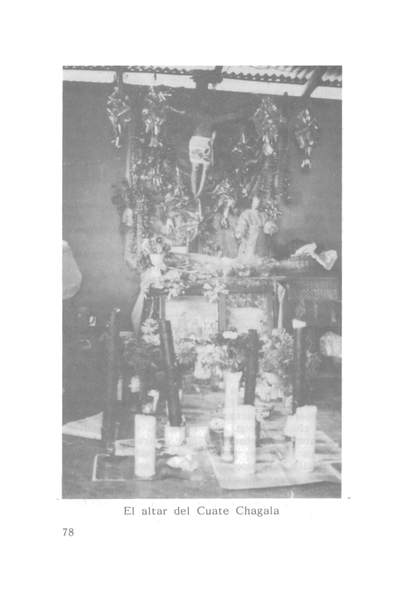
مذبح إل كواتي تشاغالا.
النبيذ الطبي والتطهير الثاني
النبيذ الطبي
استفسرت عن تركيب النبيذ الطبي الذي رأيته يُحضّر، فأراني إل كواتي تشاغالا أعشابًا تُستخدم في صنعه، منها: النعناع، والسذاب، والإيتامو، وماتا دي أولور، وسالفيا ريال؛ وتُمزج بعد غليها مع الكحول والسكر ومستخلص الزبيب. وحين سألته عن استعمال هذا النبيذ، ذكر أنه يفيد لالتهاب المعدة، ولتنشيط الشهية، ولتعزيز الحيوية كما قلت سابقًا.
التطهير الثاني
دعاني هذا الشامان إلى تجربة إجراء تطهير ثانٍ، وطلب مني خلع قميصي وكشف جذعي. بلّل حزمة أعشاب بسائله الأخضر الفاتح وبدأ يفرك بها ظهري وكتفيّ. وبعد أن أخذ كمية من السائل في فمه بصقها على وجهي وبطني وجبهتي. سألته إن كان يستخدم الإجراء نفسه مع الجميع، فأجاب بالإيجاب. وبعد ذلك جلسنا نتحدث؛ فحدثني عن ابنه الذي توفي قبل سبعة أشهر، وعن الحزن الذي سببه له ذلك. واشتكى من زوجة ابنه التي أخذت أحفاده معها بعد وفاة ابنه،
توضيح تحريري: أُبقيت الأسماء المحلية للأعشاب التي لا يحدد النص هويتها النباتية. وهذه الصفحة تكرر نص صفحة ملف المصدر 60؛ أُدرجت هنا مرة واحدة وفق ترتيب الطبعة.
نهاية الفصل الثالث
فسببت له مزيدًا من الألم. وقد طلب من الله أن تعود زوجة ابنه مع أحفاده، وهو ما حدث بعد بضعة أشهر، فأفرحه كثيرًا.
وأكد إل كواتي تشاغالا أنه أدرك أن عزاءه الوحيد هو حضور الله وإمكان البقاء على اتصال به.
الفصل الرابع
الحياة الروحية لقرية في ولاية موريلوس
صفحة بيضاء
توضيح تحريري: لا يظهر في هذه الصفحة نص من متن الكتاب؛ توجد آثار مسح قرب الحافة.
الحياة الروحية للقرية
يصف هذا الفصل الحياة الروحية لقرية زراعية صغيرة في ولاية موريلوس، قريبة من مدينة مكسيكو. ورغم صغر عدد سكانها نسبيًا وفقرها الذي يقارب البؤس، يلاحظ الزائر بسهولة أنها قرية ذات حياة روحية مكثفة.
تضم القرية ثلاثة علماء نفس أصليين على الأقل يمارسون تأثيرًا مهمًا في السكان. وإلى جانب الكنيسة الكاثوليكية، الممثلة بكنيسة وكاهن، يوجد أيضًا معبد روحاني يقع على بُعد مربع سكني واحد من الكنيسة، لكنه يعمل بصورة مستقلة.
سأقدّم أولًا وصفًا موجزًا لعمل المعبد الروحاني، لأنني أراه بالغ الأهمية، ويساعدنا على فهم الحياة الروحية
الحركة الروحانية
لهذا المجتمع.
قبل أكثر من قرن، بدأ رجل دين اسمه روكي روخاس، في بلدة سوتشيميلكو، إحدى الحركات الروحية الأكثر أتباعًا في الجمهورية المكسيكية. وتُعرف هذه الحركة بالروحانية، وغايتها أن يتعلم الأفراد ذوو الحساسية إقامة اتصال بمستويات روحية عليا، وأن ينقلوا إلى المجتمع، من خلال هذا الاتصال، رسائل وتعليمات وتعاليم آتية من مستويات روحية بديلة.
وحتى الآن، وبعد عدة انقسامات، احتفظت الحركة بمبدأ أساسي يقول إن على الفرد أن «يترك» وعيه واتصاله بجسده، ليسمح لكيانات روحية متفردة بأن تشغل هذا الجسد وتتحكم به، وتتحدث عبر الوسيط العضوي.
وقد طُورت مصطلحات كاملة لوصف هذه الاتصالات. فيُسمى الجسد، وبالتحديد الدماغ، «الجهاز». وبحسب تطور الكيان الذي يتصل به الجهاز، يُسمى «كائن نور» أو «كائن ظلمة» أو «جوهر». وتُطلق التسمية الأخيرة على أرفع الكائنات جميعًا.
أُنشئت مئات المعابد الروحانية في البلاد كلها، وتُجرى فيها طقوس متشابهة جدًا؛ يدخل الوسيط في حالة غشية روحية، وفي هذه الحالة يستقبل «الكائن» الذي سيستخدم مادته أو جسده
شوارع سان نيكولاس
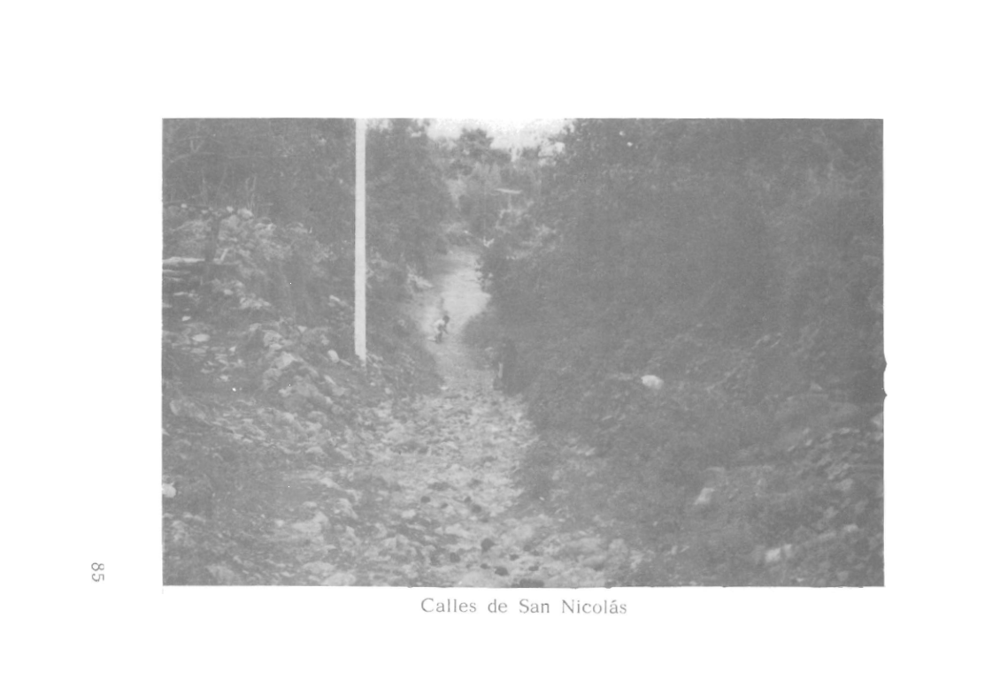
شوارع سان نيكولاس.
الدروس الروحية
لإلقاء رسالة. وتُسمى هذه الرسائل «كاتيدراس»، أي دروسًا أو محاضرات. وعند انتهائها يستعيد الوسيط وعيه المعتاد أو اليومي، ولا يتذكر شيئًا على الإطلاق مما حدث خلال غشيته.
يمارس المعبد الروحاني في هذه القرية ثلاثة أنواع من الأنشطة على الأقل. أولها الدرس الروحي، الذي يُقام أيام الأحد في العاشرة صباحًا، ويتألف من صلاة تدوم نحو ساعة، يدخل بعدها أحد أعضاء المجتمع، عادة أكثرهم خبرة، في غشية، ويلقي خلالها خطابًا يهدف إلى دفع المجتمع روحيًا إلى الأمام. وعند انتهاء خطابه يلتفت من يلقي الدرس إلى ثلاث نساء جالسات عن يمينه ومرتديات الأبيض، يُطلق عليهن «نبيّات»، ويطلب منهن وصف ما أدركنه طوال الخطاب للمجتمع. تصف كل منهن صورها وأحاسيسها ومشاعرها. وبعد كل وصف، يشرح ملقي الدرس لكل واحدة معنى رؤاها ورموزها وتسلسل الصور الذي خبرته.
وبعد أن تعبّر النساء عن تجاربهن ويقدم المتحدث تعقيبه، يتقدم كل من القائمين على تنظيم المعبد الروحاني، ويوجهون إليه أسئلة مهمة عن تطورهم الشخصي وعن المجتمع.
وثاني أنشطة هذه المؤسسة،
توضيح تحريري: تسمية «نبيّات» ترجمة للقب profetas داخل المعبد كما ينقله المؤلف، وليست حكمًا من المترجم على صفة دينية.
شوارع سان نيكولاس — صورة أخرى
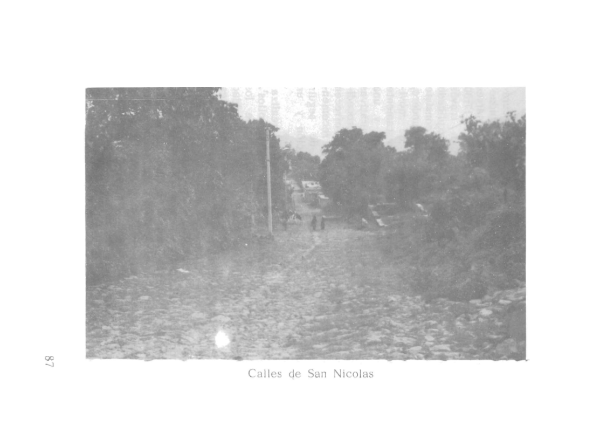
شوارع سان نيكولاس.
العلاج والتدريب
إلى جانب الدرس الأحدي، جلسات العلاج، التي يكرس فيها أعضاء المجتمع أنفسهم لعلاج مرضاهم يومي الثلاثاء والجمعة من كل أسبوع، عند الخامسة والنصف مساءً. وتُجرى هذه العلاجات بطريقة سبق أن شرحتها في مناسبات أخرى، وتقوم باختصار على اقتراب المريض من المعالج، الذي يلمسه ويؤدي سلسلة حركات بيديه، محققًا، بحسب الافتراض، إبعاد الطاقات السلبية وغرس طاقات إيجابية علاجية في كل مريض. وإلى جانب هذه الإجراءات اليدوية، يقدم المعالجون خطابًا وسلسلة وصفات وتوصيات يجب أن يتبعها المريض للوصول إلى شفاء وراحة مرضيين.
وثالثًا، يجري المعبد الروحي ما يسميه «التطويرات». و«التطوير» تدريب يقدمه أعضاء المجتمع الأقدم للأصغر سنًّا، فيعلّمونهم العلاج وإلقاء الدروس وتنمية قدراتهم الروحية.
ومن علماء النفس الأصليين الثلاثة الموجودين في القرية، وافق اثنان، هما دونيا براغيديس ودون نيكولاس، على إجراء مقابلات معهما. وفيما يلي وصف لهذه المقابلات، التي يتحدثان فيها عن بدايات كلٍّ منهما في الشامانية، وعن طرائق العلاج ورؤيته للعالم.
دونيا براغيديس
دونيا براغيديس
وُلدت دونيا براغيديس في الحادي والعشرين من يوليو 1932، وتنتمي إلى سلالة الغرانيسيروس في ولاية موريلوس، التي يعد دون لوسيو من موريلوس أشهر ممثليها. وهي تؤكد بالفعل أن علاقتها بدون لوسيو ترجع إلى والديهما. لكنها تنفي اعتمادها في عملها الشاماني على دون لوسيو أو أي من معاونيه. وبعبارة أخرى، رغم أنها تقوم بأعمال تشبه أعماله، ورغم معرفتهما المتبادلة، فهناك استقلال بينهما أيضًا.
تنحدر دونيا براغيديس من أسرة مارست الشامانية بدرجات متفاوتة. كان أبوها يجري طقوس التطهير ويعالج أهل مجتمعه كما كان يفعل جدها. ولذلك يمكن استنتاج أنها وريثة تقليد يرجع ثلاثة أجيال على الأقل، استمدت منه معارف وتقنيات تطبقها في عملها عالمة نفس أصلية.
هي معروفة لدى مجتمعها، ورغم أنها تخصص معظم وقتها لأعمال منزلها، فإن أعضاء المجتمع يقصدونها طلبًا للتخفيف من الأوجاع النفسية والجسدية، ولذلك تؤدي عملًا مجتمعيًا مهمًا.
توضيح تحريري: الغرانيسيروس (Graniceros) اسم للممارسين المرتبطين بطقوس الطقس والبَرَد والمطر، وفق استعمال الكتاب.
الحياة اليومية لدونيا براغيديس
الحياة اليومية لدونيا براغيديس
تعيش دونيا براغيديس حياة لا تختلف عمليًا عما اعتادته أي امرأة ريفية مكسيكية. يحرث زوجها الأراضي ويحصدها، بينما تطحن هي الذرة وتصنع النيشتامال، وتعد عجين التورتيّا وطعام الأسرة وتغسل الثياب وتعتني بالأبناء وتعليمهم، إلى آخره. وفي حياتها الأسرية تتصرف بصورة طبيعية تمامًا، وتقبل علاقات الحياة اليومية بوصفها واقعية وضرورية.
وفي هذا المعنى، تظهر لديها إحدى أكثر خصائص الشامانية المكسيكية شيوعًا: يبدو الشامان قادرًا على العيش في مستويين من الواقع، وقبول القوانين الخاصة بكل مستوى واحترامها والتصرف وفقًا لها. فمن ناحية، هناك مستوى الحياة اليومية بقواعده وواجباته والتزاماته واحتياجاته؛ وحين يعيش الشامان هذا المستوى، يعيشه على نحو لا تشوبه شائبة، دون أن يُلحظ اختلاف عن طريقة عيش أي شخص آخر له.
ومن ناحية أخرى، حين يعيش الشامان حياته الشامانية، واتصاله بالكائنات الأثيرية، ونداءاته وعلاجاته وتشخيصاته، فإنه يعيشها أيضًا على نحو لا تشوبه شائبة، قابلًا قواعد هذا المستوى من الواقع وقوانينه، دون أن يظهر صراعًا أو
توضيح تحريري: النيشتامال (nixtamal) ذرة معالجة بطريقة تقليدية لإعداد العجين؛ أُبقي الاسم المحلي لتجنب استبداله بطعام آخر.
بيت دونيا براغيديس
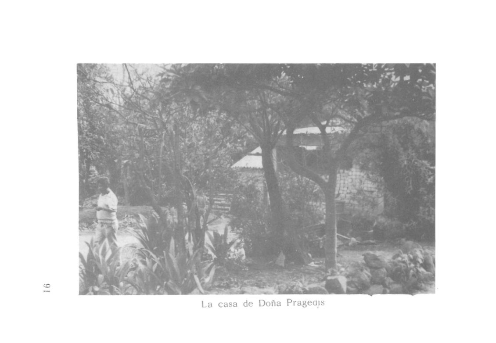
بيت دونيا براغيديس.
الحركة بين مستويين من الواقع
تناقضًا في قدرته على عيش ما قد يبدو من منظور خارجي حياتين مختلفتين تمامًا، قائمتين على أوضاع وقواعد متباينة بالكامل. تنتقل دونيا براغيديس من مستوى إلى آخر بصورة غير ملحوظة، دون أن تثير وضعًا لافتًا أو مدهشًا، بل حتى ملحوظًا.
حين تعرّفت إليها طلبت إذنها لتصويرها، فرفضت رفضًا تامًا. ولم توافق لأنها رأت أنها لا تعرف كيف ستُستخدم صورتها، ولا إلى أيدي من قد تصل. ولذلك لا أستطيع تقديم صورة فوتوغرافية لهذه العالمة النفسية الأصلية. وكل ما أستطيعه وصفها بأنها تبدو أكبر بكثير من عمرها الزمني، ذات شعر أشيب وبنية ممتلئة وملامح قوية، من السكان الأصليين، سمراء البشرة، نافذة العينين، سلسة التصرف تمامًا. تمشي حافية في الريف، وتعيش علاقة وثيقة على نحو ملحوظ بالطبيعة، ويشعر المرء إلى جانبها بطبيعية وألفة واضحتين. ليس في سلوكها تكلّف أو تصنّع أو ادعاء؛ إيماءاتها طبيعية وصوتها طبيعي تمامًا، ولا تتخذ موقف سلطة، ولا موقف تبعية أو تواضع مفرط. وبعبارة أخرى، تتصرف دونيا براغيديس على سجيتها، وتمنح محاورها الشعور نفسه.
كيف بدأت دونيا براغيديس طريقها في الشامانية
كيف بدأت دونيا براغيديس طريقها في الشامانية
تقول دونيا براغيديس إن أباها أُصيب بمرض لم يستطع أطباء المنطقة علاجه. وفي إحدى الليالي، وهو مستلقٍ في فراشه، بدأ يتأوه بإفراط وبصورة مقلقة، فقررت أن تحاول علاجه بيدها. أخذت بيضة واقتربت من جسمه وبدأت تفركه بها. وتقول إنها حين حاولت النوم تلك الليلة سمعت سلسلة من الرعود، وحين نامت رأت بروقًا تصاحبها اهتزازات أرضية تدل على عاصفة شديدة. وتؤكد أن كائنات زارتها في وقت لاحق من الليل ودعتها إلى التجول في الفضاء معها، فوافقت. ومنذ تلك اللحظة اقتيدت إلى أماكن بعيدة عن منزلها، مسافرة في الهواء برفقة موكب كائنات تتصرف كأشخاص عاديين، باستثناء قدرتها على التحليق والتنقل جوًا.
وبعد هذه الرحلة أُعيدت إلى منزلها، وفي تلك اللحظة سُلّمت مجموعة أشياء، قالت الكائنات التي نقلتها إنها تنطوي على مسؤولية علاج المجتمع وإطعام هذه الكائنات من خلال عملية العلاج.
سأل المؤلف هذه العالمة النفسية الأصلية عما تعنيه بإطعام الكائنات، فأجابت بأنهم
التلقين والاختبارات
أخبروها أنه مقابل قدرتها العلاجية والمساعدة التي ستتلقاها منهم، ينبغي أن تقدم لهم طعامًا خلال عمليات العلاج. وكان هذا الإطعام يتألف من طقوس يشتري فيها المرضى أطعمة تُقدَّم على مذبح لكائنات الهواء.
بهذه الوقائع مجتمعةً بدأ طريق دونيا براغيديس في الشامانية. وتقول إن آخر ما جرى فيها أن الكائنات أهدتها تلك الأشياء ووضعتها في شالها.
واللافت كم تشبه هذه البدايات، في تفاصيلها وأحداثها، بدايات دون لوسيو، وهو أيضًا من الغرانيسيروس في موريلوس. وقد سبق أن وصفت كيف بدأ طريقه، ولذلك سأكتفي هنا بالتذكير بأن هذا الشامان اقتيد أيضًا على يد كائنات تتنقل طافية في الهواء، وأُمر بالعلاج بعد اتصال طويل بها، كما أنه يقيم طقوسًا يقدم فيها المرضى طعامًا للكائنات الهوائية. يسمي دون لوسيو هؤلاء «عمّال الطقس»، بينما تكتفي دونيا براغيديس بتسميتهم «الكائنات».
اختبارات دونيا براغيديس
وفي روايتها عن بداياتها وما تعلّمته، أسرّت للمؤلف بأنها بعد
الاختبارات والعمل العلاجي
أن تلقت هدايا الكائنات والأمر باستخدامها لعلاج المجتمع، قررت رفض الطلب، ولم تنفذه مدة من الزمن. وبعبارة أخرى، رفضت معالجة من جاؤوا يطلبون مساعدتها. وتقول إنها بدأت منذ تلك اللحظة تتعرض لمصائب، منها نوبات روماتيزم ونزلات برد متواصلة وعلل جسدية، وموت عدة أقارب من بينهم ابنتها. وأمام هذه الكوارث قررت قبول الدعوة والالتزام الذي أقامته مع الكائنات، ومنذ ذلك الحين كرست نفسها للعلاج، واختفت العلل والأمراض والمعاناة عنها وعن أسرتها.
العمل العلاجي لدونيا براغيديس
تتنوع أساليب عملها، ويمكن اعتبار الآتية أهمها:
1. التطهير بالبيض والأعشاب.
2. الأحلام التنبؤية والتشخيصية.
3. طقوس إدخال المرشّح في صلة بالكائنات.
4. أعمال التعاون مع الكائنات.
تجري دونيا براغيديس التطهير بالبيض بطريقة مشابهة تمامًا للطريقة التي يستخدمها دون
الأعشاب والأحلام
لوسيو، ودونيا ليتشا من بويبلا، وعدد مهم من علماء النفس الأصليين.
وفي الحالات الأصعب، تغسل البيضة بالكحول قبل إجراء التطهير، وتستخدم أيضًا الفرك بأعشاب تزرعها بنفسها في حديقتها. تُنقع الأعشاب بالكحول وتُسخن، ثم تُستخدم لفرك جسم المريض كله. وخلال هذه العلاجات العشبية يجب أن يبقى المريض ثلاثة أيام بلا استحمام وفي عزلة، حتى تحقق الأعشاب أقوى تأثير لها.
وفي تقنيات الحلم، تفسّر دونيا براغيديس محتوى الأحلام ابتداء من جلسة التطهير الثانية مع مرضاها. أي إن شخصًا حين يأتي طلبًا للمساعدة، تجري له جلسة أولى، وتحدد موعدًا للثانية، ومنذ هذه الثانية تتحقق من محتوى أحلامها وتنتبه إليه لتجد فيه الأسباب والإجراءات العلاجية التي ينبغي أن تتبعها لشفاء المريض.
وتؤكد أن الكائنات تزورها باستمرار منذ أن بدأت طريقها في الشامانية، فتظهر في أحلامها وتأخذها في رحلات طويلة، تُريها خلالها إجراءات علاجية جديدة، وتحدد لها الأماكن والظروف التي ينبغي مراعاتها في علاج مرضاها.
وتقيم كذلك، لمن يطلب منها ذلك على وجه الخصوص، طقوسًا تضع فيها المرشّح على اتصال بالكائنات، كي يستطيع هؤلاء منذ تلك
الكائنات
اللحظة التفاعل والتعاون لتحسين حال المريض وتطوره. وفي هذه الطقوس تقدّم براغيديس طعامًا للكائنات وتعقد معها ميثاقًا، وتفتح من خلاله قناة تواصل بين المريض والكائنات.
يستخدم دون لوسيو إجراء مشابهًا تمامًا، ولذلك أجرؤ على التأكيد بأنهما ينتميان قطعًا إلى السلالة الشامانية نفسها.
الكائنات
تؤكد دونيا براغيديس أن الكائنات التي ترشدها في أعمالها وتأخذها إلى أماكن عبر التنقل الجوي المذكور آنفًا، أناس ماتوا وهم بطريقة ما في طور البحث عن نور داخلي. وتتعرف إليهم بوصفهم جنودًا من الثورة، أو أشخاصًا من السكان الأصليين قُتلوا في معارك سابقة، إلى آخره.
وبحسب هذه العالمة النفسية الأصلية، تحتاج هذه الكائنات إلى الطعام، ومن واجب الشامانات تلبية تلك الحاجة، وفتح إمكانات استمرار بقائها.
أدوات العمل
أدوات العمل
إلى جانب عملها معالجة، دونيا براغيديس قابلة المجتمع وممارسة لطقوس البَرَد في منطقتها.
وبوصفها معالجة، أداتها الأساسية البيضة التي تفركها بالكحول ثم تمررها على جسم المريض كله لامتصاص أدوائه. ثم تستخدم مجموعة أعشاب، منها الإستافياتي والميرتو والسالفيا ريال، تمزجها بالماء وتسخنها ثم تضيف إليها الكحول، للحصول على كتلة نباتية تمسكها بيديها وتفرك بها جسم المريض كله.
وبوصفها قابلة، تستخدم البيضة أيضًا، وطرائق القبالة المعتادة للمساعدة على الولادة.
وبوصفها من الغرانيسيروس، تؤكد أنها حين ترى عاصفة بَرَد مقبلة قادرة على تدمير المحاصيل، تأخذ رمادًا من موقدها وملعقة، وتصرخ بكل قوة شخصيتها في السحب كي تبتعد عن منطقتها وتفرغ بَرَدها في منطقة أخرى، لا يوجد فيها خطر فقد المحاصيل أو تدمير أزهار الأشجار المثمرة أو الإضرار ببيوت القرى وسكانها.
سبق أن ذكرت أنها تعد إطعام الكائنات الروحية أمرًا أساسيًا كي تشبع ولا تزعج البشر. ومن تجربتي الشخصية أستطيع القول إنني بعد
تفسير التجربة ورؤية الواقع
تلقي سلسلة جلسات تطهير منها، أخبرتني أن عددًا كبيرًا من الكائنات الروحية الصغيرة ظهر في أحلامها مطالبًا بالطعام. وفسرت ذلك بأنه يعني أن حولي عددًا كبيرًا من الكائنات الصغيرة المسؤولة عن الانزعاج الذي أشعر به منذ سنوات عدة في كوخ أملكه.
ومن المثير للاهتمام أنها في علاقتها بهذه الكائنات الروحية تتخذ موقفًا شبيهًا بما يحكم علاقتها بالسحب أو بالبَرَد. أي إنها تبدو قادرة على اعتبار الكائنات التي تراها في أحلامها والأحوال الجوية معًا ذات واقع روحي يمكن التفاعل والتواصل معه. كما تستطيع هذه الكائنات بطريقة ما الاستجابة لطلبات الشامان، إذا عبّر عنها بقوة وحزم.
رؤية دونيا براغيديس للواقع
تظهر دونيا براغيديس، مثل معظم علماء النفس المكسيكيين الأصليين الذين استطعنا دراستهم، قدرة على التعامل مع مستويين مختلفين من الواقع على الأقل. لكن،
الواقع الواحد
بخلاف شامانات آخرين، تبدو غير قادرة على التفريق بين الواقعين أو تصورهما بوصفهما مختلفين. فهي لا تتحدث، مثل دون لوسيو، عن عالم مرئي وعالم غير مرئي، بل تبدو وكأنها تعيش الواقعين واقعًا واحدًا بلا تمييز.
ومثل الغالبية العظمى من علماء النفس الأصليين، قدرتها على الصياغة المفهومية محدودة؛ ولذلك لا تعتمد خبرتها وقدرتها العلاجية على أيديولوجيا أو تنظير متطور، بل تظهران بصورة طبيعية وعفوية، بلا تفسيرات معقدة.
وفي حديثها تتصرف وكأنها ترى أن الكون المادي لا يختلف اختلافًا مهمًا عن الكون العقلي أو النفسي أو الروحي، وتمنحها جميعًا واقعًا حيًا واحدًا. فكما تتواصل مع السحب وكأنها كائنات حية، تتواصل مع أبنائها والحيوانات المحيطة بها، وحتى الكائنات الروحية التي تقول إنها تزورها وتنصحها في أحلامها.
تتوافق هذه الرؤية مع فكرة أن الشامان يعيش في عالم سحري، لكل واقعة فيه معنى حي، وتتعاون فيه قوى الطبيعة مع النفس والوعي البشريين أو تعارضهما، وهي تمتلك أيضًا خصائص كائنات حية واعية.
دون نيكولاس
دون نيكولاس
وُلد دون نيكولاس في العاشر من سبتمبر 1911، وهو رجل نحيل يبلغ طوله نحو متر ونصف، ذو تعبير طيب. يعيش مع ابنه وزوجة ابنه وعدد من أحفاده في بيت متواضع بفناء ترابي، ويعمل في الزراعة. وإلى جانب كونه فلاحًا مكسيكيًا نموذجيًا، فهو أحد معالجي المجتمع. يقصده الناس طلبًا للتخفيف من الأوجاع والمتاعب. وأخبرتني زوجة ابنه، دونيا فيرخينيا، أنه حين يعود من الحقول يذهب لزيارة مرضاه ليتعرف إلى حالة شفائهم ومستواه ومساره.
أتيت مهتمًا بالتعرف إليه، وقلقًا من ألم في ظهري أردت تخفيفه. زرت أسرته ثلاث مرات قبل أن يوافق على مقابلتي. وحين استطعت الدخول أخيرًا، سألني عن سبب زيارتي فقلت إنه انزعاج في الظهر، ودعاني بكل لطف إلى غرفة قدّم لي فيها كرسيًا. ثم نهض وأمسك إحدى ذراعيّ ووضع إبهامه على رسغي الأيمن، يتحسس منطقة جريان الدم، وأخذ ينصت إلى نبضي بصمت. ثم أمسك الرسغ الآخر وفعل الشيء نفسه.
شرح أنه يستخدم تحسس النبض لتشخيص ما إذا كان دائي جيدًا أو سيئًا، وما إذا كان
النبض والتطهير بالبيضة
ناجمًا عمّا يسمّيه «أرواح الهواء»، أم عن سببٍ ماديّ فحسب. وشرح أنها أرواح مؤذية تدخل أجساد المرضى، وأن قوّة النبض تدلّه على مدى صلتها بالعلة. وقال إن خطورة «الهواء» الداخل إلى الجسم تتجلى أولًا في ضعف النبض وفي المستوى الذي يمكن اكتشافه فيه. أي إن ضعف النبض عند الرسغ يدل على وجود «هواء» سلبي. وإذا لم يكن النبض محسوسًا إلا في الأجزاء العليا من الذراعين، كان ذلك علامة إنذار كبيرة، تشير إلى أن «الهواء» بالغ الخطورة. وإذا استطاع الوصول مباشرة إلى القلب، كان ذلك علامة قاطعة على موت المريض الذي لا علاج له.
بعد تحسس النبض طلب دون نيكولاس بيضة وزجاجة كحول. نظف البيضة بالكحول، وشرع في عملية تطهير، فرك خلالها البيضة برفق وبحركات دائرية على مناطق مختلفة من جسمي، مركزًا على الموضع أو المواضع التي أشرت إليها بوصفها مصدر المشكلة. ثم أفرغ محتوى البيضة في كأس ماء، وراقب التشكيلات البروتينية التي خلّفها البياض، ووضع الصفار ولونه. ومن هذه الملاحظة يستكمل التشخيص الذي حصل عليه من النبض.
وبعد هذه العملية كلها، أعطاني
توضيح تحريري: يستعمل دون نيكولاس لفظ aires، أي «رياح»، اسمًا لما يصفه بأرواح تدخل الجسد. وعلى لسانه نُقل هنا بمعنى «أرواح الهواء».
دون نيكولاس في محيطه الأسري
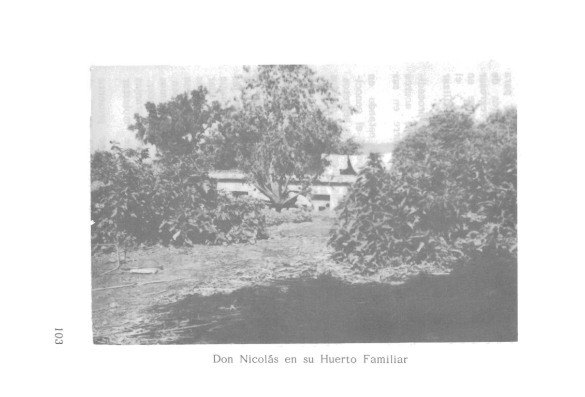
دون نيكولاس في محيطه الأسري.
رواية التلقين بالصاعقة
مستحضرًا عشبيًا مع الكحول لفرك الموضع المؤلم قبل النوم، وأخبرني أن عليّ العودة في صباح اليوم التالي، لأنه سيحلم ليلًا بالتشخيص والعلاج الدقيق الذي ينبغي استخدامه في حالتي.
سألته عن هذه الإجراءات، فحدّثني عن الكيفية التي بدأ بها طريقه شامانًا، وعمّا يحدث له في الأحلام:
«قبل خمسة وثلاثين عامًا، حين كنت في الحقل، ضربتني صاعقة. فقدت الوعي، وشرحت لي كائنات أسرار العلاج والأعشاب وطرائق المعالجة. ثم ضربتني صاعقة أخرى واستيقظت. الكائنات تتحدث بين الصاعقتين، ويختار الله المرء ليقوم بالعلاج. الصاعقة الثانية تُنهضه بعد أن تقول الكائنات ما ينبغي لها قوله.
أحيانًا يأكل الناس أطعمة قوية الرائحة في الأخاديد، فتدخلهم «أرواح الهواء»، ويموت كثير منهم لأن الأطباء لا يستطيعون فهم ما يحدث لهم ولا مساعدتهم. بعد الصواعق بدأت أعالج، وتخبرني الكائنات بما عليّ فعله. تأتي ليلًا حين أكون نائمًا، وتخبرني بما يجب فعله كما نجلس نحن هنا. أحيانًا يلزم أن نعطيها خبزًا وبرتقالًا وشوكولاتة حتى تكف عن إزعاج شخص ما».
وفي نهاية هذا الفصل يرد تفريغ مقابلة بين المؤلف ودون نيكولاس، يصف فيها دون نيكولاس
الزيارة الثانية والتطهير بسانتا ماريا
حالة شخص كانت إصابته بصاعقة بدايةَ دخوله طريق الشامانية.
الزيارة الثانية
في التاسعة من صباح اليوم التالي زرت دون نيكولاس ثانية. وجدته يزيل الأعشاب الضارة من حديقته الصغيرة، التي يزرع فيها أعشابًا ونباتات طبية. كان في مزاج ممتاز وهادئًا، ويشع إحساسًا بالسلام واللطف. حيّاني باهتمام ومحبة، ودعاني إلى الغرفة التي استقبلني فيها بالأمس.
التطهير بعشبة سانتا ماريا
سألني فورًا كيف حالي، فقلت إنني بخير جدًا، وأخبرني بما خبره في الليلة السابقة.
قال إن الكائنات التي تزعجني جاءت لرؤيته، وأشار إليها بوصفها أطفالًا مفارقين للأجساد.
أدهشني ذلك بشدة، لأن دونيا براغيديس، كما ذكرت، قالت لي قبل أسبوع في القرية نفسها ما يقوله الآن دون نيكولاس بالضبط.
وتابع أن ما أعانيه تسببه كائنات تعيش في المكان الذي أعيش فيه، ولا ترغب في
الكائنات الأطفال وكائنات المساعدة
مغادرته. وقال إنها أخبرته بأنها تريد مجموعة من الأشياء، وأنها مستعدة للرحيل إذا أُعطيت إياها.
ثم طلب من حفيده عشبة سانتا ماريا، وحين أحضرها نظفها بالكحول، واستخدمها برقة وعناية بالغتين لتطهير جسمي بطريقة مشابهة لاستخدام البيضة؛ أي إنه فرك العشبة برفق على أجزاء جسمي المختلفة، من الرأس إلى القدمين. وأثناء هذا الإجراء شعرت بعافية وسلام استثنائيين وأخبرته بذلك. فقال إن أثر العشبة هو إبعاد كل ما هو سلبي عن جسمي، وإنه سيولي اهتمامًا خاصًا لجزء ظهري الذي يزعجني.
الكائنات الأطفال وكائنات المساعدة
أكد دون نيكولاس أنه في الليلة السابقة، إلى جانب زيارة الكائنات الأطفال، اجتمع بكائناته الحامية، التي أخبرته أن علاج إبعاد الأطفال يتمثل في طقس لتطهير البيت وتقديم الطعام للأطفال.
وأعلمني بأنه متيقن تمامًا من أن هذين الإجراءين سينهيان صعوباتي بالكامل.
وافقت، واتفقنا على إجراء
الزيارة الثالثة
الخطوة التالية بعد أسبوع.
طلب مني دون نيكولاس إحضار أربعة أشياء فضية لدفنها عند زوايا البيت، وربع لتر من الكحول قربانًا للكائنات الأطفال.
الزيارة الثالثة لدون نيكولاس
وصلت متأخرًا عن موعدي معه، فلم أجده في بيته. قادني حفيده إلى حقل الذرة الخاص به، على مسافة نصف ساعة سيرًا من القرية.
سرنا بين حقول تدفئها شمس الصباح، ونباتات ذرة حديثة الإنبات في أرض مملوءة ببلورات السبج، وفي جو رطب، حتى وجدنا دون نيكولاس في حديقته التي زرع فيها الطماطم. أدهشني أنه في الخامسة والسبعين يمتلك القوة التي ظهرت في استخدامه المعول لإزالة الأعشاب الضارة من حديقته.
اتجهنا نحو الجبل ووصلنا إلى الموضع الذي سيقيم فيه طقس التطهير. ولهذا كان يجمع الأعشاب في الطريق، وقد أحضر من بيته أوعية سوائل وسعفًا يُستخدم، مثل سعف دون لوسيو، لإبعاد الأرواح السلبية.
كان الطقس يقوم على تحديد الأرض عند زواياها الأربع، ووضع
طقس تطهير البيت والأرض
قطع فضة صغيرة وشموع وسعف فيها، ثم إجراء عملية مشابهة عند زوايا البيت الأربع داخل الأرض، والانتهاء بتطهير جسمي بالأعشاب.
وأكد دون نيكولاس أن البيت صار طاهرًا بهذه العمليات، وأن اتصالاته بالأرواح أشارت إلى رغبتها في الفضة، وأن هذا شرط لتحرير الأرض والبيت وسكانه من التدخلات العقلية المتواصلة. وشرح أن ما ستأخذه الكائنات هو رائحة الفضة، أما الفضة في جانبها المادي فستبقى في الأرض. وأخبرني أيضًا أنها أشارت، في تواصله الليلي والحلمي معها، إلى وجوب تناولي سائلًا خاصًا مرتين على الريق، كي تعرف تلك الكائنات أن دون نيكولاس قد طهّرني لتوّه.
وبعد هذا الشرح، رأى دون نيكولاس أن عمله اكتمل على أكمل وجه، وطلب مبلغ $15,000.00 أجرًا على الجهد والعمل المنجزين.
وقال عند فراغه إن الحوادث والتدخلات على المستوى النفسي ستنقطع، وأضاف أن المنطقة التي تحيط بها الفضة المدفونة قد باتت محميّة من أي حدث جوي، كالعواصف والصواعق والفيضانات، قد يضر الأرض أو سكانها.
إن هذه الثقة بقوة إجراءاته
التعامل مع الكائنات السلبية
وفعالية اتفاقاته مع عمّال الطقس، تدل على رسوخ تصورهم في ذهنه.
ولعل من أكثر ما يثير الدهشة بشأن الكائنات التي يتواصل معها دون نيكولاس، أنه يسميها بنفسه كائنات سلبية، ويرى أنها كيانات مهمتها الأساسية فعل الشر، ومع ذلك يقيم معها تعاملًا دائمًا يلزمه بالتعاون معها، تحديدًا كي يمنعها من تنفيذ أفعالها الشريرة.
هذا التصور بالغ الأهمية ومنطقي، لأنه يشرح لدون نيكولاس عمله ويوضح له مصيره.
وبعبارة أخرى، يعد نفسه رجل خير اضطر إلى عقد اتفاق مع كائنات شريرة، لأنه لا يستطيع الدفاع عن المجتمعات من الهجمات التي تواصلها هذه الكائنات إلا بهذه الطريقة، وكأن هذا العمل صفة ملازمة لطبيعتها. ولذلك يقدم لها ما ترغب فيه مقابل أن تترك المجتمعات والأشخاص الذين يلتزم تجاههم علاجيًا بسلام.
ولا يبقى دون نيكولاس ملزمًا بهذا العمل مدى الحياة فحسب، بل يقبله مصيرًا لحياته ووسيلة لتحقيق ذاته، رغم أنه يستلزم علاقته بكيانات يعدّها هو نفسه سلبية.
تجارب شخصية
تجارب شخصية
أجد نفسي ملزمًا، لتيسير فهم النص، بذكر بعض التجارب الشخصية في علاقتي بدون نيكولاس.
بعد أن بنيت كوخًا ريفيًا في الجبال، مررت طوال نحو ست سنوات بتجارب لم أستطع فهمها، وكانت تملؤني بالخوف أحيانًا، إذ كان يخال لي أنّ ثمة حضورًا غريبًا يحيط بي ويحول دون نومي، فتثير لدي قلقًا لا أستطيع السيطرة عليه. قصدت علماء النفس الأصليين في المنطقة لطلب المساعدة، وكان ذلك أحد أسباب مجيئي إلى دون نيكولاس، إلى جانب أنه شكّل دافعًا ممتازًا لإجراء بحث معمق عنه. وكان انطباعي الأول معه أنني في صحبة إنسان بالغ الطيبة والبساطة واللطف، عاجز عن فعل أي أذى سحري أو الارتباط بعناصر سلبية.
لكن كلما ازددت معرفة به، بدأ يدهشني إحساس بالغ القوة يشع من شخصه كله، لا أستطيع مقارنته إلا بتجارب كانت ترد عليّ أحيانًا كأحاسيس داخلية خلال إقامتي في الجبل. وأعني بذلك أن نوعية حضور دون نيكولاس كانت بالنسبة إليّ شديدة الشبه بنوعية التجارب التي كنت أعانيها في الكوخ.
حدود التفسير
دفعني التشابه، بطبيعة الحال، إلى افتراض علاقة بين التجربتين. وقد منحني تفسير دون نيكولاس لعلاقته بعمّال الطقس، وفكرة أنهم يتغذون بطريقة ما من الحضور البشري، قدرًا من الوضوح بشأن تجاربي. لكن عليّ الاعتراف بأنني لم أستطع ولا أستطيع قبول تفسيره بوصفه التفسير النهائي والأساسي لما حدث لي. ومن ناحية أخرى، توجد مقاربات لاهوتية لظاهرة التلبّس الروحي قد تتفق مع تفسيرات دون نيكولاس، بل ومع سلالة الغرانيسيروس في موريلوس كلها، بمعنى وجود تفاعل طاقي بين البشر وكيانات روحية تتغذى من مستوى أو حالة تُفعّل لدى البشر، وتحتاج بطريقة ما إلى هذا الغذاء النفسي كي تبقى. لا أستطيع تأييد هذا التفسير بوصفه موضوعيًا، لكنني أيضًا لا أستطيع رفضه تمامًا. وكل ما يُتاح لي هو وصف تجاربي ونقل التفسيرات الأصلية بأكبر قدر من الأمانة، دون إصدار حكم عليها.
وفي هذا المعنى، يرى علماء النفس الأصليون أن هناك بالفعل سلسلة من التفاعلات الطاقية، وأن من مسؤوليتهم كثيرًا التأكد من أن تسلك هذه التفاعلات طرقًا خيّرة، وألا تؤذي المرضى المسؤولين عنهم. وهكذا،
الوسم الطاقي
استشعر دون نيكولاس الكوخ الريفي، وأجرى العمليات التي تعلمها، كوضع أشياء فضية عند أطراف الأرض الأربعة، ليطعم بهذه الطريقة الكائنات الأثيرية ويجعلها تكف عن التغذي من نفسية من يسكنون المكان. ومن أكثر عملياته إدهاشًا لتحقيق غايته العلاجية ما يمكن أن نسميه «الوسم الطاقي». فعند انتهاء عمله أعطاني مزيدًا من الأعشاب وطلب غليها وشرب منقوعها على الريق في صباحين متتاليين. وحين سألته عن سبب ذلك وهدفه، قال إن المواد التي سأتناولها ستضع علامة على حضوري، وتجعل عمّال الطقس يتعرفون إليّ ويكفون عن التأثير فيّ. أي إنه يُعلمهم، من خلال تغير ما يسببه تناول الأعشاب، بأنني أخضع للتطهير، ولذلك يجب ألا يزعجوني بعد الآن.
لا أعرف ما الذي يحدث في الجسم عند تناول المادة التي أعطاني إياها دون نيكولاس، ولا أملك وسيلة لمعرفة إن كانت تحدث تغيرات في الحقل الطاقي. وكل ما أستطيعه وصف بعض التجارب الذاتية الناتجة عن تناول هذا الوسم الطاقي. أولًا، بعد نحو ثلاثين دقيقة من شرب المستحضر، بدأت أشعر بتنشيط عاطفي كان يدفعني بطريقة ما
الخبرة النفسية بعد المنقوع
إلى التعبير عن مضامين كنت أظنها محايدة، لكنها بدت لي فجأة تحمل شحنات عاطفية شديدة. كانت تتعلق بأحداث حياتي وعلاقات ووقائع سببت لي ألمًا نفسيًا، وكنت أشعر أنها حُلّت، لكن تجربتي الحالية، بتأثير المنقوع، كانت أنها لم تُحل حقًا.
وكان من الآثار الأخرى التعرف إلى ظروف كنت أتماهى معها، معتقدًا ارتباطها بنقاط مرجعية مطلقة. وقد أتاح لي إدراك ذلك أخذ مسافة من هذه المراجع، وإدراك أنها ليست مطلقة حقًا. أي إنني استطعت بطريقة ما فك التعلق بهويات نسبية ووضعها في منظورها الملائم. وأثار فك التماهي هذا إحساسًا عميقًا جدًا بالوحدة والهجر، واندفاعًا نحو استقلال أكبر وقوة تتيح لي ألا أقع في أي نوع من التماهي.
وإلى جانب هذه الآثار النفسية كلها، سبّب المنقوع حالة شديدة من الضعف والحاجة إلى الراحة.
وبدت تجاربي النفسية متوافقة مع إحدى تأكيدات دون نيكولاس، وهي أن الكائنات التي عذبتني كل هذه المدة ستتركني وتبتعد عني عند منتصف الليل بالضبط، منذ اللحظة التي كان دون نيكولاس
تفسيران لتجربة واحدة
قد أنهى فيها عمله. وأعني أن إحساسي بالوحدة وبفك التماهي مع جوانب نسبية كان، بطريقة ما، ما يسميه دون نيكولاس هجر الكائنات الأثيرية لي وابتعادها عني.
ويستحق ذلك تحليلًا بالغ الاهتمام، لأنه يدل على أن المنظور الذي يدرك منه دون نيكولاس الواقع يعتمد على بيئته ومستواه المفهومي، ولا يتطابق بالضرورة مع منظور مستوى مفهومي آخر، كمستواي، مع أنّ بين المنظورين مواضع تلاقٍ عميقة. فما يسميه كائنات شريرة تغادر، هو بالنسبة إليّ تماهٍ مع جوانب ملموسة من الواقع. وما يسميه ابتعاد هذه الكائنات عني، هو بالنسبة إليّ القدرة على أخذ مسافة نفسية من مضامين نسبية معينة.
وبعبارة أخرى، ما قد أسميه صحة نفسية واستقلالًا يسميه دون نيكولاس تحررًا من الآثار الشريرة لكائنات روحية تتغذى من نفسيتي.
وفي الواقع، فإن التماهي مع مضمون محدد استنزاف طاقي بمعنى ما؛ يمتص فيه المضمون، إن صح التعبير، الطاقة النفسية لمن يعانيه. ويمكن تصوره كما لو أن كائنًا ذا عقل ووعي خاصين يتغذى طاقيًا من شخص.
ويدعم ذلك كله فكرة أن إحدى الخصائص الرئيسية لدى
الصفحة المطبوعة 115 — في موضعها الصحيح
المعالجين هي الاعتقاد بأن كل حدث في الكون يمتلك عقلًا خاصًا ونوايا فردية. فمثلًا، اعتبار الصاعقة التي يقودها عمّال الطقس تقرر أين تقع، إسناد عقل إلى ظاهرة لا يراها الغربي المعاصر إلا حدثًا فيزيائيًا وطبيعيًا مستقلًا عن الوعي والعقل.
وهكذا تتعارض فكرة أن للكون عقلًا ولكل ظواهره وعيًا، مع التصور المادي القائل إن الظواهر الفيزيائية مستقلة تمامًا عن العقل، فينتج نوعان من تفسير الواقع: التفسير الإحيائي من جهة، والتفسير المادي من جهة أخرى.
لكن كما رأينا، يلتقي التفسيران في آثار مشتركة وتجارب ذاتية متشابهة تمامًا، بصرف النظر عن مرتكزهما الفكري وتفسيرهما السببي.
ومن المهم للغاية للعلم المعاصر أن يعرف أن هناك أشخاصًا يمتلكون معارف متقدمة كدون نيكولاس، القادر على تنشيط عملية تحرر نفسي دقيقة عبر إعطاء منقوع عشبة محددة. فما خصائص هذه العشبة؟ وكيف تحدث آثارها؟ ينبغي أن يكون ذلك موضوع بحث لعلم الأدوية النفسية. ومن ناحية أخرى، ذكّرتني آثار هذا التناول بحدث مشابه وقع
توضيح تحريري: هذه الصفحة، المطبوعة برقم 115، موجودة في صفحة ملف المصدر 199 بعد الصفحة المطبوعة 202. أُعيدت هنا إلى موضعها في تسلسل النص.
الصفحة المطبوعة 116 — في موضعها الصحيح
حين أُتيحت لي أول فرصة للتعرف إلى دون لوسيو. فقد وصف لي هذا الشامان أيضًا شرب مستحضر من مركز أعشاب يُتناول مذابًا في زيت الطبخ. أتذكر بوضوح تام أن تجاربي بعد تناوله كانت مشابهة تمامًا لما خبرته الآن بعد تناول ما وصفه دون نيكولاس: إحساس بفك التماهي مع مضامين محددة، والاقتراب من شعور بالتحرر النفسي منها. وفي تلك المناسبة شرح دون لوسيو الآثار بوصفها تنشيطًا لنظام دفاع يمنع الكائنات الشريرة من الاقتراب مني والتأثير فيّ. أي إن ما حدث مع دون لوسيو تكرر الآن مع دون نيكولاس، وظهر مجددًا وجود تفسيرات مختلفة للواقع، لكنها تنشّط عملية الخبرة نفسها، بصرف النظر عن تفسيرها المفهومي.
وأخيرًا، من التجارب المتكررة في علاقتي بدون نيكولاس إحساس خاص في أعلى الظهر، كان يحدث كلما بدا أنه يركز على تواصله مع عمّال الطقس. وكان هذا الإحساس يتبعه لاحقًا تغير في وعيي نحو قبول ما يقوله لي بشأن عمّال الطقس.
ويبدو أن هذا الإحساس في الظهر يتوافق
توضيح تحريري: هذه الصفحة، المطبوعة برقم 116، موجودة في صفحة ملف المصدر 200. أُعيدت إلى موضعها بعد صفحة 115 وقبل صفحة 117.
نقطة التجميع والوعي
مع ما سماه كارلوس كاستانيدا (1984) تغيرًا في موضع نقطة التجميع، يسبب بدوره انتقالًا إلى الوعي المتزايد. ووفقًا لكاستانيدا ومعلّمه دون خوان ماتوس، فإن نقطة التجميع آلية تركّز وتحافظ على مستوى معين من المحاذاة بين الانبعاثات، وهي بدورها تحدد شكلًا خاصًا للإدراك. ويحيط بالجسم المادي، بحسب كاستانيدا، جسم طاقي، وتقع نقطة التجميع فيه، تحديدًا في موضع يقابل أعلى الظهر. ورغم أنني لا أستطيع التأكيد أن إحساسي مع دون نيكولاس كان تحديدًا تغيرًا في نقطة التجميع، فإن التشابه بين أوصاف هذه التغيرات عند كاستانيدا والتغير المقابل في حالة وعيي بعد الإحساس في الظهر، يدفعني إلى التفكير بوجود علاقة ما بينهما.
وإذا صح ذلك، فيمكنني اعتبار قدرته على التأثير في نقطة تجميع المحيطين به، وتغيير موضعها مباشرة، إحدى أكثر خصائص دون نيكولاس إثارة للاهتمام. كيف ينجز هذا الفعل المدهش؟ لا يمكن معرفة ذلك يقينًا، لكن نتائج تجريبية في المختبر تشير إلى أن مستويات الاتساق بين نصفي الدماغ لدى شخص تستطيع التأثير في مستويات الاتساق لدى أشخاص قريبين منه، مما يدل على أن إمكان
رؤية دون نيكولاس للواقع
تغيير إنسان لحالات إنسان آخر ليس نظريًا فحسب، بل واقع موضوعي أيضًا. وهكذا يبدو أن دون نيكولاس يمتلك، إلى جانب قدرة علاجية وطريقة خاصة لإدراك الواقع، قدرة على التأثير المباشر في وعي مرضاه.
اعتبارات بشأن رؤية دون نيكولاس للواقع
يؤكد دون نيكولاس أنه لم يدخل طريق المعرفة امتدادًا لتقليدٍ عائلي. أي إنه لا ينحدر من آباء أو أجداد ينتمون إلى سلالة مستقرة، بل حصل، بحسب قوله، على معرفته وتدريبه كلهما في الفترة بين الصاعقتين الأولى والثانية اللتين ضربتاه قبل خمسة وثلاثين عامًا.
واستمرت معرفته بالعالم الخارق للطبيعة بمساعدة كائناته الحامية، التي تظهر له كلما يقبل إجراء علاج أو وضع تشخيص أو المشاركة في تطهير.
وتواصل هذه الكائنات تعليمه ومساعدته على التطور معالجًا للمجتمع.
ومن ناحية أخرى، يبدو ضمن رؤيته للعالم أنه يقبل أن للصواعق والسحب والبروق حياة خاصة، وعقلًا ووعيًا، وأنها
مصير الكائنات
تنفذ أيضًا أعمالًا وفق أوامر خارقة للطبيعة.
وحين سألته عن أصل الكائنات الأطفال ومصيرها، قال إنها حين تُبعد عن مكان تذهب للسكن في مكان آخر. فمثلًا، بحسبه، عند إجراء طقس الإخلاء، تذهب الكائنات الأطفال التي تشغل الجبل إلى الاحتماء ببحيرات سيمبوالا أو بركاني بوبوكاتيبيتل وإستاكسيهواتل. وهذه وجهاتها بعد تطهير الجبل. وبخلاف سلالات أخرى ترى أن تطهير الكائنات الروحية يستلزم واجبًا ومسؤولية على الشامان لتحقيق زيادة في تطورها الروحي، يكتفي دون نيكولاس بإبعادها عن مكان التطهير ويأمرها بالسكن في موضع أبعد، كي لا تستمر في إزعاج مرضاه.
أي يمكننا عمومًا تمييز نوعين من إجراءات تطهير «الكائنات المفارقة للأجساد»، وفق سلالتين أساسيتين. فمن جهة، إجراء لا تقتصر فيه المسؤولية على المريض الذي يُعالج، بل تشمل الكائنات التي تسببت بطريقة ما في المرض، فتتعلق المسؤولية بتحقيق تطور الطرفين. ومن جهة أخرى، هناك سلالة معالجين كدون نيكولاس، تهتم فقط بعافية المرضى، دون الاهتمام بمصير الكائنات التي يُفترض أنها أحدثت اضطرابًا في تطورهم.
تبادل المنافع
ويمكننا أيضًا تصور نوع ثالث من السلالات، يهتم أساسًا بتحسن المرضى، لكنه يخوض أيضًا قتالًا ضد الكائنات المسببة للمرض، بمهاجمتها وتدميرها. وتتصرف سلالتا دون لوسيو ودونيا باتشيتا بهذه الطريقة أحيانًا.
ويمكن تسجيل ملاحظات مهمة متعددة حول دون نيكولاس. منها أن مفهومه للواقع، المادي والروحي، يبدو قائمًا على جوانب نفعية أو اقتصادية. فهو يرى عمّال الطقس كائنات ترغب في الطعام، ولذلك تعقد اتفاقات خاصة مع بعض البشر المختارين لتحقيق أغراضها.
ويبدو أن هذا التصور للواقع الروحي مستمد من تصور مشابه للحياة اليومية لديه. ففي الحياة اليومية تُحصد الطماطم لبيعها والحصول على مورد اقتصادي يتيح البقاء. ولأن الحياة اليومية نموذج ما للحياة الروحية، يُتوقع أن تكون القوانين متشابهة. ولذلك توجد كائنات، هي عمّال الطقس، تعقد نوعًا من الاتفاق التجاري مع الشامانات والمعالجين، فتجعل الصاعقة تضربهم ليتلقوا تعليمات تتيح عملًا تعاونيًا مشتركًا. يحصل المعالج على المال لقاء علاجه، ويحصل عمّال الطقس على
اعتبارات عامة ومقابلة دون نيكولاس
ما يشبع احتياجاتهم الأثيرية التي يبدو أنهم يحتاجون إليها بشدة في بُعدهم.
ومن الواضح أنه لا يمكن إجراء مناقشة معمقة بشأن الواقع الضمني لعمّال الطقس. وكل ما نستطيعه إعادة عرض التصورات كما يقدّمها المعالجون ويتمثلونها ويحملونها.
اعتبارات عامة
من دراساتنا لسلالة الغرانيسيروس في موريلوس، ممثلة بدون لوسيو ودونيا براغيديس ودون نيكولاس، يمكن استنتاج أن لهذه السلالة تفسيرها الخاص للواقع، وأن أعضاءها يبدون عاجزين تمامًا عن تجاوز هذا المستوى من التفسير وطرح أسئلة مثل الأصل العميق لتصوراتهم، أو حتى أصل خلق واقعهم وخبرتهم. ولذلك يلزمهم مستواهم المفهومي بالتماهي مع سلسلة علاقات سببية مستمدة من حياتهم اليومية، يمدّونها إلى الكون المتعالي.
مقابلة مع دون نيكولاس
دون نيكولاس: ... الصاعقة وأنا كنت، الصاعقة، لهذا أنا على اتصال بالصاعقة.
المقابلة — الاتصال بالصاعقة
المؤلف: بقيت على اتصال بالصاعقة؟
دون نيكولاس: نعم، نعم، ولهذا أعرف أين تضرب وأين لا تضرب. والآن، بما أنني هنا، ستضرب في قطعة أرض أخرى، مثل هنا أو هناك في الأسفل، لكن هنا لا، لا، لأن المكان أُمّن لذلك. نتحدث ليلًا، جميع الأرواح، وأقول لهم ويقولون لي، وكل شيء. بعضهم يغضب مني لأنني أخرجهم من مكانهم، لكن لا ينبغي أن يكونوا، كما أقول لهم، حتى لو بقوا هنا، فليبقوا راضين جدًا، ولا يؤذوا الناس الذين يعيشون. لكن هذا الذي يبدأ يؤذي ويؤذي ليخرجني من هنا، ليرسلني إلى مكان آخر، فليذهبوا، هنا سيبقون راضين جدًا بأرضهم وكل شيء، هنا في الأعلى، في... في... ما اسمه؟... سان خوان تيسومبا.
المؤلف: آها!
دون نيكولاس: ... كان هناك أيضًا صبي، صبي، شاب، صغير السن، ولم يكن يستطيع العودة، لم يكن يستطيع العودة، كان ميتًا. ولأنني كنت قريبًا من هناك، جاؤوا لرؤيتي: «اذهب لتره، انظر كيف». قلت لهم إنه ميت، ألم يقترب منه أحد؟ قالوا: «لا أحد، لا أحد، ما زال حيث سقط». نعم، ذهبت لأراه، واقتربت منه وكلمته، وكلمت أرواح الصاعقة الشريرة، وقليلًا قليلًا عاد، وضربته صاعقة أخرى، فجلس، جلس، ولم يكن يقول إلا: أين أنا... أين أنا؟ ولم يكن يعرف، لكنني بدأت أقول له: أنت هنا، هنا في سان خوان
توضيح تحريري: أُبقي التكرار والتردد وتحول الضمائر في الحوار كما في التفريغ. و«كان ميتًا» وصف المتحدث نفسه للحالة.
المقابلة — الشاب الذي رفض العمل
تيسومبا، أنت هنا، استيقظ، استيقظ، لنذهب، لنذهب. وناديت الآخرين: تعالوا، تعالوا، إنه لا يستطيع المشي، يجب حمله. وحملناه إلى بيته هناك، هيا... ثم بدأت أطهّره وأطهّره، ولم تكن هناك أعشاب، لا توجد هناك، فذهبوا لجلبها من مكسيكو وأحضروها، وطهّرته. تصوّر، بعد ثلاثة أيام صار بخير، نعم.
لكنه كان دائمًا خائفًا، خائفًا من الصاعقة، الصاعقة، كان يخاف ويخاف. وقلت له: انظر، كان قد بدأ من قبل يعمل ويطهّر، وأنت تعرف ما قالوه لك. كان يقول: نعم، نعم، نعم، نعم، كأنني أسمعهم وهم يتحدثون، كما حين يحدثني أحد، هكذا. لأنه إذا حدثه أحد كأن الصاعقة ضربته للتو، يستطيعون أن يأخذوا كل شيء، فينسونه؛ الأفضل لا، ويضربونك من جديد. وهكذا، حتى الآن لم يبدأ العمل، لا يريد، لا يريد لأنه يقول إنه صغير جدًا ويستحي. وحتى لو استحى، عليه أن يعمل.
المؤلف: وإذا لم يعمل، ماذا يحدث له؟
دون نيكولاس: يبقى فورًا، تدخل فيه الأرواح الشريرة ويصبح كالأبله، يصير مذهولًا، ويبقى هكذا ما دام لا يريد العمل.
المؤلف: ومن يرسل الصاعقة؟ من يقرر، من؟
دون نيكولاس: من يرسلها هم الأرواح الشريرة.
المؤلف: الأرواح الشريرة؟
دون نيكولاس: نعم... الصاعقة، هم على اتصال
المقابلة — مطالب الأرواح
بعضهم ببعض، لأن الذي يرسل الصاعقة تأتيه روح شريرة وتقول: «تلك الشجرة لا تعجبني، اذهب وضعه». فتنزل الروح الشريرة كأنها ملاك صغير، وتنزل وتضعه، تصوّر قنبلة بجوار الشجرة، وترحل، وعندئذ يدوي الرعد وتسقط الصاعقة.
المؤلف: لكن لماذا الأشرار؟ أي إن الأرواح الشريرة اختارتك أنت؟
دون نيكولاس: نعم، نعم.
المؤلف: لكن ألا يكون ذلك شرًا؟
دون نيكولاس: لا، ليس شرًا؛ إذا عملنا كما يقولون فليس شرًا.
المؤلف: لكن ماذا يريدون إذن؟
دون نيكولاس: يريدون أن يُقدَّم لهم الطعام، لأن هناك أماكن كثيرة ذهبت إليها لأعالج وأطهّر، ويطلبون قطعتَي خبز وبرتقالتين وموزتين، وجرّة صغيرة من صلصة المولي واثنتي عشرة تامالي صغيرة من اللحم وحده. وهكذا نساعدهم ونعيلهم، كما الآن، ترى أننا أبعدناهم، فيذهبون فورًا إلى مكان آخر، لكنهم يصلون إلى بيت آخر لكي يطعموهم.
المؤلف: ولا يؤذونك أنت؟
دون نيكولاس: لا، لا، لأن مصيرنا قيل لهم، أن يأتوا بنا للعمل معهم. هناك في الوادي شاب، شاب، هو أيضًا شاب، بدأ العمل هنا للتو. وهناك رجل آخر، رجل آخر أيضًا، أيضًا.
المؤلف: دون لوسيو؟
دون نيكولاس: دون لوسيو.
المقابلة — دون لوسيو وعمّال الطقس
المؤلف: هل تعرف دون لوسيو؟
دون نيكولاس: نعم، دون لوسيو كامبوس، وزوجته اسمها فيدرونيو.
المؤلف: حسنًا، هل أنتما صديقان؟
دون نيكولاس: بل نحن كومبادريس...
المؤلف: آه! انظر.
دون نيكولاس: لأن زوجة ابنه اسمها لوسينا، وهي ابنة أخي أو أختي.
المؤلف: وهل يفعل دون لوسيو ما تفعله أنت؟
دون نيكولاس: آه نعم، الشيء نفسه.
المؤلف: وتتحدثان عن ذلك؟
دون نيكولاس: نعم، يتحدث عن ذلك أيضًا، يتحدث كله عن ذلك، يتحدث عن ذلك أيضًا، كل ذلك، كله.
المؤلف: لكنه يقول إنهم يُسمون عمّال الطقس.
دون نيكولاس: عمّال الطقس، هم أنفسهم، عمّال الطقس.
المؤلف: فلماذا تسميهم أرواحًا شريرة؟
دون نيكولاس: لأن هذا اسمهم بالضبط.
المؤلف: لأنهم فعلوا الشر؟
دون نيكولاس: نعم، نعم.
المؤلف: وما زالوا يفعلون الشر؟
دون نيكولاس: نعم، أينما ذهبوا يواصلون، فيطردونهم إلى مكان أبعد، ويعودون لمواصلة ذلك.
المؤلف: إذن أنت تؤدي عملًا جيدًا.
دون نيكولاس: وذلك دون لوسيو، نعم، نعم يعمل جيدًا، لا أقول غير ذلك، يعمل جيدًا. يعمل فقط نحو خمس، أربع سنوات.
توضيح تحريري: كومبادريس (compadres) علاقة قرابة طقسية أو رفقة وثيقة؛ أُبقي لفظها لأن المقطع لا يحدد أساسها. والاسم «فيدْرونيو» منقول كما طُبع هنا.
المقابلة — الاختلاف مع المعبد
ويعودون إلى الظهور، فقط لاستخراج المال، أكثر ممن يعالجه. لا، بل يجب أن يضع شيئًا لكل الزمن. ذهب دون لوسيو بعيدًا إلى حيث عالج، هناك نعم. انظر، أنا وهو نتفاهم جيدًا، جيدًا، جيدًا، نعم. الذي لا نتفاهم معه هو صاحب المعبد هناك.
المؤلف: نعم.
دون نيكولاس: وهو ابن أخي أو أختي، فاوستو دي لا كروز.
المؤلف: ولا تتفاهمان؟
دون نيكولاس: لا، لا، يغضب لأنني أخرج الأرواح الشريرة. لأنه يريدها أن تستمر في إيذائهم كي يواصلوا العمل معه. ذلك شيء وأنا شيء آخر. نعم، نعم، عنده الآن سيدة يعالجها، لكنها في حال خطرة، ومن يعرف هل ستتحسن أم لا، حالتها خطرة، خطرة، خطرة. لم تعد تستطيع النهوض ولا شيئًا، هم ينهضون بها فقط، ينهضون بها، لكن من يعرف هل ستتحسن.
المؤلف: نعم، بالطبع.
دون نيكولاس: نعم، نحن كومبادريس.
ملاحظة ختامية
الأرض كلها المحيطة بالقرية، بما فيها الجبل الذي يقوم عليه الكوخ الريفي، مغطاة عمليًا ببلورات السبج مختلفة الأحجام. ولذلك فإن الوصف السابق لنباتات الذرة التي تنمو محاطة ببلورات السبج ليس صورة بلاغية أو أدبية، بل وصف
توضيح تحريري: الكلام عن صاحب المعبد اتهام منقول على لسان دون نيكولاس. كما أن صياغة بداية هذه الصفحة مضطربة في التفريغ الإسباني؛ أُبقي معناها الأقرب دون حذف.
الملاحظة الختامية والمراجع
حقيقي لخصائص الأرض.
ولا ندري إن كانت هناك علاقة سببية بين وفرة بلورات السبج في هذا المكان وبين الوقائع الشامانية التي تحدث فيه. وما نعرفه هو أن لبلورات الكوارتز أثرًا لا شك فيه على التواصل البشري، يزيد نشاطه وعمقه.
بل أظهرت دراسات مختبرية أن بلورات الكوارتز تبدو مؤثرة في النشاط الدماغي، وتزيد قطعًا ما سميناه التواصل المباشر. ولم يُثبت أن لبلورات السبج أثرًا مشابهًا، لكن ذلك قد يفسر بعض الأحداث المرتبطة بقدرة التواصل الشاماني في المنطقة، وربما الوقائع المرتبطة بسقوط الصواعق.
وينبغي اعتبار ما سبق مجرد تكهن إلى أن يخضع للاختبار التجريبي.
المراجع
كاستانيدا، ك. النار من الداخل. إيديفيسيون. المكسيك. 1984.
غرينبرغ زيلبرباوم، ي. شامانات المكسيك. المجلد الأول: علم النفس الأصلي. ألبا كورّال/المعهد الوطني لدراسة الوعي. المكسيك. 1987.
الفصل الخامس
دونيا ماتيلدي من سوكونوسكو
بقلم جيني لويس
جيني لويس متعاونة في هذه الدراسة عن شامانات المكسيك.
صفحة بيضاء
توضيح تحريري: هذه الصفحة بيضاء في ملف المصدر.
دونيا ماتيلدي من سوكونوسكو
سوكونوسكو، المنطقة الواقعة في جنوب غرب ولاية تشياباس بمحاذاة غواتيمالا، منطقة زراعية أساسًا، تضم مزارع كبيرة ذات أرض شديدة الإنتاجية، مخصصة خصوصًا لزراعة البن والكاكاو. وفي هذا الجزء من تشياباس ما يزال الناس، ومعظمهم من ذوي الأصول المختلطة مع تأثيرات مايا، يحتفظون بعادة استشارة المعالج، أو «تشيمان» كما يسمونه هناك، عند المرض أو حدوث مشكلة شخصية. ويروون حالات أطباء يشخّصون الإصابة بالعين، ويوصون الوالدين بأخذ الطفل إلى معالج تقليدي ليشفيه.
تعيش دونيا ماتيلدي في قرية من سوكونوسكو، وهي امرأة من تشياباس في نحو الخامسة والأربعين، متزوجة ولها ابنان يدرسان في الجامعة. إنها امرأة بسيطة وخجولة ولطيفة المعشر. أظهرت في طفولتها علامات التخاطر والاستبصار، وتعمل منذ الثانية عشرة
بيت ماتيلدي والأخ مارتين
وسيطة روحية. وهي معروفة جدًا في المنطقة بعملها عالمة نفس أصلية، ويقصدها طلبًا للراحة أناس من أنحاء الولاية ومن مدن أخرى في الجمهورية، بل من خارج البلاد.
تعيش في بيت بسيط مطلي بالجير، له فناء هائل تحيط به أشجار الفاكهة والزهور الاستوائية، ومفعم بعطر زهر الحمضيات. ورغم كثرة المنتظرين للاستشارة والدجاج والديك الرومي الذي يجري في كل مكان، يسود جو من السلام والهدوء. وإلى جانب الفناء مبنى صغير مطلي بالجير أيضًا، له نافذة واحدة تطل إلى الخارج؛ وهو حجرة دونيا ماتيلدي التي تقيم فيها «طاولتها». إنها غرفة صغيرة فيها طاولة عملها، مغطاة بمفرش أبيض، وعليها مرآة وكأس ماء ومزهريات مليئة بأزهار بيضاء، وأوراق تكتب عليها وصفاتها الطبية أو توصياتها لمرضاها. وإلى جانبها مذبح بصلبانه وصور القديسين والأزهار والشموع. وتُشم رائحة ريحان قوية. ويلفت النظر منذ الوهلة الأولى التنوع الكبير في المنتظرين للدخول، من أبسط الناس حالًا إلى المسؤولين وأصحاب المهن المتخصّصة.
الأخ مارتين
تكرّس دونيا ماتيلدي الصباحات للتطهير والاستشارات. وحين ينتهي مرور
الغشية والأرواح المتعاونة
جميع المرضى الذين ستطهرهم، تدخل في غشية وتستقبل في هذه الحالة بقية المنتظرين. وقبل الدخول فيها تبدأ بالصلاة، طالبة حماية جسدها، «المادة»، كي لا تدخل روح شريرة. ثم تركز على تنفسها وتتأمل حتى يبدأ جسدها بالتشنّج. عندها تحلّ فيه، بحسب روايتها، روح «الأخ مارتين»، أي مارتين كاباييرو الذي تقول إنه كان معالجًا بالأعشاب من غواتيمالا في آخر تجسد له. وعند دخولها الغشية يمكن ملاحظة تغيرات في شخصيتها وهيئتها: تتحول لكنتها التشِياباسية إلى لكنة غواتيمالية، وتتغير نبرة صوتها، وتتخذ إيماءات وحركات رجالية، ويختفي خجلها.
تشرح دونيا ماتيلدي أن مرضاها يجرون استشارتهم الأولى عادة مع الأخ مارتين، لكنها تعمل أيضًا مع أرواح أخرى عند الحاجة. وتشغل جسدها أرواح أخرى، لكنها لأناس ما زالوا أحياء. تتلقى هذه الأرواح نداء تخاطريًا من الأخ مارتين، فتخرج من أجسادها، وبعد «رحلة نجمية» تصل لتشغل جسدها. وتذكر، من بين غيرها، روح طبيب سويسري وعالم نفس فرنسي وفتاة في العاشرة موهوبة روحيًا جدًا. وتقول إنه حين تشغل روح أخرى جسدها، تكون روحها حرة في الذهاب حيث تشاء، لكنها عند الخروج من الغشية لا تتذكر
الذاكرة وأساليب العلاج
ما حدث لها. لا تعرف ما قاله الأخ مارتين أو «كائن» آخر لمرضاها، ولا تتذكر خروجها من جسدها ومشاهدتها أحداثًا أخرى خارج الحجرة. وتقول إن الأخ مارتين يظهر في فترة بعد الظهر عقب الاستشارات، فيناقشان الحالات التي رآها صباحًا والعلاج الذي أوصى به لكل حالة. ويشرح لها الأدوية والأعمال التي عليها إعدادها. وينبغي إبراز أنها، داخل الغشية أو خارجها، تتذكر تمامًا أسماء جميع مرضاها ومشكلاتهم وأوجاعهم. وحتى لو عالجت شخصًا مرة واحدة وهي في الغشية، تستطيع في اليوم التالي، قبل الدخول فيها، أن تحييه باسمه وتخبره بما تفعله من أجل شفائه. وهنا يثير الأمر سؤالًا: هل تتصل بالفعل بـ«كائن» آخر، هو الأخ مارتين في هذه الحالة؟ أم لعلّها، على نحوٍ ما، تتصل بمستوى آخر من وعيها هي؟
أساليب العلاج
يقصد الناس دونيا ماتيلدي طلبًا للمساعدة في مشكلات صحية أو عاطفية أو اجتماعية. ومهما كانت المشكلة، يُلاحظ أن اهتمامها الأساسي هو معرفة العوامل
التشخيص والتطهير
النفسية الكامنة وراءها. وهي تشدد كثيرًا على أهمية التفكير بإيجابية وعدم السماح للقوى أو الأفكار السلبية بالتأثير في المرء.
وبعد الدعاء إلى الله طلبًا للإرشاد وللعناية بالمريض وشفائه، تقرأ كف المريض وتركز على كأس الماء الموضوع على الطاولة، لتضع التشخيص. وبهذه الوسيلة تعرف تفاصيل الحياة الشخصية لكل مريض، وترى الأدواء والمشكلات التي تصيبه.
وفي بعض الحالات، حين تشعر أن المريض يحمل شحنة من الطاقة السلبية، تصف سلسلة جلسات تطهير، عادة خمسًا، وقد تزيد في الحالات الخطرة. تجريها بأغصان الريحان، وأحيانًا بالسذاب والأسوتشيل أيضًا. ويساعدها التطهير على تدقيق التشخيص. وإذا كانت حال المريض سيئة جدًا، اسودّ غصن الريحان وذبل؛ أما حين تصبح لديه قوى أكثر إيجابية، فلا يُلاحظ تقريبًا فرق قبل التطهير وبعده. وأحيانًا، بعد وصف سلسلة الجلسات، تساعد المريض بأسئلة دقيقة على تحديد حالته النفسية، وتقدم اقتراحات ترشده إلى إمكان تحسين وضعه.
وإذا رأت من التشخيص أنه «معمول له عمل»، فإنها، إلى جانب التطهير، تزيل العمل بالشموع والكحول والبلسم، وتشدد كثيرًا على قوة الصلاة في هذه الحالات.
العمليات المتجسدة وغير المرئية
وحين يعاني المريض مرضًا، تعطيه أحيانًا مستحضرات عشبية أو تصف دواء تجاريًا جاهزًا. وفي الحالات الأشد تقرر ضرورة التدخل. وتشرح أنها تجري نوعين من العمليات: عمليات متجسدة وعمليات غير مرئية.
حين تقرر أن المريض يحتاج إلى عملية متجسدة، تطلب منه ترتيب دخوله إلى المستشفى الذي يختاره، ثم تزويدها باسم الطبيب الذي سيجري العملية واسم المستشفى وموعد التدخل. يدخل المريض كأي مريض، لكنها ترسل، عند موعد العملية، مساعدة روحية إلى الطبيب الذي يجريها.
أما في العمليات غير المرئية، فتطلب من المريض أن ينام مبكرًا في يوم محدد، وأن يتهيأ للبقاء في السرير طوال اليوم التالي. وحين يكون قد نام، نحو منتصف الليل، تصل أرواح الأطباء المتعاونين مع الأخ مارتين وتجري العملية؛ وأحيانًا تُجري زرع أعضاء، وتُدخل أجهزة شفافة عند الضرورة. وفي أغلب الحالات يشكو المرضى في اليوم التالي انزعاجًا في موضع الجسم الذي أُجريت له العملية، لكنهم يشعرون بعد أربع وعشرين ساعة بقدر من الراحة.
وعندما سألتها لماذا تحتاج إلى هذين النوعين من العمليات، ولماذا لا يمكن دائمًا إجراء
الثقة والصلاة
العمليات غير المرئية، أجابت بأن غير المرئية أفضل دائمًا بطبيعة الحال، لكن المريض لا يملك دائمًا الثقة الكافية، وهناك مرضى يحتاجون إلى أن يروا بأعينهم أنهم خضعوا فعلًا لعملية. جعلتني إجابتها أفكر في حالة دونيا باتشيتا، وهل كانت تحتاج حقًا إلى العمل بسكين الغابة، أم كان يمكنها إجراء عمليات غير مرئية أيضًا. وتذكرت ما رواه لي شخص أجرَت له باتشيتا عملية؛ قالت له إن إجراء عملية غير مرئية ممكن، بلا سكين وبلا ألم تمامًا، لكن معظم الناس يشعرون بالحاجة إلى معرفة أنهم يُفتحون وإلى الشعور بالألم.
وشرحت دونيا ماتيلدي أنها تستخدم في علاجاتها، قبل كل شيء، قوة العقل والصلاة، تدعمها الشموع والبلسم والكحول، لجلب النور إلى المريض وإبعاده عن التأثيرات السلبية، لكنها أكدت أن الأهم هو الصلاة والإيمان بالله.
ملاحظات شخصية
أثناء انتظاري لمقابلة دونيا ماتيلدي، أُتيحت لي فرصة الحديث مع أشخاص آخرين ينتظرون الاستشارة. جاؤوا جميعًا بتوصية، وبسبب ما سمعوه عن العلاجات والعمليات غير المرئية.
الملاحظات الشخصية — تتمة
كان بعضهم يعرف شخصيًا مرضى خبروا هذا النوع من العمليات، ورووا لي عن مرضى أُجريت لهم عمليات لسرطان الأمعاء وحصى الكلى واللوزتين، وقالوا إنّ صور الأشعة المأخوذة قبل العمليات وبعدها تُظهر أن المرض زال تمامًا. وللأسف، لم يسمح ضيق الوقت بمقابلة هؤلاء المرضى شخصيًا أو رؤية صور الأشعة.
وقال آخرون إنهم جاؤوا لاستشارتها بسبب مشكلات شخصية خطرة بدأت في بعض الحالات منذ سنوات، وإنهم شعروا بعد استشارتين أو ثلاث بأن الوضع بدأ يتغير وأن الحل أصبح قريبًا.
وفي زيارتي الأولى رأيت رجلًا يصل بمشكلات صحية شديدة، وجهه رمادي ومتلوٍ من الألم. ورأيته ثانية بعد يومين أكثر استقامة في قامته وأفضل مظهرًا صحيًا. وحين علّقت على هذا التغير أمام دونيا ماتيلدي، أخبرتني بأن عملية غير مرئية أُجريت له الليلة السابقة، أُدخل خلالها جهاز يساعد الجهاز الهضمي على أداء عمله.
وخلال الأسبوع نفسه، في مناسبات مختلفة، خضعت أنا وزميلتان لاستشارات معها، شاكيَات الأعراض نفسها: التعب والصداع. وأتاح ذلك تقدير أسلوب عملها. ففي الحالات الثلاث قدمت تفسيرات مختلفة جدًا وعلاجات متباينة تمامًا. وصفت لإحدانا دواء تجاريًا، وقالت لها
اختلاف العلاجات وقراءة الأفكار
إنها، رغم كونها إيجابية أساسًا، تحمل ظلًا أو كائنًا يريد الاستيلاء على روحها، وإن عليها أن تكون أشد إيجابية وألا تسمح للتأثيرات السلبية بإصابتها. وتبين أن الأدوية تخص الجهاز العصبي أساسًا، ومن هنا يحتمل أيضًا أن يكون ما تسمّيه دونيا ماتيلدي «ظلًّا» ميلًا إلى نوبات اكتئاب. وقالت لأخرى إنها تعاني تأثيرًا سلبيًا، وأوصتها بأن تسكب عصير الليمون على نفسها بعد كل استحمام. وقالت للثالثة إن المشكلة ترجع إلى روح شديدة القلق، وأوصتها بالحصول على هرم صغير والجلوس تحته نحو نصف ساعة يوميًا «لمحاذاة» الاهتزازات.
وفي كل مرة تحدثت معها، كان لدي انطباع أنني أمام عقل قوي يقرأ عقلي كما لو كان كتابًا مفتوحًا. استطاعت أن تصف لي ما أعدّه أهم سمات شخصيتي، وكانت تعرف وضعي الراهن تمامًا. وفي مناسبتين، بينما كنت أنتظر الدخول، كنت أصوغ في ذهني أسئلة أريد طرحها. وحين رأتني بدأت فورًا تقريبًا بالإجابة عنها دون حاجة إلى قول شيء. وكنت أشعر دائمًا في حديثي معها أن الأسئلة التي تبدأ بالتشكل في عقلي يُجاب عنها قبل التلفظ بها.
رؤية دونيا ماتيلدي للعالم
رؤية دونيا ماتيلدي للعالم
تشرح دونيا ماتيلدي أن أول ما تفعله في جميع العلاجات هو الصلاة إلى الله، وبعد الحصول على إذنه لعلاج المريض، تجري العلاج بالتحكم في القوى الكوكبية، وتنجح بذلك في تغيير طاقة مرضاها.
وتتحدث عن أبعاد تختلف عن البعد الذي نعيش فيه، وتشرح أن العلاجات والعمليات التي تجريها تقع في الحقيقة في تلك الأبعاد. وهي تؤمن بالتناسخ إيمانًا راسخًا، وتقول إن معظمنا ينتقل عند الموت إلى البعد الرابع، أي البعد الروحي الأول، حيث نستريح ونواصل تطورنا الروحي ونحن ننتظر التجسد التالي. والروح التي أنهت دورات تناسخها تصل إلى البعد الروحي الأول، وتستمر في التطور حتى تمر بالثاني وتصل إلى الثالث، بُعد «الأرواح عالية الارتقاء». ويمكن لإنسان شديد الذكاء وذي تطور روحي معين أن ينتقل مباشرة إلى البعد الثالث عند إكمال تناسخاته. وتقول إن الأرواح عالية الارتقاء، ومنها الأخ مارتين، هي التي تعود إلى الأرض متّخذةً جسد دونيا ماتيلدي وسيطًا للعلاج، على حدّ قولها.
الفصل السادس
دون أتاناسيو من سييرا تاراهومارا
صفحة بيضاء
توضيح تحريري: هذه الصفحة بيضاء في ملف المصدر.
التاراهومارا
يشكل التاراهومارا إحدى جماعات السكان الأصليين الأكثر عددًا في الجمهورية المكسيكية. ويُقدّر سكان تاراهومارا في سييرا تاراهومارا، الواقعة بشمال البلاد في ولاية تشيهواهوا، بما بين سبعين وتسعين ألفًا. وهم موزعون على مجتمعات عدة، ويُصنّفون عمومًا إلى تاراهومارا العليا وتاراهومارا السفلى. يعيش سكان العليا في الأجزاء المرتفعة من الجبال، بينما يعيش سكان السفلى في وديان الجبال وأخاديدها.
يرتدي التاراهومارا لباسًا مميزًا جدًا يتألف من قميص واسع وسروال قصير وصنادل هواراتشي خاصة شديدة الخفة. ويستخدم بعضهم أيضًا شريطًا عريضًا حول الرأس بألوان مختلفة. ويرتدي آخرون على طريقة شمال
توضيح تحريري: التقدير السكاني وصف تاريخي من زمن تأليف الكتاب، وليس إحصاءً معاصرًا.
ابنة شامان من التاراهومارا
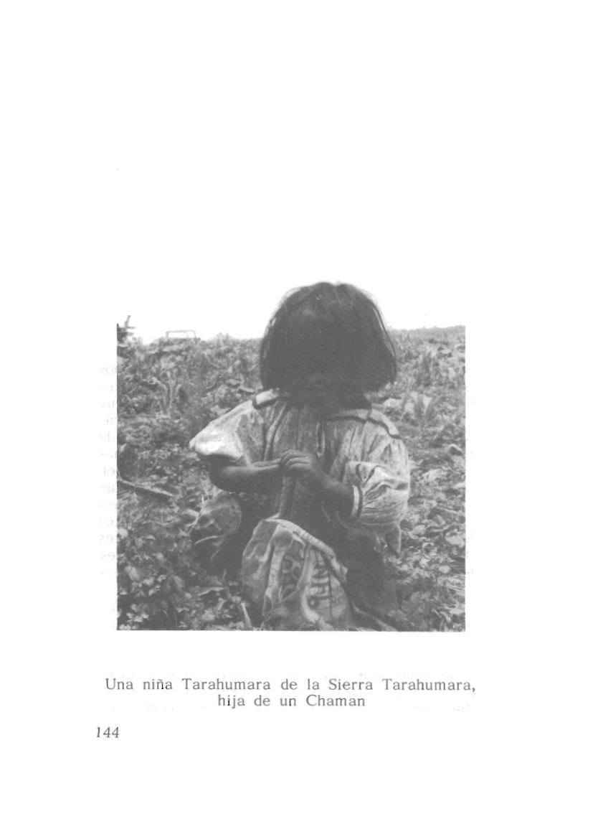
طفلة تاراهومارا من سييرا تاراهومارا، ابنة شامان.
الأرض والمجتمعات والرحلة
البلاد، عادة مع قبعة، وباستخدام الصنادل نفسها الموصوفة آنفًا.
يمتلك التاراهومارا غابات صنوبر ومساحة كبيرة من الأرض، وقد تعرضوا باستمرار للاستغلال من ذوي الأصول المختلطة ومن الرجل الأبيض، الذي يستولي على أراضيهم ويستخدم أخشابهم لمصلحته. وبطبع مسالم ونبيل، فضّل التاراهوماري الابتعاد عن الحضارة المختلطة، وبنى مجتمعات يكاد الوصول إليها يتعذر، في أماكن لا طرق ولا مسالك إليها، ويعيشون هناك في أكواخ صغيرة. وتوجد أيضًا أراضٍ مشاعية للتاراهومارا يتشارك سكانها الأرض، لكنهم يحبون العيش منعزلين، كأنهم يحتاجون إلى وصول خاص لمساحات شاسعة ومناظر جبلية هائلة.
يحكم السكان الأصليون التاراهومارا من يسمونهم «الحكام»، ومجلس أعلى يتألف من أحكم قادة مجتمعاتهم وأنضجهم وأكثرهم خبرة.
رافقني في الرحلة دون غوادالوبي فييرو، الرئيس السابق للمجلس الأعلى للتاراهومارا، الذي تفضل بإرشادي في الجبال وأخذي إلى المجتمعات بحثًا عن شامانات. اتجهنا إلى تاراهومارا العليا، التي تتميز بمناظر هائلة تكثر فيها غابات الصنوبر والأنهار الغزيرة الصافية والشلالات والأودية الخضراء المملوءة بزهور شتى الألوان، والصخور الضخمة والطرق الوعرة و
بيت شامان تاراهوماري
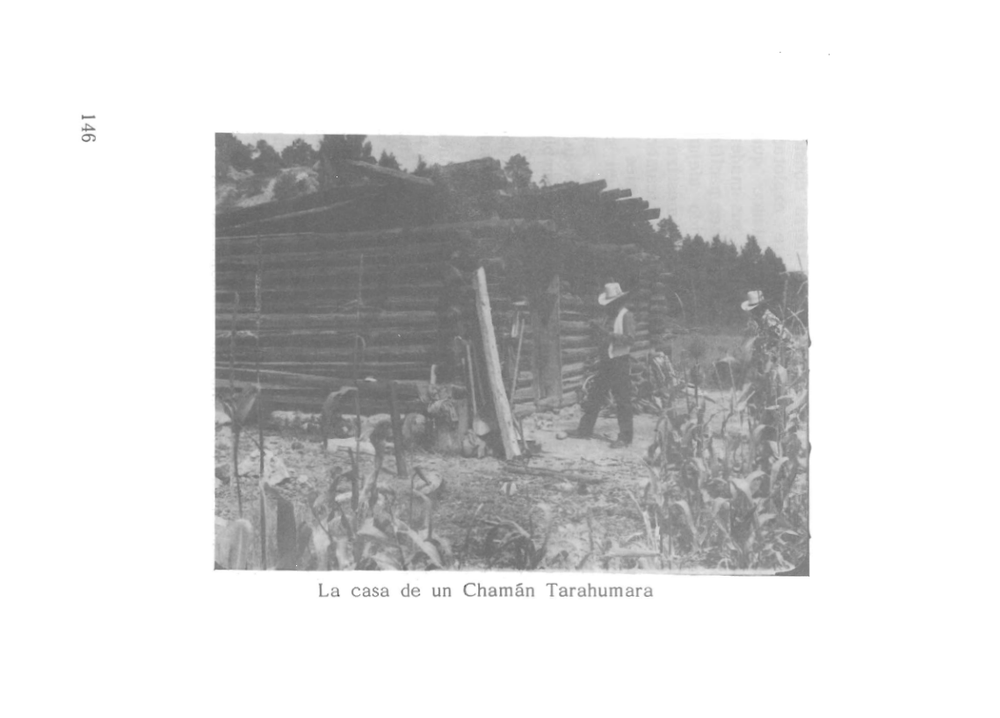
بيت شامان تاراهوماري.
البحث عن الشامانات
حيوانات برية منها الخيول البرية وبعض النمور والأفاعي الجرسية وطيور ذات ريش غريب متعدد الألوان. اجتزنا طوال ثلاث ساعات بسيارة جيب مسلكًا بالغ الصعوبة، بحثًا عن شامان تاراهوماري. (انظر الملحق).
لم يكن هذا الشامان، دون تشيمالي، في بيته، لكنني استطعت إدراك نوعية حياته اليومية من خصائص كوخه والحديث مع أسرته. والمسكن الذي اعتبره دون غوادالوبي مألوفًا ونموذجيًا شديد التواضع، مبني بجذوع مكدسة فوق بعضها، بأرض ترابية وسقف من الجذوع، متسخ ومهمل، إلى جانب حقل صغير كانت زوجة الشامان تجمع فيه النباتات بمساعدة طفلين صغيرين. لقد أثّر فيّ فقره.
وفي اليوم التالي، وبعد هذا الإخفاق في لقاء دون تشيمالي، توجهنا، ونحن ما نزال في تاراهومارا العليا، إلى أرض مشاعية يسكنها عشرة آلاف من السكان الأصليين على مساحة 5600 هكتار من الغابات. اجتزنا الغابة ووجدنا في موضع معزول تمامًا بيت دون بينو ليرما، وهو شامان تاراهوماري، لكنه لم يكن فيه. وأثرت فيّ مرة أخرى الوحدة والعزلة اللتان يبدو أن شامانات التاراهومارا يعيشون فيهما.
شامانات التاراهومارا ودون أتاناسيو
شامانات التاراهومارا
وفق دراساتنا، هناك نوعان من شامانات التاراهومارا: يُسمى الأول «سوكوروامي»، والثاني «أوغيروامي». السوكوروامي هو الساحر (انظر الملحق) الذي يتولى إجراءات السحر. ويعتبره التاراهومارا شريرًا أو سلبيًا، ووظيفته الرئيسية إحداث المرض أو الأذى بطلب من صاحب مصلحة بينه وبين أحد أفراد المجتمع خصومة أو مشكلة. أما الأوغيروامي فهو معالج المجتمع، أي الشامان الذي يكرس نفسه للشفاء واستعادة الصحة، ويُعد «طبيب» المجتمع. وتشيع بينهم مزحة تقول إن الأوغيروامي يعالج ما يفعله السوكوروامي، أو إن السوكوروامي يُمرض والأوغيروامي يشفي.
دون أتاناسيو كروز
بعد المحاولة الثانية غير الناجحة للعثور على أوغيروامي تاراهوماري، قررنا التوجه إلى موضع يبعد نحو عشرة كيلومترات عن مدينة سيسوغيتشي. كنا قد سمعنا أن أوغيروامي يعيش في المنطقة، وكان إحساسي عند الوصول أنها مكان مثالي تمامًا لحياة شامان. نهر هادئ صافٍ بين جبلين، في وادٍ خصيب تشكل
لقاء دون أتاناسيو
حوله، وعدة تاراهومارا يصطادون في النهر حين وصلنا بسيارتنا. علمنا أن الشامان ليس هناك، فقررنا، خائبين، الذهاب للراحة ومتابعة البحث في اليوم التالي.
وفي الصباح اتجهنا إلى مدينة كريل، وعلمنا فيها بوجود شامانين في المنطقة، فذهبنا للبحث عنهما. وعلى بُعد نحو عشرين كيلومترًا من كريل التقينا شابًا تبين أنه ابن دون أتاناسيو، فقادنا إلى بيت أبيه.
استطاعت الجيب بلوغ منتصف الطريق، وأكملنا الباقي سيرًا. وصلنا إلى وادٍ صغير فيه كوخان مبنيان على طريقة التاراهومارا، أي بجذوع متراكبة، وأخبرنا ابن دون أتاناسيو أنه سيذهب للبحث عن أبيه الذي كان في الحقل. وبعد دقائق وصل دون أتاناسيو، وأثرت فيّ ملامح قوته وتعبير جسده كله، الذي كان تعبير كائن متمركز تمامًا في ذاته ومحافظ على الاتصال بنفسه. كانت شخصيته مهيبة ومفعمة بالطاقة وذات موهبة قيادة طبيعية.
تعارفنا، وحين شرحت رغبتي في الحديث معه، لاحظت فورًا حذرًا شديدًا أخذ يلين تدريجيًا، حتى تحول بعد دقائق من الحديث إلى قبول نسبي. وقال إنه بنى بيديه البيت الذي
بيوت دون أتاناسيو
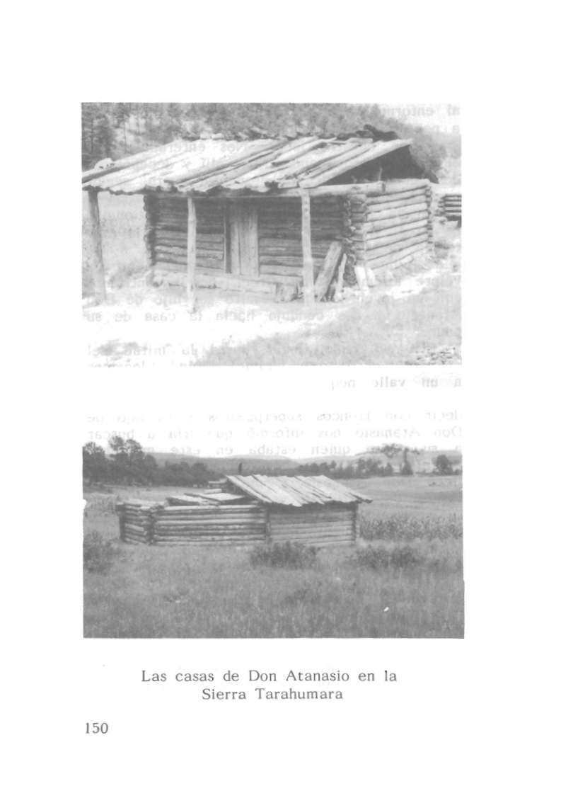
بيوت دون أتاناسيو في سييرا تاراهومارا.
البيت والفزع
كنا فيه، وإن له بيتًا آخر يستخدمه أكثر في إجراءات الأوغيروامي، ودعانا إلى زيارته. وافقنا، وسرنا في الجبال نحو نصف ساعة حتى وصلنا إلى مكان يمكنني وصفه بالفردوسي: كوخ صغير من جذوع الأشجار أيضًا، معزول تمامًا وسط وادٍ خصيب أخضر تحيط به جبال صخرية.
دعانا إلى دخول الكوخ الذي بناه بيديه أيضًا، ولاحظت فيه مذبحًا شبيهًا بما رأيته في بيوت الشامانات المكسيكيين الذين عرفتهم، وسريرًا صغيرًا وكراسي ومقاعد جلسنا عليها.
الفزع
بدأ دون أتاناسيو بالقول إنه يعمل أساسًا على صرف الفزع. وحين سألته عما يقصده بهذه التسمية، شرح أن الفزع حدث مزعج ومفاجئ يسبب اختلالًا في الشخص. لم يستخدم هذه الكلمة، لكنني استنتجت من كلامه أنه يقصد ذلك.
ووفقًا لدون أتاناسيو، يجعل الفزع جزءًا أو روحًا من الشخص تبتعد عن جسده، ومنذ تلك اللحظة يبقى ناقصًا، مع
طفلة من التاراهومارا
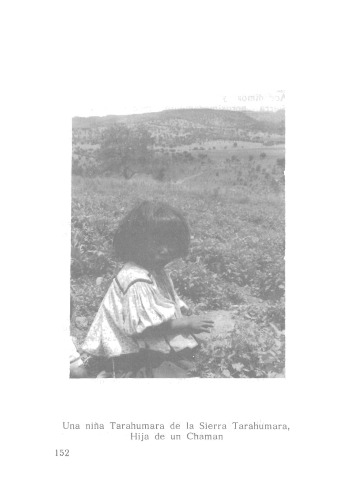
طفلة تاراهومارا من سييرا تاراهومارا، ابنة شامان.
التشخيص بالنبض
نوبات من الحزن والاكتئاب والوحشة.
التشخيص بالنبض
سألته بعد ذلك كيف يعرف أن شخصًا لديه فزع، فقال إنه يستخدم تحسس النبض. وبناء على طلبي عرض نظام تشخيصه، فحدث الآتي: أخذ صليبًا صغيرًا معلّقًا على الجدار ووضعه على ساعد أحد مرافقينا، ووضع إبهامه فوق وريد الساعد. ثم كرر العملية نفسها على الساعد الأيمن. ثم وضع الصليب وإبهامه بين حاجبي الشخص، ثم على قمة الرأس، وأخيرًا عند منطقة القلب.
وحين سألته عما يكشفه في هذه المواضع، قال إنه يشعر بنشاطها النابض، ويستطيع بناء على أحاسيسه أن يعرف يقينًا إن كان هناك فزع أم لا.
طلبت أن يستخدم الإجراء معي، فوافق. والتجربة التي خضتها حين تحسس نبضي في المواضع كلها المذكورة، كانت أنني أُفحَص على يد حضور ذي قدرة كبيرة
دون أتاناسيو
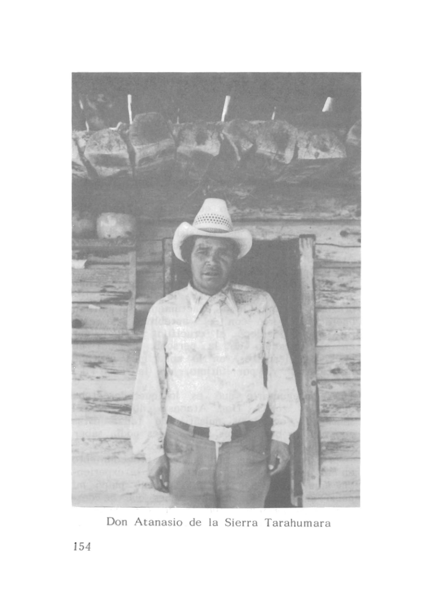
دون أتاناسيو من سييرا تاراهومارا.
المرجع الداخلي للشامان
على النفاذ إلى ما قد أسميه «كينونتي» أو «أناي» الأعمق. كان الأمر كما لو أن شخصًا يعرفني منذ سنوات طويلة يستشعر حضوري في أعمق ذاتي، ويعرف إن كنت بخير أم لا. ومن الواضح أن تجربتي الذاتية تشير إلى أن تشخيص دون أتاناسيو يتطلب وجود نقطة مرجعية خالصة وكلية، تُقارن انطلاقًا منها خبرة المريض الداخلية، ويُقدَّم التشخيص وفق نتائج المقارنة. أي إن الاستنتاج الذي أستطيع استخلاصه من تجربتي هو أن كائنًا متمركزًا تمامًا في نفسه قارن نفسه بكياني، وعرف من نتيجة المقارنة إن كنت في حال صحة أم لا، متخذًا صحته الخاصة مرجعًا.
أرى من المهم التشديد على هذا الوصف، لأنني أشعر بأن قدرة الشامان على البقاء في حالة إنسانية مثالية والتعرف إليها داخل نفسه، هي ما يتيح له العمل علاجيًا تجاه إنسان آخر، على مستوى التشخيص أو العلاج، بل الوقاية أيضًا. وأعني أن الشامان، وفق ملاحظاتي، شخص على اتصال حقيقي بالمستويات المناسبة للصحة النفسية، ومن قدرته على البقاء في تلك الحالات ومعرفة كيفية الوجود فيها يستطيع أداء عمله. إنه متخصص في حالات الوجد، كما قد يقول ميرتشا إلياده،
زوجة شامان تاراهوماري
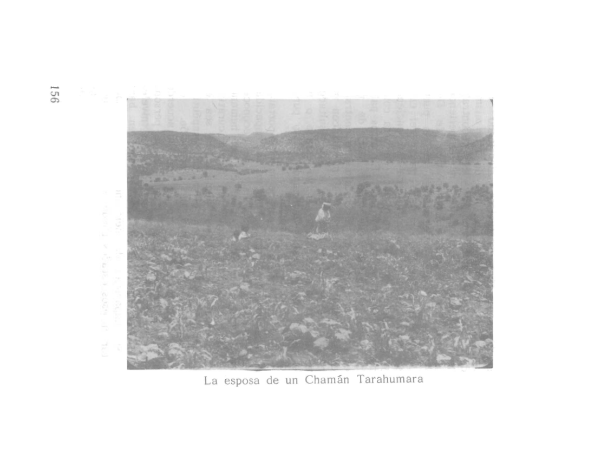
زوجة شامان تاراهوماري.
أن يكون الإنسان مكتملًا
وبوصفه متخصصًا في حالات الوجد، يستخدم معرفته بها للتعرف إلى الآخر وتوجيهه إلى المسار المناسب.
الاكتمال
وتأكيدًا لما ذكرته، شرح دون أتاناسيو تصوره لواقع الإنسان هكذا: في كل إنسان، بحسبه، ثلاث أرواح. وحين تعمل هذه الأرواح الثلاث بصورة صحيحة وتكون مجتمعة، يكون الإنسان مكتملًا. أما حين تبتعد إحداها فيمرض ويصبح ناقصًا ومفزوعًا. ومفهوم الفزع تحديدًا يعني أن حدثًا خارجيًا جعل إحدى الأرواح الثلاث تبتعد عن الجسد، وحالة عدم الاكتمال هذه هي الفزع.
ومسؤولية الأوغيروامي، بحسب دون أتاناسيو، إعادة الروح التي ابتعدت إلى موضعها المناسب؛ أي جعل الإنسان الذي فقد اكتماله يستعيده.
ومن المفهوم أن يكون الأوغيروامي نفسه مكتملًا كي يستطيع تشخيص عدم اكتمال المريض، وأن يكون اكتماله نقطة المرجع التي ذكرتها، ويستخدمها الشامان في
زوجة شامان تاراهوماري — صورة أخرى
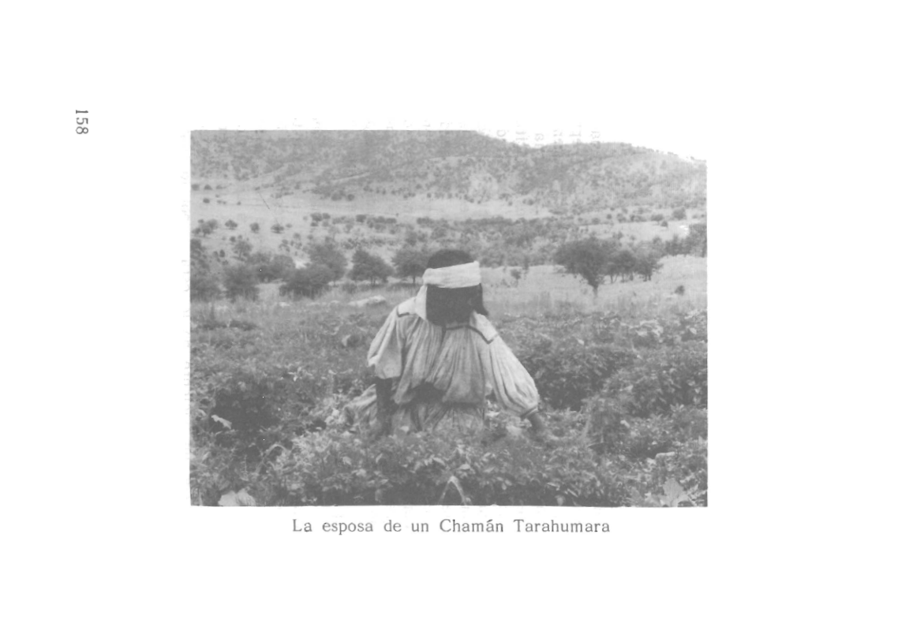
زوجة شامان تاراهوماري.
الأعشاب وعودة الروح
تشخيصاته وعلاجاته. أي إن الشامان المكتمل، بما لديه من هذه النقطة المرجعية، يدرك غيابها لدى شخص آخر، ويستطيع أيضًا إعادته إلى حالة التكامل.
الأعشاب
يستخدم دون أتاناسيو الأعشاب لتحقيق عودة الروح المفقودة في الفزع. ويستخدم ثلاث جرعات لمرضاه، على أساس أن كل جرعة موجهة لإعادة إحدى الأرواح.
سألته ماذا يحدث إذا لم تُفقد روح واحدة فقط، بل روح أخرى أيضًا. فأجاب بأن هذا يؤدي بالضرورة إلى الموت. ومن ناحية أخرى، قال إنه حين يُفزع شخص ويفقد بالتالي روحًا، ويبقى في هذه الحال مدة طويلة جدًا، فقد يأتي وقت لا يعود الأوغيروامي قادرًا فيه على اكتشاف أي علامة خارجية على غيابها. وهذا بالغ الأهمية، لأنه يعني أن اختلالًا تكون له أولًا مظاهر واضحة وتغيرات يستطيع الأوغيروامي اكتشافها، يجعل استمرارُه تلك المظاهر تختفي. وبحسب دون أتاناسيو، لا يعني اختفاء المظاهر وجود الصحة أو
دون أتاناسيو — صورة أخرى
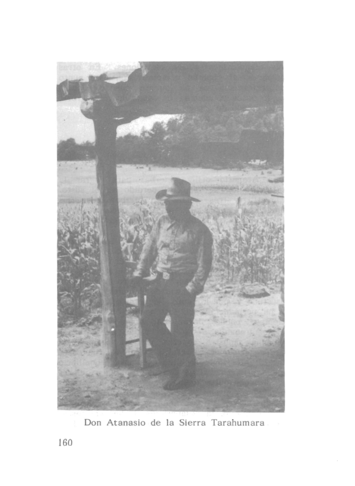
دون أتاناسيو من سييرا تاراهومارا.
الاتصال بالله وفرضية نفسية فسيولوجية
اكتمال الكائن؛ فقد يبقى ناقصًا دون أن يُظهر ذلك خارجيًا.
الاتصال بالله
ومن ناحية أخرى، فإن مفهوم الاكتمال، بحسبه، يعني أن الشخص على اتصال بالله. أي حين تكون الأرواح الثلاث مجتمعة، يستطيع التلقي من الألوهية، مما يجعل نموه يستمر. أما حين تُفقد روح، فيُفقد الاتصال وتتوقف التغذية من الألوهية.
فرضية نفسية فسيولوجية
يمكن اعتبار الإنسان صاحب ثلاث وظائف أساسية، يؤدي حضورها وعملها الملائم إلى صحة نفسية كاملة، فيما يؤدي غياب إحداها إلى اضطرابات واختلالات خطيرة جدًا. هذه العناصر الثلاثة هي: أولًا المراقب، وثانيًا «ذات الخبرة»، أي مَن يعيش التجربة ويشعر بها، وثالثًا «صوت الرؤية».
المراقب هو ما يتيح إدراك الخبرات أو تأملها من
المنطقة المحيطة ببيت دون أتاناسيو
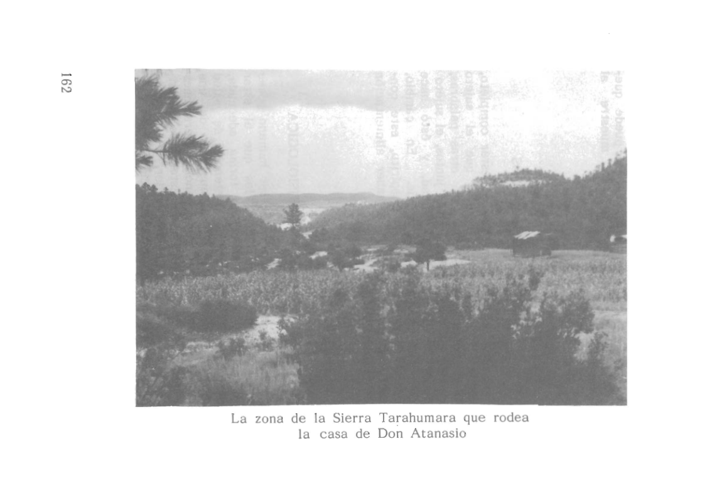
منطقة سييرا تاراهومارا المحيطة ببيت دون أتاناسيو.
المراقب وذات الخبرة
مسافة نفسية مناسبة. يتماهى المراقب مع ذاته، لا مع الخبرة. يمكن مراقبة الأحاسيس الجسدية والاضطراب العاطفي والقلق والارتباك، وأيّ أمر يمرّ به مَن يعيش التجربة.
ولذلك فإن قدرة المراقبة من أكثر وظائف الإنسان أساسية. ومن ناحية أخرى، تتيح المراقبة صياغة الخبرة خوارزميًا ووضعها في سياق ملائم، وعدم التماهي خصوصًا مع جوانب محدودة منها. ومراقبة المرء المستمرة لحالاته، كما تُستخدم مثلًا في تقنيات تأمل مثل فيباسانا أو التأمل ذي الإحالة الذاتية، تجعله يطور قدرته الواعية وقدرته على التوحيد، حتى يحقق درجة استثنائية من الصحة النفسية.
أمّا مَن يعيش التجربة فهو الأشدّ ارتباطًا بها. فإذا شعرتُ بألم، تماهيتُ مع الألم بوصفي مَن يعيشه. وإذا راودني انفعال، عشتُ ذلك الانفعال في نفسي. فمَن يعيش التجربة هو الذي يشعر، أمّا المراقب فيتأمّل هذا الشعور من موقع لا تمسّه التجربة نفسها. والفرق بينهما أن الأول لا يتماهى إلا مع نفسه، بينما الثاني يتماهى مع أي حدث
المشهد المحيط بالبيت
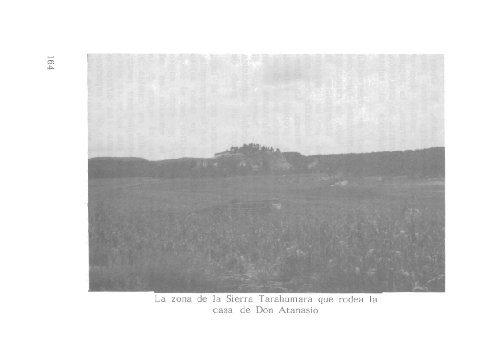
منطقة سييرا تاراهومارا المحيطة ببيت دون أتاناسيو.
الطريق إلى البيت
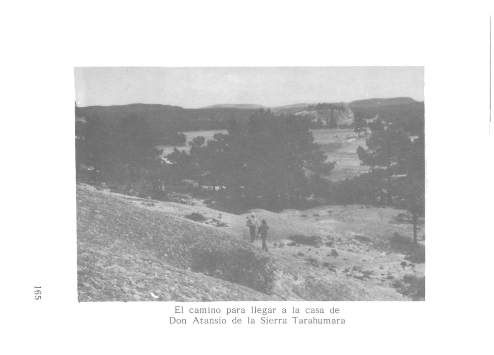
الطريق المؤدي إلى بيت دون أتاناسيو في سييرا تاراهومارا.
الطريق إلى البيت — صورة أخرى
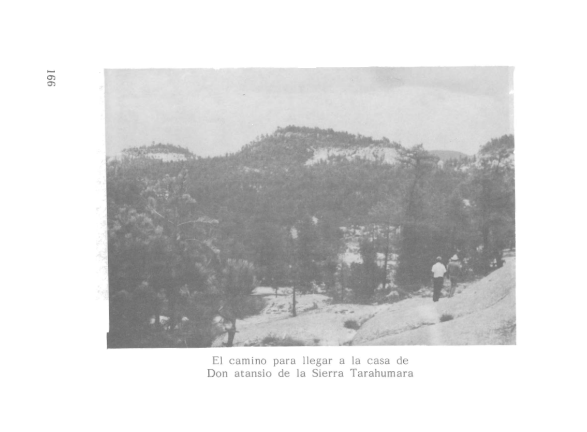
الطريق المؤدي إلى بيت دون أتاناسيو في سييرا تاراهومارا.
البيت في سييرا تاراهومارا
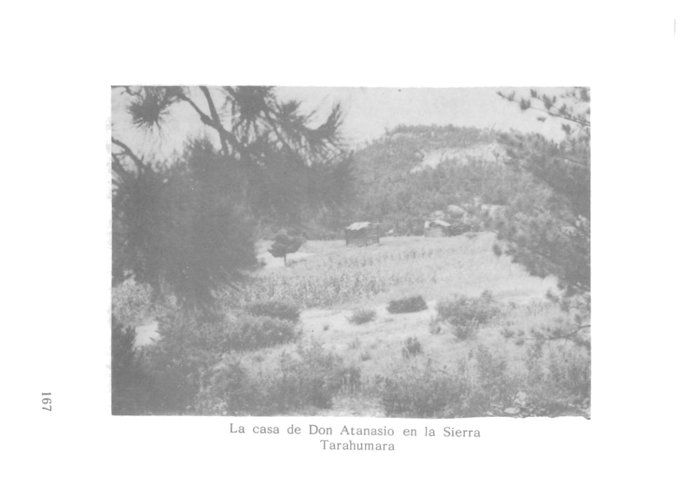
بيت دون أتاناسيو في سييرا تاراهومارا.
البيت — صورة أخرى
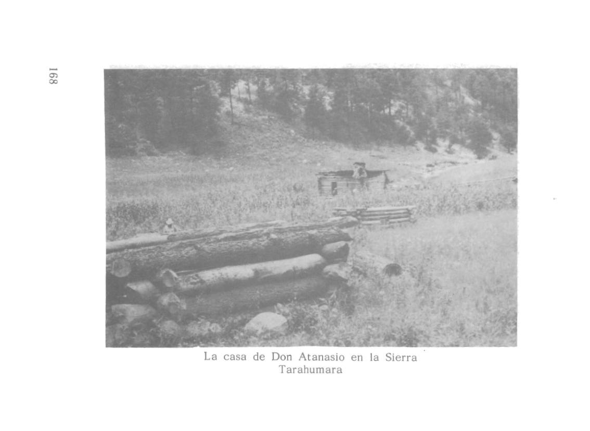
بيت دون أتاناسيو في سييرا تاراهومارا.
صوت الرؤية والتفرد
يمرّ به. والشخص السليم يستطيع أن يشعر وأن يراقب شعوره أيضًا، فتجتمع فيه سلامة مَن يخوض التجربة وسلامة مَن يلاحظها.
لكننا نمتلك كذلك آلية تعمل جسرًا بين المراقب وذات الخبرة؛ آلية ذكية تتعرف إلى معنى الخبرة وإلى حضور المراقب وإلى وجود الإحساس نفسه. وتُسمى هذه العملية الذكية «صوت الرؤية». إنه الآلية التي تتيح إسناد معنى إلى الخبرة وفهمها والتفكير فيها ومعرفة منشئها ونتائجها. وحين يمتلك الإنسان قدرة سليمة على الإحساس بصفته ذات الخبرة، وعلى المراقبة بصفته المراقب، وعلى الفهم، يكون شخصًا مكتملًا وسليمًا وقادرًا على النمو.
يشكل المراقب وذات الخبرة وصوت الرؤية وحدة، هي ما نسميه الفردية. والإنسان المكتمل والمتفرد هو من يمتلك العمليات أو الآليات الثلاث، ويكون في الوقت نفسه واحدًا موحدًا في ذاته.
ومن دون أن أجرؤ على الجزم بأن دون أتاناسيو يقصد بأرواحه الثلاث المراقب وذات الخبرة وصوت الرؤية، أود الإشارة إلى تشابه بعض التصورات المرتبطة بها. مثلًا،
دون أتاناسيو — صورة ختامية
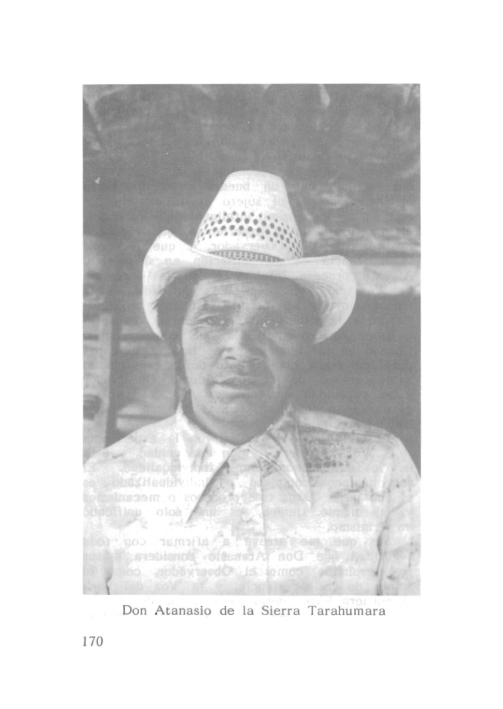
دون أتاناسيو من سييرا تاراهومارا.
خلاصات عامة
فكرة وجود ثلاث أرواح، ثم فكرة أن الإنسان مكتمل حين تكون موجودة، وثالثًا فكرة أنه موحد في ذاته وقادر على التلقي حين تحضر الأرواح الثلاث.
كما أن افتراض وجود العناصر الثلاثة: المراقب وذات الخبرة وصوت الرؤية، قد يفسر ما يحدث عند غياب أحدها. فمثلًا، يؤدي غياب ذات الخبرة إلى إنسان عاجز عن الشعور، بارد ومنغلق أمام الحياة. ويؤدي غياب صوت الرؤية إلى إنسان عاجز عن فهم ما يحدث له.
ويبدو أن الأوغيروامي يسير في اتجاه مشابه حين يرى الإنسان مريضًا أو مفزوعًا إذا لم يكن مكتملًا، وكانت إحدى أرواحه الثلاث غائبة.
خلاصات عامة
تتعدد الخلاصات الممكنة. أولًا، يبدو شامانات التاراهومارا علماء نفس أصليين حقًا، بمعنى أنهم حافظوا على العزلة عن الحضارة الغربية بقدر الإمكان. ولذلك تمثل تصوراتهم وعلاجاتهم وقدراتهم التقنية انعكاسًا أصيلًا حقًا لصورة من صور
نهاية الفصل السادس
الشعب المكسيكي. لكن هذه الأصالة ليست تامة. فدون أتاناسيو، مثلًا، يستخدم الصلبان المسيحية في تشخيصاته، ويبدو أن تصوره للأرواح الثلاث مرتبط أيضًا بالثالوث المسيحي، لكنني لا أستطيع الجزم بوجود صلة بالثالوث، فما لديّ من معلومات عنها لا يكفي حتى الآن.
ومن ناحية أخرى، يبدو الشامان التاراهوماري، كدون أتاناسيو، قادرًا على عكس نقطة مرجعية لماهية الإنسان المكتمل والمحافظة عليها. وهذه بالنسبة إلينا، نحن الذين تربينا في مدن هائلة، تذكير مهم بطبيعتنا الحقيقية؛ على الأقل هذا انطباعي حين أتأمل تجاربي معه. لقد ذكّرني بطريقة ما بوجود إنسان قادر على الاكتمال، وبوجود إنسان قادر على معرفة وجود إنسان مكتمل. ولهذا كله أشكر دون أتاناسيو على إتاحته لي أن أعرفه.
الفصل السابع
فكر الأوغيرواميس الراراموري ولغتهم في سييرا تاراهومارا
صفحة بيضاء
توضيح تحريري: هذه الصفحة بيضاء في ملف المصدر.
الراراموري
كما ذكرت، ينتمي التاراهومارا إلى إحدى أكثر الجماعات الأصلية المكسيكية عددًا، ويتوزعون على قرى صغيرة في إقليم سييرا تاراهومارا المهيب بولاية تشيهواهوا.
يتحدثون لغة الراراموري، ولذلك يُعرفون بالراراموري. وهم مسالمون وصبورون، ومشيتهم وقورة ونبيلة. مناخ سييرا تاراهومارا متطرف؛ شتاؤه مثلج وحرارته دون الصفر، وصيفه حار. وعلى مدى مئات السنين من إقامتهم هناك، تكيفوا مع البيئة واكتسبوا قدرة هائلة على التحمل الجسدي، تظهر في قدرتهم على الجري المتواصل نهارًا وليلًا في سباقات الكرة التقليدية، أو الرقص ليالي كاملة رقصة الماتاتشينيس خلال احتفالاتهم الطقسية.
لديهم تنظيم هرمي صارم، يحتل فيه حكامهم أعلى
الراراموري — صورة
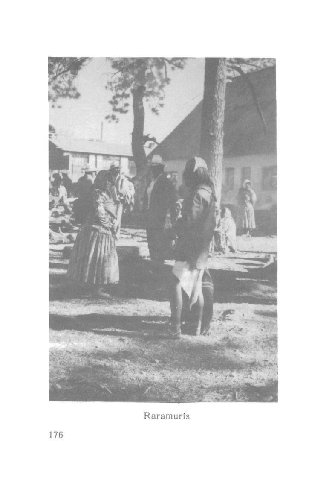
الراراموري.
مفهوم الجسم البشري
المناصب. ويُعرف أطباؤهم التقليديون بالأوغيرواميس، ويتولون الحفاظ على الصحة الجسدية والنفسية والروحية للراراموري. ويشكّل السوكورواميس، أو السحرة، تنظيمًا موازيًا لكنه سري. تخشاهم المجتمعات وتعدهم أشرارًا وخطرين. ويظهر التعارض بين ممارسات الفريقين بوضوح في القول المألوف في الجبال: «الأوغيروامي يشفي ما يُمرضه السوكوروامي».
مفهوم الجسم البشري
بحسب الأوغيرواميس، الجسد البشري وعاءٌ يحلّ فيه «مبدأ متعالٍ»، أو واسطةٌ يعمل من خلالها. يتولى هذا المبدأ إمداد الوعاء الجسدي بالطاقة والحياة، ويتواصل معه عبر الدم وحركته.
يرى بعضهم، كدون أتاناسيو من منطقة كريل، أن المبدأ مقسّم إلى ثلاثة مبادئ فرعية. وينكر آخرون، كدون ماوريسيو ودون ماكلوفيو ودون سانتوس من كابوراتشي، هذا التقسيم، ويرون المبدأ المتعالي واحدًا لا يتجزأ. ويبدو هذا الرأي أوسع انتشارًا بينهم، وهم يرون أيضًا أن للمبدأ المتعالي تفردًا شخصيًا، بحيث
الروح والصحة والمرض
لا يمكن تبادله بين شخص وآخر.
وأقرب ترجمة حرة لهذا «المبدأ» هي «الروح». فلكل إنسان، بحسبهم، روح خاصة تظهر لحظة التكوّن الجنيني. ولذلك تحتوي الحامل داخل جسدها روحين: روحها وروح طفلها. وباستثناء ذلك، لا يمكن امتلاك إلا روح واحدة.
والروح بدورها متصلة بالله، الذي يسندها ويمدها بالطاقة. ويقول الأوغيرواميس إن الروح تبقى بعد موت الجسد.
مفهوم الصحة والمرض
يرون أن المرض يحدث حين تغادر روح الشخص جسده مؤقتًا، ويعرّفون الصحة بأنها وجود الروح في مكانها المناسب داخل الجسد. فالشخص السليم مكتمل، والمريض ناقص.
وأعراض مغادرة الروح هي الاكتئاب والعصبية وفقد الشهية وظهور الآلام والاضطرابات الجسدية. وتوجد لديهم فئة أخرى من الأمراض يسمونها «الأذى المُسلَّط». وهو نتيجة عمل سحري يؤديه
طفلة رارامورية
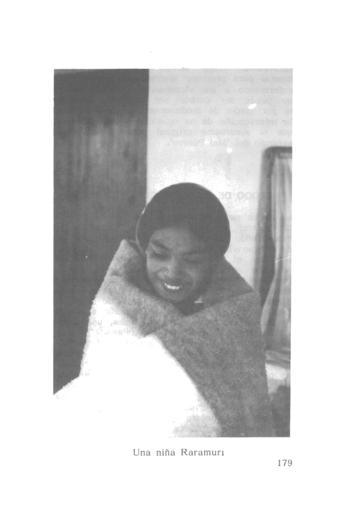
طفلة رارامورية.
طرائق التشخيص والعلاج
سوكوروامي، يستخدم قدرته العقلية لإحداث تغيرات عن بُعد وإمراض ضحاياه. ولا يعالج «الأذى المسلّط» أطباء الطب المعتاد ولا الأدوية. ويلزم تدخل أوغيروامي أقوى من السوكوروامي الذي أحدثه لإنقاذ المريض.
طريقة التشخيص والعلاج
يقول معظم الأوغيرواميس إن لديهم سيطرة إرادية على أرواحهم، فيغيرون موضعها الأصلي داخل أجسادهم أو يضعونها خارجها. وأثناء النوم يكتسب الأوغيروامي المتمرّس وعيًا ويتحكم بروحه، ويجعلها تسافر إلى أجساد مرضاه. وهناك يفحص المناطق المصابة ويعيد توازنها المفقود. ويقولون إن التشخيص والعلاج بالأحلام ممارسة شائعة ويومية.
وحين يحضر المريض إلى عيادته الأصلية، يستخدم الأوغيروامي تقنية تشخيص أخرى هي جسّ النبض. فيتحسس نبض المريض في مناطق مختلفة: الرسغين وقمة الرأس وفوق القلب مباشرة. ولأن الروح، في تصوره، تتواصل مباشرة مع الدم، يتيح له هذا الإجراء معرفة
طفلة رارامورية — صورة أخرى
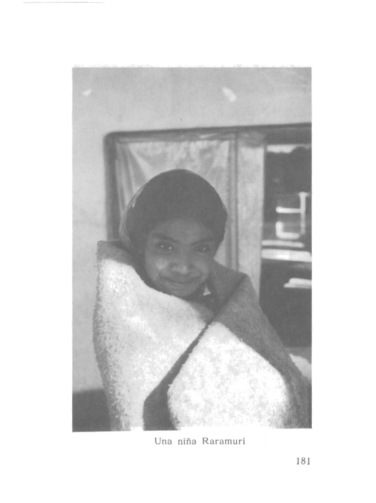
طفلة رارامورية.
عالمة نفس أصلية رارامورية
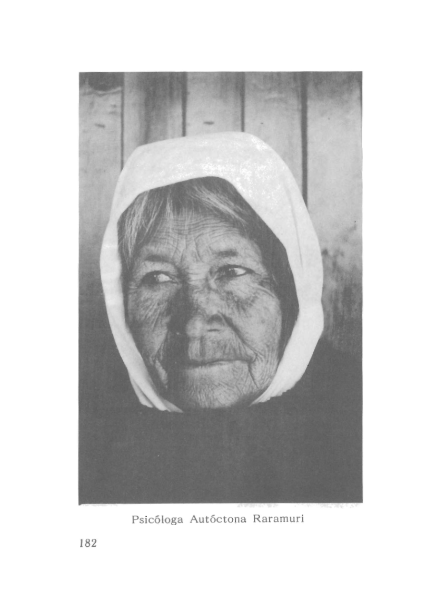
عالمة نفس أصلية رارامورية.
استعادة الروح وتقنية الامتصاص
إن كانت روح المريض داخل جسده أم لا. فإذا شخّص حال المريض بأنه «غير مكتمل»، استخدم طرائق شتّى ينادي بها روحه لتعود إلى موضعها في الجسد.
ومن أكثر أسباب المرض شيوعًا «الفزع»، ويُعرّف بأنه تغير مفاجئ في الانتباه يسببه منبّه شديد وغير متوقع. ويستخدم الأوغيروامي الصلاة والتضرع إلى الله لإعادة روح المريض التي أبعدها الفزع، ويستعين أحيانًا بشرب منقوع أعشاب طبية مخصصة للعلاج. وهذا التناول والصلاة والرحلات الحلمية هي تقنيات العلاج الرئيسية.
وطوّر أوغيرواميس كابوراتشي تقنية خاصة يستخدمونها «لامتصاص» المرض، سنتناولها الآن.
تقنية الامتصاص
الأدوات اللازمة لهذه التقنية قصبة خشبية صغيرة وجسم الأوغيروامي نفسه. يبدأ بتحديد المنطقة الجسدية المصابة، ثم يفركها بمشروبه الطقسي «تيسغوينو». ويضع راحة يده اليسرى عليها، جاذبًا المرض
الامتصاص والتلقين
إليها. ثم يضع القصبة في فمه ويقربها من جلد المريض العاري، ويستنشق بقوة. وإذا نجح العمل العلاجي، ظهرت في فمه حصاة صغيرة أو دودة أو شيء آخر، يجب دفنه أو حرقه لمنع ملامسة شخص آخر له. ويؤكد أوغيرواميس كابوراتشي أن هذا الامتصاص يسبب لهم متاعب تستمر حتى ثلاثة أيام، وعليهم علاجها بشرب التيسغوينو.
كيف يصبح المرء أوغيروامي
يؤكد معظمهم أنهم تلقوا مواهبهم عبر قريب أو بالوراثة. وفي حالة واحدة، اكتشف المجتمع قدرة أحد أفراده العلاجية وشجعه على ممارستها. وليس لدخول سلك الأوغيروامي طقسٌ بعينه. يتعلم من يريد أن يصير واحدًا منهم بملازمة معالجٍ متمرّس، ويختبره معلّمه وأهل مجتمعه. وتتوقف درجة الاعتراف الذي يناله على نجاحه في العلاج.
ويقدّر الراراموري عمومًا معالجيهم ويدعمونهم.
دون ماوريسيو
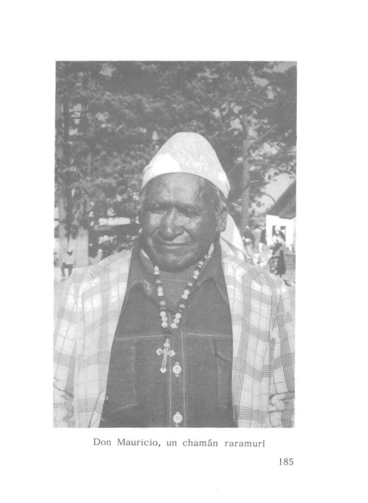
دون ماوريسيو، شامان راراموري.
شامان راراموري
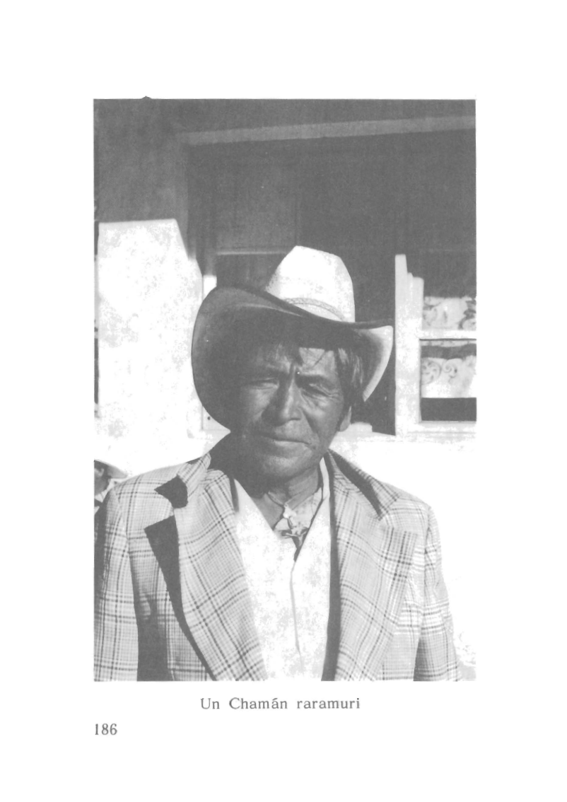
شامان راراموري.
التخصص والخلاصات
تخصص الأوغيروامي
لا يمارس جميع الأوغيرواميس بالطريقة نفسها. فبعضهم خبير في «الفزع»، وآخرون في التقنية الحلمية، وآخرون في الامتصاص. وتتخصص النساء في الأطفال والولادة.
وهناك تراتب بين الأوغيرواميس، يتصرف فيه الأكثر خبرة وتمرسًا كشامانات حقيقيين ومعلّمين للمبتدئين. وبينهم علماء نفس أصليون حقيقيون يولون ما يصاحب الأمراض من مظاهر نفسية أهميةً أكبر، بخلاف من يتخصصون أساسًا في إعداد الأدوية العشبية واستخدامها.
خلاصات
فكر الأوغيرواميس عمومًا ثنائي وسحري؛ ولغتهم تُظهر إيمانهم بثنائية الجسم والروح، وبوجود تفاعلات مباشرة بين العقول المختلفة.
وتتّبع طرائقهم إجراءاتٍ موحَّدة إلى حدّ كبير، وتقبلها مجتمعات بأكملها بوصفها حقيقية وفعالة.
الفصل الثامن
دون رودولفو من خالابا
صفحة بيضاء
توضيح تحريري: هذه الصفحة بيضاء في ملف المصدر.
دون رودولفو من خالابا
كما رأينا في فصول سابقة، تُشجّع الحركة الروحانية المكسيكية الوسيط على أن يغيب عن وعيه، وترى أن تلك الحال تتيح له الاتصال بكيانات أخرى. فإن ظلّ واعيًا، عُدّ ذلك عندها مدعاة إلى الشك في صدقه.
دون رودولفو من خالابا عالم نفس أصلي حقيقي. ورغم أن منشأه وتدريبه كانا روحانيين تقليديين، قرر الانفصال عن الحركة ليؤسس مدرسة خاصة ترى أن فقد الوعي ليس ضروريًا ولا مناسبًا للعمل في مستويات أخرى من الواقع. ولأنني أرى اتجاهه تطورًا انطلاقًا من الروحانية التقليدية، قررت دراسته، وخُصص هذا الفصل لمراجعة تعليمه.
دون رودولفو والواقع الروحي
دون رودولفو
وُلد في أواخاكا، ويقيم في بيروتي، ويرأس سلالة جديدة في مدينة خالابا، ويقسم أنشطته بين هذه الأماكن الثلاثة. أسمر ممتلئ البنية، في الستين إلى الخامسة والستين، ويبدو أقرب إلى فلاح أواخاكي لفحته الشمس منه إلى رئيس سلالة روحية.
وفي مقابلة معه، أخبرني أن تدريبه الأول كان في معبد روحاني تعلّم فيه الدخول في الغشية، وتعرّف إلى التنظيم المرتبط بالروحانية كله، الذي أسنده بطريقة ما وكان أساس تطوره اللاحق.
وهو متزوج وله أبناء بالغون مستقلون، وقد كرّس نفسه لتطوير مراكز روحية في أواخاكا وفيراكروز، ودفع النمو النفسي للمشاركين في تعاليمه داخل المعابد التي افتتحها.
مفهوم دون رودولفو للواقع الروحي
يرى أن ما يحدث حقًا حين يدخل الإنسان الغشية هو أنه يتعلم التفاعل مع مستوى عميق ومتطور جدًا من
دون رودولفو في معبده
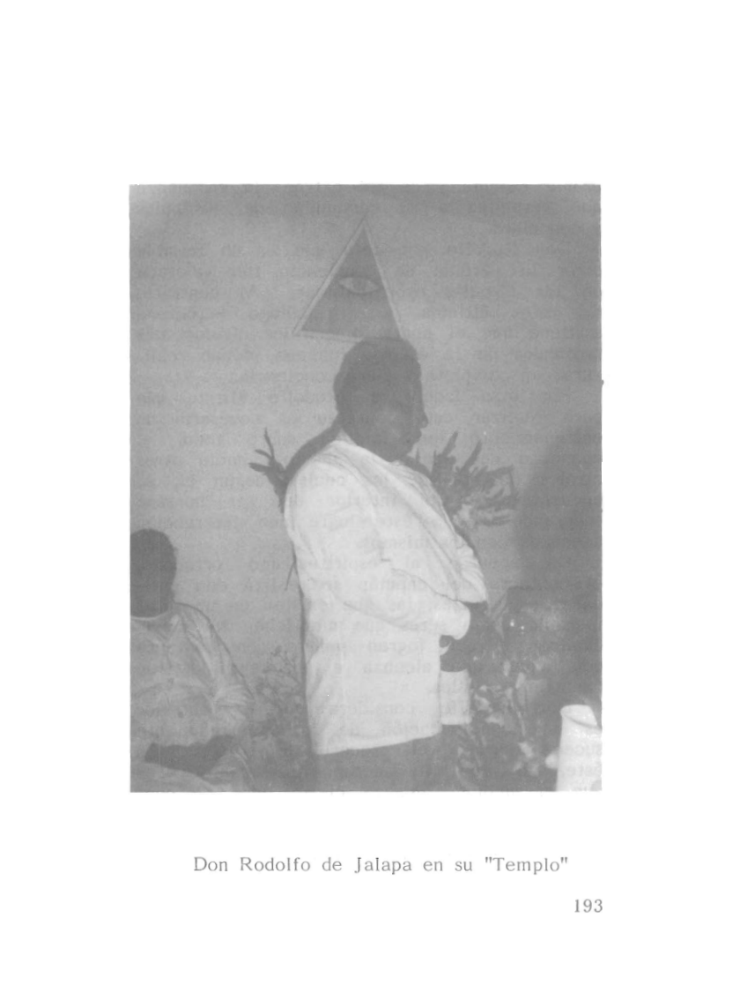
دون رودولفو من خالابا في «معبده».
الوعي والجوهر
كيانه. أي إن الوسيط البشري ينفذ في الحقيقة إلى جوهره، ويستخرج منه التعليم الذي يعبّر عنه لجماعة تلاميذه ومعارفه.
ويرى دون رودولفو أن فقد الوعي، الذي تقدّره الأوساط الروحانية بشدة، خطأ فادح. وبخلافها، يؤكد أن الاتصال بأعمق مستويات الجوهر الإنساني يجب أن يتم بوعي كامل وواضح.
ويؤكد أيضًا أن هذا الاتصال يحتاج تدريبًا ينطوي خصوصًا على التخلي عن الأنا والانفتاح على مستويات أخرى من الواقع، موجودة، بحسبه، داخل الإنسان، تنتظر تحقيق تفاعل ملائم معها.
وفي الروحانية التقليدية، يكون اتصال الشامان بكيانات روحية موجودة في مملكة غير مرئية، تحتفظ بتفردها وتستطيع الاتصال بمن ينفتح ويسمح لها بالنفاذ إليه.
أما دون رودولفو فيرى ذلك تبسيطًا لما يحدث حقًا أثناء الغشية. فما يحدث هو بلوغ الوسيط مستوى معينًا من الوعي، يعمل كمفتاح خاص يتيح للمعلومات المرتبطة بهذا المستوى الظهور في الإنسان.
جلسة علاجية
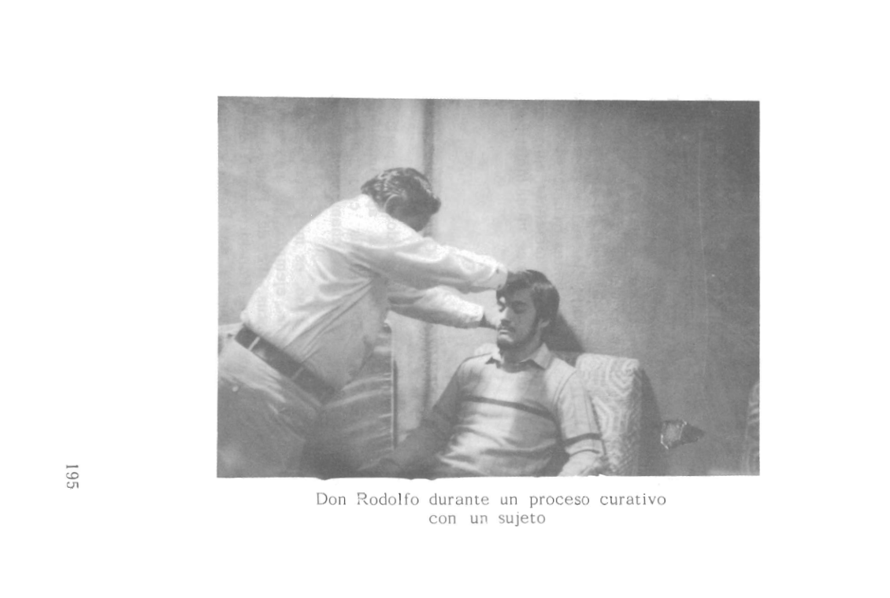
دون رودولفو أثناء عملية علاج مع أحد الأشخاص.
تعليم دون رودولفو والمقارنة بالسلالات الأخرى
تعليم دون رودولفو
لكونه قادرًا على الاتصال بـ«الكينونة» بتقنية طورها في السنوات الأخيرة، يعدّ من أهم أعماله تدريب الآخرين لتحقيق الاتصال نفسه، باستخدام تقنيات موثوقة وقابلة للتكرار. يجتمع أسبوعيًا بتلاميذه ويعلمهم تقنيات التطور التي تتضمن المحافظة على الوعي أثناء غشية الوساطة الروحية.
المقارنة بسلالات أخرى
بوصف مقاربة دون رودولفو تطورًا جديدًا من الروحانية التقليدية، يمكن مقارنتها بمقاربات سلالات شامانية معاصرة.
ويسهل تبيّن ذلك بتحليل مقاربات دون خوان ماتوس ودون لوسيو من موريلوس ودون بانشيتو من يوكاتان، ومقارنتها بمقاربة دون رودولفو. ولهذه المقارنة سأقدم عرضًا موجزًا لهذه السلالات ولسلالته، مبرزًا أوجه التشابه.
يرى دون خوان ماتوس أن الإنسان قادر على إقامة
مستويات الواقع
تفاعل مع مستويات بديلة من الواقع. ويظهر مستوى واقع حين يحدث تفاعل متوافق بين نظامين من الانبعاثات. ولأنني وصفت هذا التصور في مقالات سابقة، سأكتفي هنا بالقول إن المحاذاة بين نطاقين من الانبعاثات، بحسب دون خوان، هي ما يظهر بوصفه واقعًا، وإن تغيير منظّم المحاذاة بين النطاقات، أي نقطة التجميع، يُظهر وقائع بديلة.
والتشابه واضح بين هذا التصور وتصور دون رودولفو. فبحسب الأخير، يحدث التفاعل مع مستويات واقع بديلة حين يستطيع الإنسان تغيير مستواه الاهتزازي الواعي والاتصال بمستوى مماثل موجود في الكون، يحتوي معلومات تصبح متاحة تحديدًا حين يغير الإنسان مستوى وعيه.
ويقول دون لوسيو من موريلوس بفكرة مشابهة، وإن سمّاها على نحو مختلف. فهناك، بحسبه، قطعان من عمّال الطقس، يمكن تمييز كل منها بلون خاص. ويرتبط كل لون بحالة كينونة مميزة ومستوى وعي معين.
وحين يُختار الإنسان، يتصل بأحد القطعان ذات اللون المحدد، فيجعل هذا الاتصال وعيه يرشح بالمعرفة المرتبطة بذلك القطيع.
ومن الواضح أن هذا التصور يشابه
نطاقات معلومات محددة غير محلية
تصور دون خوان وما يدافع عنه دون رودولفو، وإن استخدم كل رئيس سلالة مصطلحات مختلفة لشرحه.
وأخيرًا، يؤكد دون بانشيتو من يوكاتان، أحد أقدم شامانات المكسيك ووريث حكمة المايا، أن هذه المعرفة تظهر في الإنسان حين يستطيع الاتصال بالله. ويرى أن التطور الحقيقي يحدث تحديدًا في اتجاه الاتصال بالألوهية، وأن المعرفة كلها تتدفق عبر الإنسان حين يتحقق الاتصال، وكأنها ميراثه الخاص.
نطاقات معلومات محددة غير محلية
تدل المقارنات السابقة على أن من المعارف المشتركة للشامانية المكسيكية الحقيقية الاعتقاد بوجود مخازن للمعلومات والوعي في الكون، يمكن التفاعل معها، فتتجلى مستوياتها في الإنسان. وبينما يسميها دون لوسيو قطعانًا، ودون خوان نطاقات انبعاثات، ودون بانشيتو الله، ودون
دون رودولفو أثناء العلاج
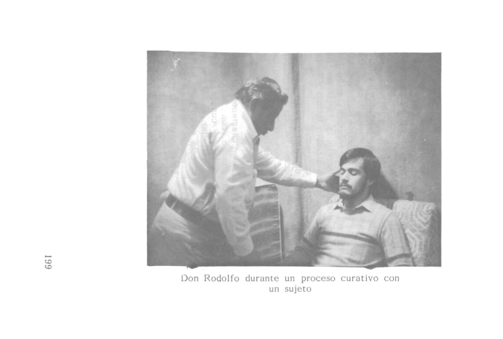
دون رودولفو أثناء عملية علاج مع أحد الأشخاص.
المعلومات والوعي
رودولفو اهتزازات روحية، فإنهم جميعًا يشيرون، فيما يبدو، إلى المعرفة نفسها والواقع نفسه.
ويمكن أن نسمي مخازن الطاقة الواعية هذه «نطاقات معلومات محددة غير محلية»، لأنها أولًا محددة، وثانيًا غير متموضعة بصورة ملموسة، وثالثًا يبدو أن الوعي نفسه هو ما تتكوّن منه في جوهرها.
ويستطيع إنسان ذو تطور كافٍ وتدريب مناسب التقاط هذه النطاقات وتحقيق تفاعل متوافق معها.
وبحسب الشامانات المكسيكيين، يحدث التفاعل المتوافق مع أحد النطاقات حين يكون التعلم قد نمّى فيه مستوى وعي كافيًا لالتقاطه والتفاعل معه بصورة ملائمة. ويبدو أن مستويات الوعي المناسبة يجب أن تستوفي نوعًا من قانون التشابه والتماثل، بحيث لا يمكن بلوغ نطاق محدد إلا حين يهتز الوعي الفردي، إن صح التعبير، بالتردد نفسه للنطاق المطلوب.
دون رودولفو ومذبحه
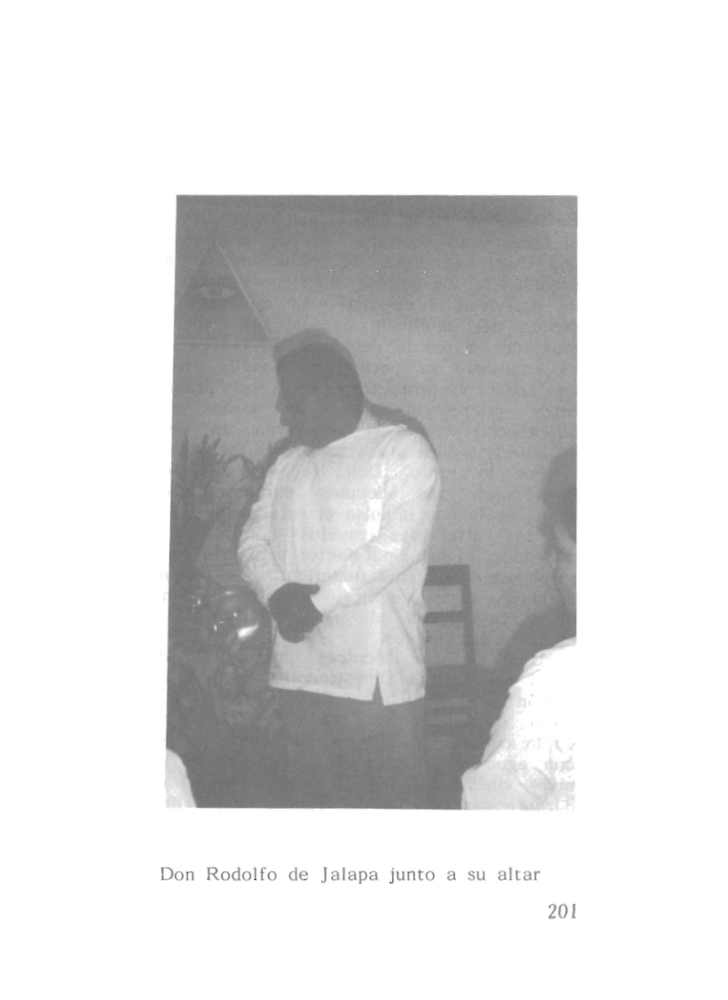
دون رودولفو من خالابا بجوار مذبحه.
مفهوم المرض عند دون رودولفو
مفهوم المرض عند دون رودولفو
بحسب هذا العالم النفسي الأصلي، الجسم البشري مخزن لكمية هائلة من جماعات الأحياء المجهرية، تبقى خاملة أو تنشط نشاطًا مؤذيًا تبعًا للتوازن الذي يحافظ عليه الجسم أو يفقده لأسباب مختلفة. والتوازن عنده مرادف للصحة وحماية من هجوم هذه الأحياء، المتربصة دائمًا وكأنها تنتظر غفلة الدفاعات لمهاجمة موطنها العضوي.
ولذلك يرى أن أنسب تقنية لحفظ الصحة هي ما يدعم التوازن في المستويات الجسدية المختلفة. ويرى دون رودولفو أن التوازن الروحي هو العامل الأهم والأقوى في حفظ توازن الجسد، وأن الاتصال بـ«الكينونة» يضمن عندئذٍ الصحة على المستويات جميعًا.
ومن تقنياته لتعزيز الصحة شحن السوائل بالطاقة. حين يتصل بـ«الكينونة» يضع قرب جسده أوعية ماء يقول إنها تكتسب المستوى الاهتزازي نفسه الذي ينشّطه أثناء الغشية. وتبقى هذه السوائل، بحسبه، نقية وخالية من الملوثات سنوات، بلا غلي أو
تفريغ جلسة اتصال بالجوهر
إخضاعها لأيّ إجراء يطهّرها من البكتيريا. بل يرى أن تناولها يحفز المحافظة على الصحة العضوية عبر تنشيط أجهزة الجسم.
تفريغ جلسة يحقق فيها دون رودولفو تفاعلًا مع الجوهر
كما قلنا، من أكثر الممارسات التي يقدّرها هذا العالم النفسي الأصلي الاتصال بـ«الكينونة» أو الجوهر، بعد استخدام تقنيات تحفّز هذا الاتصال.
أُتيح للمؤلف تسجيل خطاب دون رودولفو في جلسة بخالابا، ويرد تفريغها فيما يلي.
في أول الجلسة نطق دون رودولفو بسلسلة صلوات، ثم جلس على كرسي وأغمض عينيه بينما واصل تلاميذه ترديد عبارات. وبعد دقائق تنفس بعمق، وانتفض عدة مرات، وبدأ يتحدث.
وحضرت الجلسة، إلى جانبه، ثلاث نساء دخلن أيضًا حالات بديلة من الوعي.
دون رودولفو في «معبده»
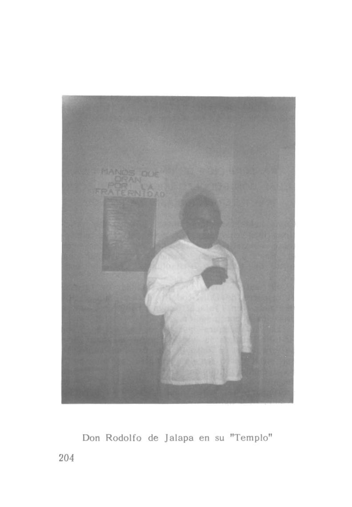
دون رودولفو من خالابا في «معبده».
درس دون رودولفو في خالابا
رأت النساء صورًا عدّها دون رودولفو شواهد وتوافقات مع ما كان يحدث له. وننقل مداخلاتهن أيضًا هنا.
درس دون رودولفو في خالابا
«... الدم الثمين جدًا لربنا يسوع المسيح... افتحوا أرواحكم، وأغلقوا أعينكم... ليكن نور المحبة وسلام روحي السلام.
كثير ما تنتظرونه لتجدوا السلام والسعادة؛ تطرقون بابًا بعد باب لتجدوا نور الروح في حديقة المحبة وحديقة الجمال. لكنكم تريدون العثور على تلك الحديقة بعيونكم الجسدية، تريدون العثور على حديقة الجمال، تريدون العثور عليها بعيونكم الجسدية، تريدون العثور عليها لتتأملوها وتستمتعوا بها. وتبحثون أيضًا عن همس الأصوات البلورية التي تدخل عبر عيونكم لتضبط الأوتار الدقيقة لقلوبكم النائمة، والتي تملأ وتملأ الكون أنانية. تظنون أنكم تجدون النور في الفهم لتتحدثوا عن جمال الطبيعة، وتعرفوا أعماق البحار، وتجدوا الحكمة الأبدية على قمة الجبل. لكن ماذا تجدون في الطريق كله؟ تجارب فقط؛ وأكثر من التجارب التي تدفعنا إلى الأمام، ينبغي العثور على السعادة
توضيح تحريري: هذا تفريغ خطاب شفهي؛ حُفظ تكراره وتحول ضمائره وصيغه غير المكتملة كما وردت، دون نسبته إلى صوت المؤلف.
الدرس — الحقيقة والمحبة
الأبدية، ينبغي العثور على السعادة الداخلية الموجودة في كل واحد منكم. تمضون تتعلمون أشياء لتجدوا الماء البلوري الذي يروي العطش، ولا تجدون إلا أشياء، ممتلئين بالوحل والمياه المضطربة والماء القذر. تتذوقون تلك المياه لحظة، يمكنكم إيجاد الماء الحقيقي. وتتحققون من جديد أنكم فعلتم شيئًا خاطئًا، لأنكم لم تفعلوا ما يناسب التحقق...
لكن حقًا، حقًا، أرواح ذلك التيار، ذلك الماء البلوري الذي تريدون إيجاده في البعيد، ليس وراء شفاهنا ولا وراء قلوبنا. فكما تنقبون الأرض عن الكنوز العظيمة، تستطيعون التنقيب في قلوبكم عن كنز الحكمة الأبدية. مضى زمن طويل، ولو جاء الإنسان وعاش السنوات والأشهر زمنيًا، لما بلغتَ الحقيقة المخفية.
الحقيقة مخفية في طيات عقلنا، مخفية في الطيات. هناك الحقيقة عبر مشاعرنا ونبل حواسنا، وعبر المحبة التي يشاركها قلبه، لأنكم تنبذون حين تولد الأنانية. قوة المحبة قوة يحملها كل منكم، قوة يحبسها العذاب والألم وتحجزها الأنانية. ليست المحبة سلعة تُباع، بل شعور الروح الرفيعة، وشعور كل واحد منكم؛ ولذلك الشعور الذي لا يشبع
الدرس — الرمز الداخلي
في كل طريق طويل بحثًا عن المحبة والفهم.
تريدون إيجاد المحبة... تريدون إيجاد السعادة المنعكسة في مياه الليل البلورية الشفافة، حين تخرج لتتأمل الليل...
فتشوا في أعماق قلوبنا عما عندكم من نبل، وعما كنتم عليه من جمال في كل لحظة عشتموها كاملة في العالم، كاملة في عالم السلام الروحي والسلام الشامل والسلام الكوني والسلام الساكن في قلوبنا... حين تستطيعون المحبة بلا مصلحة، وحين تستطيعون الانتظار ومنح كل الجمال الكامل الذي فيكم. تظنون أنكم تجدون في الأديان المختلفة خلاص النفس بوصفه الصدق. وتظنون أنكم تجدون المعرفة عبر رمزية ذلك كله...
لكنكم لم تفهموا أن الرمز الحقيقي هو الموجود داخل كل منكم، وأن لديكم مفتاحًا رئيسيًا للفتح وإيجاد السعادة الأبدية.
أنا جاهل ولا أفهم ما تريدون قوله لي... وفي التأمل الداخلي سأجد الحقيقة الأبدية والسعادة. لأنكم، دون رغبة في معرفة ذلك بأنفسكم، تحملون مذبحًا في قلوبكم. وكما توحد الإنسان في العلم للتمتع ببركته، تستطيعون توحيد الوعي للتمتع بمنافع الروح. خذوا من التعليم الروحي الذي لدى كل منكم ما تحتاجون
الدرس — المعرفة والطاقة
إليه، ودبّروه كما ينبغي، ولا تبددوا قواكم في كيانات، في كيانات تبددها. يجب أن تجدوا، ولذلك البحث حقيقة، وأكرر: الحقيقة في كل منكم. ولهذا لكم إرادتكم الحرة في رحلة وجودنا الطويلة على الأرض. تعلمتم فيها كثيرًا ووجدتم كثيرًا، لكنكم نسيتم كثيرًا أيضًا، لأنكم تعيشون في كل مرة الحياة الحاضرة، لا حياة الارتقاء والتطور المهمة في هذا الزمن للمضي قدمًا... ولذلك أقول لكم حقًا، يا أحبائي الصغار، ابحثوا في كتب الوعي عن حقيقة الحكمة والمعرفة الحقيقية. واعلموا أنكم لستم بعيدين عن الكون، كما أن الكون ليس بعيدًا عنكم. لكل منكم مصدر طاقة هو الطاقة، ولكل منكم مشاركة في الخلق الأبدي الذي هو السلام الأعلى في العالم، والطاقة الإلهية والطاقة الشاملة وطاقة الكائنات. وسيكون ذلك دائمًا عبر أنفسنا، لأنني أقول لكم حقًا، يا أحبائي الصغار، قصيرة اللحظة الباقية لعودة المختارين إلى التكامل، لعودة الأرواح. ولذلك سأصغي فقط للنداء كل لحظة، وحتى لو كان هكذا وحده، ستأتي اللحظة التي... وستكون اللحظة.
ولهذا لا تدعوا التعصب يقودكم، ولا الإيحاءات المتخيلة.
أحبوا الأرواح لكي تُحبّوا، وأخاكم، وأحبوا جسدكم
الدرس — الروح والعقل والجسم
كي تُحبّوا جميعًا.
احمل دائمًا في الوعي الشعلة الداخلية لتُعانوا وسط الليالي والظلام. كثير ما ستتلقونه وكثير ما ستحملونه، لكن عليكم دائمًا إيجاد الحقيقة دون خداع أو نفاق من أنفسنا. لم يعد زمن الكتبة والفريسيين، ولا زمن قيافا، ولا زمن «الإيغميين»، ولا الحيثيين والمايا. إنها أزمنة جديدة من النور والمحبة والسلام، فقد تطورتم كثيرًا منذ ذلك الحين، لكنكم بقيتم متعلقين بالماضي، والماضي لم يسمح قط ببلوغ القمة الحقيقية للمعرفة والحكمة.
فلو تركتم حقًا القيود والتعصب والنفاق والكبرياء، كإله على وجه الأرض، كإله على الكون كله، لكنتم جزءًا من الكون.
ولذلك أطلب منكم، أيها الأطفال القديسون، أن تهيئوا قلوبكم وأرواحكم، وتوحدوا ثلاثية الروح والعقل والجسم لتعيشوا في انسجام كامل. اعثروا على معنى الوجود بمحبة أخيكم ومثيلكم وفهمه. وإن كان أعمى فخذوا بيده، لكن قبل إرشاد الأعمى، عليكم أن تكفوا أنتم عن العمى، كي لا يسقط العميان. خذوا واحملوا رسالة النور والمحبة والسلام التي جئت أعلمكم إياها اليوم. كلمتي قصيرة، لكن تعليمي عظيم إن عرفتم
توضيح تحريري: وردت كلمة (igmeos) بين قوسين في الأصل؛ هويتها المقصودة غير واضحة، لذلك نُقلت صوتيًا دون تخمين.
الدرس — البركة ورؤية المرأة الأولى
التأمل فيه وتطبيقه.
مبارك من يبحث عن الحقيقة الداخلية، لأنه سيجد في أعماق الحقيقة، سيجد المحبة والحياة.
أيتها المياه المركزة في الأوعية والبلور، أقول لكم أن تصيروا مياه نور ومحبة وسلام وتوحيد... في حكم السلام الروحي.
بالاسم الذي أنا فيه الابن، وبنور الروح القدس ونعمته، الشيء الذي يجعلني... محبة وحماية وسلامًا لقلوبكم، لكم.
وهكذا أقول لكم، يا أطفال النعمة المباركين، إن النور والمحبة والسلام...
نور إيليا ومحبة إيليا، رسول إلهنا، وسلام روحي، ليبقَ معكم إلى الأبد».
المرأة الأولى
«... كألماسة تكبر، تلك الألماسة التي تكبر وتكبر وتكبر، غطت كل شيء بالنور... وهناك استطعت رؤية جبل. كان للجبل شيء كهوائي. كان الهوائي يلمع... ثم غطته سحابة شديدة البياض... واختفى من النظر. وهناك حين بدأ... كلمته المباركة، استطعت رؤية نهر، كما قال، تحت الأرض، وكثير من إخوتي يجفون عطشًا، يبحثون عنه ولا يجدونه؛ وكما قبل أشهر انفتح طريق أبيض جدًا، قادهم إلى نبع صافٍ كالبلور. وهناك استطعت رؤية ما يشبه مدينة، كما حين نكون في خصام، أحدنا
رؤيتا المرأتين الأولى والثانية
مع الآخر، نتشاجر هكذا. وهناك استطعت رؤية حديقة فيها فراشات كثيرة كأنها تمتص العسل من أزهار تختلف عن أزهارنا، وكانت الأم مريم هناك بابتسامة على شفتيها... وهناك استطعت أن أرى... رأيت جيدًا أنها أعطتهم كتابًا كالحكمة، ونثر ذلك الكتاب... أمام القاعدة. هذا ما استطعت رؤيته بمشيئة أبي السماوي».
المرأة الثانية
«سأعرض على إخوتي جميعًا ما استطعت رؤيته. تل أخضر عظيم، ودرب... كانت تشكل طريقًا كبيرًا أبيض... وكان هناك صفان كبيران من الناس للدخول، ويُفهم أنه مدخل مدينة. لكن إلى الجانب، حول تلك النخيل، كان شيء كالإعصار؛ تُرى الأتربة والهواء الشديد حولها. والغريب أن المنتظرين في الصف لدخول الطريق أمامهم لم يركضوا، ولا شعرة طارت؛ لم يكن منفذ إلى ذلك الصف، لم يدخل الهواء. ثم رأيت كيف... لأنني استطعت رؤية كيف انفتح، بعد اجتياز السلالم والطريق الكبير، باب عظيم، فيه سلّم ذهبي كبير، وفي نهايته لؤلؤة تلمع بشدة، يصعب النظر إليها جدًا، وكان علينا خفض رؤوسنا لأنها تُعمي الأبصار. وبعد أن رأيت إخوتي يمرون... كان
رؤيتا المرأتين الثانية والثالثة
إخوتي كأنهم... ماذا أقول لكم؟ رأيتهم كالمرضى، كالحزانى. لكن في تلك اللحظة كان الأب يسوع هناك بمشعل عظيم ونور كبير في يده، أغرقهم به بشدة، فعادوا أناسًا طبيعيين. أعطاهم في أيديهم... رأيت كأنها لآلئ، ورأيت كيف نظف فهمهم ودماغهم وقلبهم، وأضاء. وأشعر الآن حقًا بفرح عظيم وبالمعرفة العظيمة... كانت مشيئة أبي المقدسة أن يسمح بذلك...»
المرأة الثالثة
«بدأت كلمة معلّمي تتدفق، شلال ينفتح... حتى يصل إلينا، وكان الماء يسقط كقوس قزح، بألوان كثيرة علينا جميعًا. وخلف الشلال كانت مدينة كالبلور، مدينة ذهبية شفافة، بيضاء ووردية أحيانًا وذهبية أحيانًا. واستمرت الكلمة وتقدمت حكمته، وفجأة رأيت بابًا قريبًا جدًا منا، بابًا ذهبيًا إلى المعرفة وإلى الأعظم، وفجأة كان بعيدًا ثم قريبًا ثم بعيدًا، كأنه قريب لكننا نريده في الوقت نفسه بعيدًا عن أنفسنا. وبعد ذلك، حين مررنا يا أخي عند قدمي المعلّم، رأيت الباب يقترب ويقترب بنور يُعمي، يُعمي ويُخفي كل شيء. هذا كل ما رأيت...»
كلمة دون رودولفو الختامية
دون رودولفو
«لكل منا، في الأماكن المختلفة التي يشغلها في الحياة، أعمال كثيرة يفعلها: يتضرع في صلاته وفي الشارع وفي كل موضع ممكن.
مَن منّا لا يتوق إلى مزيد من التواضع وإلى السلام؟ مَن منّا لا يتمنّى أن يكثر الزرع ويَسهُل العيش؟ كلنا نرغب في ذلك، كلنا نتوق إليه... لكن لكي يتحقق ذلك كله... نحتاج إلى خلق انسجام عظيم من الإيمان والمحبة والسلام. وما لم نشعر بالمحبة لكل ما حولنا... سيزداد وجودنا استحالة كل يوم. علينا أن نعذر بعضنا وأن نراعي غيرنا، فلكلٍّ منّا القدرة نفسها على تلقّي الاستنارة...
يا جميع من يقتربون من هذا، حاولوا أن تكونوا كل يوم أكثر تفهمًا ومحبة لأنفسكم، كي تستطيعوا منح تلك المحبة لأمثالكم.
ليس المقصود مجرد الصلاة، بل أن نستطيع بالقدوة صنع حياة أفضل؛ الصلاة تواصل مع أنفسنا في سلام. فلنجعل هذا التواصل أفضل دائمًا، وليُحترم كل فعل من أفعالنا.
ولذلك، كلما طلبتم القرب من الآب، حاولوا أولًا القرب من أنفسكم. وبقدر قربكم من أنفسكم، تكونون قريبين من الآب».
صفحة بيضاء
توضيح تحريري: هذه الصفحة بيضاء في النسخة الأصلية.
الفصل التاسع
بيبيتو من سييرا دي بويبلا
صفحة بيضاء
توضيح تحريري: هذه الصفحة بيضاء في النسخة الأصلية.
بيبيتو من سييرا دي بويبلا
في قرية صغيرة تقع في أعلى منطقة من الجزء الشمالي من سييرا دي بويبلا، يعيش أحد أصغر المعالجين سنًا في المكسيك. اسمه بيبيتو، وهو صبي يبلغ الثانية عشرة. يعرض هذا الفصل دراسة عن هذا الطفل العجيب، ثمرة سلسلة من الملاحظات التي أجريتها أنا وزميلة لي على قدراته العلاجية.
تقع القرية الخلابة التي يعيش فيها بيبيتو في جبال بويبلا، على مسافة نحو ثلاث ساعات عبر طريق ترابي من تيتيلا دي أوكامبو، ويبلغ سكانها قرابة ألف نسمة. فيها ساحة صغيرة تحيط بها كنيسة ومبنى ومقر الرئاسة البلدية. ويوجد مأوى للسكان الأصليين يقيم فيه خمسون طفلًا من المجتمعات المجاورة، ومدرسة ابتدائية ومدرسة ثانوية تعتمد التعليم التلفزيوني ومركز طبي تابع للمعهد المكسيكي للضمان الاجتماعي. ويشتغل معظم أهل القرية بالزراعة،
أصل بيبيتو
مع وجود نول ينسج عليه طلاب المدرسة الثانوية أغطية ومعاطف من الصوف الخالص المأخوذ من أغنام القرية.
استطعنا أن نعثر في هذه القرية على معالجَين، أبرزهما بيبيتو.
أصل بيبيتو
وُلد بيبيتو في القرية لأبوين فلاحين توفيا وتركا الطفل في رعاية أقاربه من الأعمام أو الأخوال.
في العاشرة أدرك بيبيتو قدراته، لأنه استطاع أن يشفي عمه أو خاله من مشكلة في ظهره. ومنذ تلك اللحظة انصرف إلى استقبال المرضى الذين يأتون طلبًا لمساعدته وعلاجه بأعداد متزايدة ومن مناطق تزداد بُعدًا. يرتاد بيبيتو المدرسة الابتدائية، ويتصرف كسائر أطفال عمره، فيلعب مع رفاقه في وسط القرية. ويساعد عمه أو خاله أيضًا في رعاية الحيوانات وأعمال الحقل. لكن مظهره مميز جدًا، إذ يدل تعبير وجهه دائمًا على عمق وحساسية غير مألوفين. عيناه كبيرتان، ويوحي حضوره بإنسان بالغ نبيل في جسد طفل.
تيبيسينتلا، بويبلا
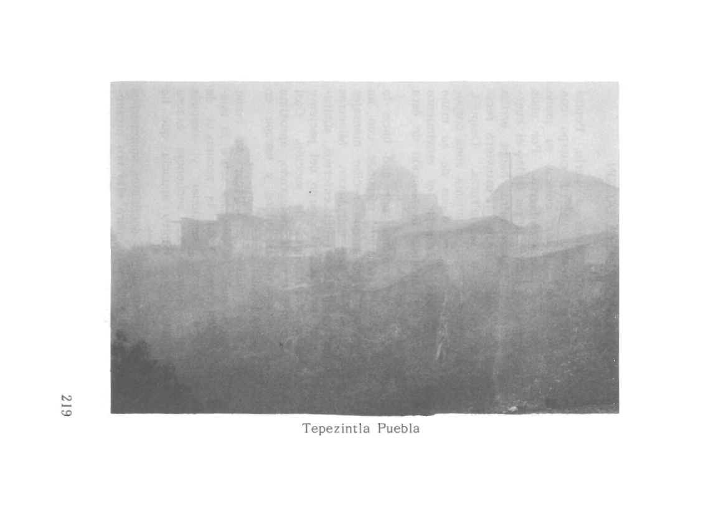
تيبيسينتلا، بويبلا.
تقنيات العلاج
تقنيات العلاج
عندما يأتيه مريض، يدلك بيبيتو الجزء المصاب من جسده بمشروب كحولي مقطر، ثم يضع يده اليسرى على المنطقة المريضة. ويظل لبضع دقائق، وهو يلامس جسد المريض بأصابعه، ينظر إلى أعلى ويحرك رأسه كأنه يتلقى نداءً من الأعالي. ثم يبدل ذراعه ويلامس المنطقة نفسها بأصابع يده اليمنى، مكررًا حركة الرأس ومبقيًا إياه مائلًا إلى أعلى.
وعندما يُسأل لماذا يفعل ما يفعله، يجيب بيبيتو دائمًا: «لا أعرف!»، وإن كان يقر بأنه يتلقى رسائل وأن صوتًا يخبره بما عليه أن يفعل. وبينما يواصل لمس جسد المريض، يقرب فمه فجأة من جسده ويؤدي حركة مصّ. ويقرب فمه من ورقة تغلف كوز ذرة، مع إظهار الاشمئزاز في معظم الأحيان، ويبصق عليها حجرًا صغيرًا.
ثم يعيد وضع يده اليسرى، وبعدها اليمنى، على المنطقة نفسها، ويكرر التسلسل كله من جديد حتى يتمكن من مصّ حجر آخر وبصقه. ويتكرر التسلسل نفسه تمامًا إلى أن يعلن بيبيتو أنه انتهى.
قررنا، أنا وزميلتي، الخضوع لعلاج بيبيتو، فحضرنا الجلسات في أيام منفصلة ثم معًا. وكرر بيبيتو تمامًا
أحجار المصّ
الإجراء الموصوف سابقًا، وعالج لدينا عدوى في المعدة ومتاعب في الظهر وألمًا في الأذنين. وفي جميع الحالات جسّد بيبيتو الأحجار، فبصق تسعة منها في مناسبة واثني عشر في أخرى.
والإحساس عند الخضوع لتدخل بيبيتو هو أن المنطقة المريضة تبدو كأنها تنشط عندما يلمسها، ثم تتخلص من انزعاجها عندما يمصها.
شفاني بيبيتو من ألم في المعدة ومن ألم أذنيّ، ولم تتكرر الأعراض بعد تدخل الطفل.
أحجار المصّ
الأحجار التي يمصها بيبيتو ويجسّدها مختلفة الأبعاد والملامس والألوان. وهي لا تتجاوز عادة سنتيمترين، وتلمع بما يوحي بأن لها قوامًا معدنيًا. أشكالها غير منتظمة، وبعد إيداعها على الورقة تُلقى في النار حيث تُحرق. لا يسمح بيبيتو للمرضى بأخذ الأحجار معهم، لكنه يسمح لهم بلمسها وعدّها وتقليبها بأيديهم.
طُلب من بيبيتو في مناسبات عدة، وقبل عمليات المص، أن يفتح فمه للتأكد من أن الأحجار ليست مخبأة داخل تجويفه الفموي. ولم يكن ممكنًا في أي حالة
تيبيسينتلا، بويبلا
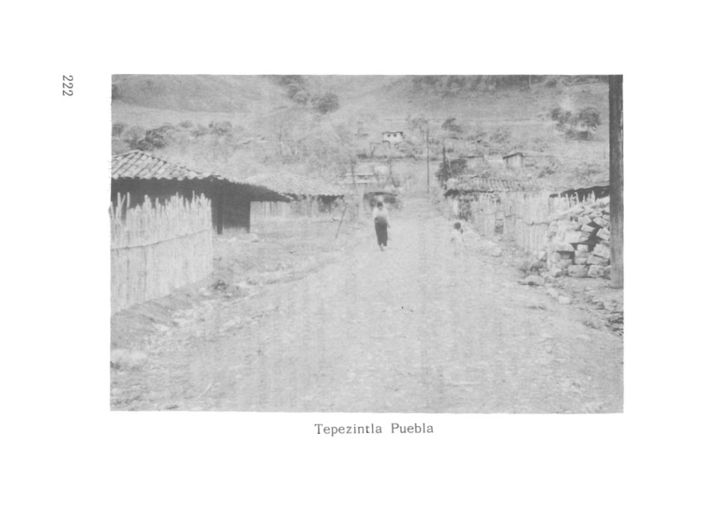
تيبيسينتلا، بويبلا.
التجسيد المادي
العثور عليها؛ وبالنظر إلى عددها يمكن التأكيد أن ظهورها لا يرجع إلى احتيال أو حيلة من أي نوع.
أحيانًا، عندما يجس منطقة من الجسم، يقول بيبيتو إنه لا يستطيع استخراج شيء منها، مشيرًا إلى أن المنطقة المعنية مصابة بمرض لا يدخل في اختصاصه، أو أن طبيعة العلة لا تقبل التخفيف بالوسائل التي يستخدمها. وربما يشبه الفرق بين المناطق التي يشفيها وتلك التي لا يستطيع استخراج أحجار منها، تصنيف بعض الشامانات للأمراض إلى جيدة وسيئة؛ فالمرض الجيد ما تسببه أسباب طبيعية، والسيئ ما يرجع إلى أسباب غير طبيعية كالسحر أو الأعمال السحرية.
التجسيد المادي
من الواضح أن أكثر ما يلفت النظر في تقنية بيبيتو العلاجية هو قدرته على إظهار أحجار المصّ من «العدم». ولما لم يكن ممكنًا تفسير ظهور الأحجار بوصفه نتيجة حيل أو إخفائها داخل الفم، يغدو من الضروري النظر في إمكان تفسير آخر لتجسيدها انطلاقًا من حركة المصّ التي يقوم بها.
وكانت دونيا باتشيتا تمثل حالة مماثلة من التجسيدات المنبثقة من الفضاء ومن مناطق المرض في أجساد المرضى. وبما
بيبيتو
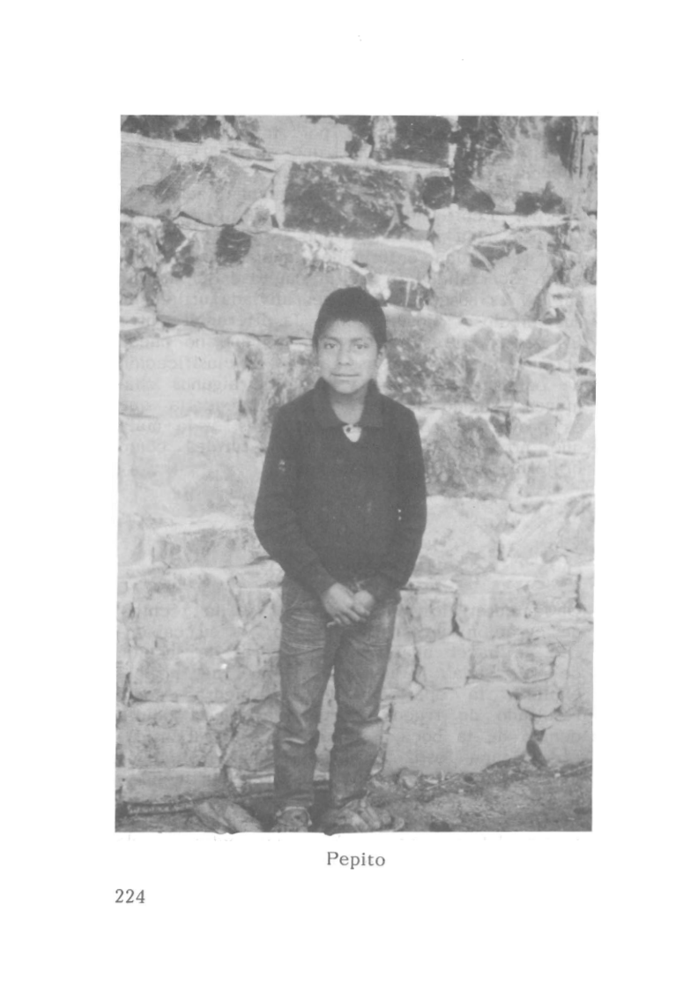
بيبيتو.
بيبيتو من سييرا دي بويبلا
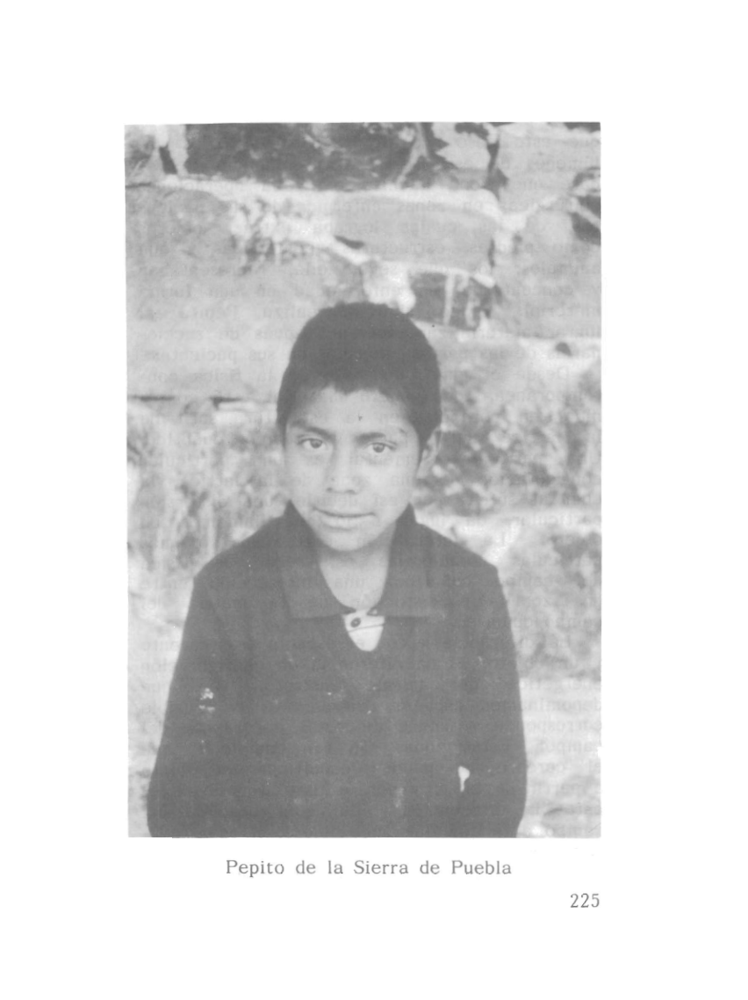
بيبيتو من سييرا دي بويبلا.
المادة وبنية الفضاء
أن هذه الحالة سبق وصفها في مجلدات أخرى من هذه السلسلة، فسأكتفي هنا بالتذكير بأن دونيا باتشيتا كانت تجري عمليات جراحية في المناطق المريضة من أجساد مرضاها، وتستطيع أن تستخرج منها أشياء كالأحجار والتكوينات الهندسية، بل وحتى الحيوانات، التي كانت، بحسب قولها، تمثل المرض وتكثفه في صورة مادية. ويفعل بيبيتو شيئًا مشابهًا عندما يتمكن من تجسيد أحجار بعد مصّها من الأجزاء المريضة لدى مرضاه.
من وجهة نظر الفيزياء المعاصرة، تحتوي البنية الدقيقة لشبكة الفضاء، أو الحقل الكمومي، كلَّ جسم ماديّ على سبيل الإمكان. والجسيم الأولي ترتيب مخصوص لمنطقة من الشبكة؛ إذ ينشأ ما نسميه جسمًا عندما تتعرض هذه المنطقة، إن صح التعبير، لتشوه مخصوص. والتفاعل بين جسيمين أوليين أو أكثر هو، بحسب فيزياء الحقل الكمومي، تفاعل بين منطقتي تشوه في مصفوفة الحقل الكمومي.
والفرق بين الفضاء الشفاف والجسم هو فرق في الترتيب الطاقي للركيزة نفسها. فما نسميه فضاءً شفافًا أو غير مرئي يقابل مناطق ذات اتساق تام في الحقل. وهذه المناطق بالغة التعقيد إلى حد أن الدماغ لا يستطيع أن يفك ترميز جسم انطلاقًا منها، ولذلك تكون غير مرئية للإدراك. أما ترتيب الحقل الذي نسميه جسمًا فيمكن للدماغ أن يفك ترميزه، ولهذا يظهر بوصفه صلبًا مرئيًا.
سييرا دي بويبلا
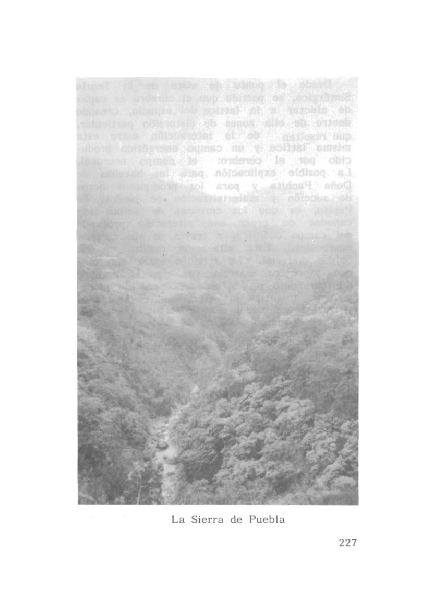
سييرا دي بويبلا.
النظرية السينترجية والتجسيد
من وجهة نظر النظرية السينترجية، يُفترض أن الدماغ قادر على التأثير في شبكة الفضاء، وخلق مناطق تشوه مخصوص داخلها، تنتج من التفاعل بين الشبكة نفسها وحقل طاقي يولده الدماغ: الحقل العصبي. والتفسير المحتمل لمآثر دونيا باتشيتا ولأفعال بيبيتو العجيبة في مصّ الأحجار وتجسيدها، هو أن دماغيهما قادران على إحداث تغير عميق في الحقل الكمومي بواسطة حقليهما العصبيين. وينتج عن هذا التغير جسم مادي. والعلاقة بين المرض والجسم المادي هي أن دماغ المعالج أو الشامان القادر على التجسيد يحاكي مرض المريض، ويحوّل النموذج الذهني للمرض إلى نمط طاقيّ محدّد في حقله العصبي؛ وعندما يتفاعل هذا الحقل مع الحقل الكمومي، يشوه الأخير، فينشأ عن ذلك، وفق هذا التفسير، جسم ماديّ يتركّز فيه المرض ويحتويه.
اعتادت دونيا باتشيتا وبيبيتو كلاهما التخلص من التجسيد المادي للمرض أو تدميره أو حرقه. وكانت دونيا باتشيتا تقول إن المرض المجسَّد والمستخرج من جسم المريض، إذا لم يُدمَّر أو يُحيَّد، عاد إلى الجسم وأمرضه مجددًا.
الاستنتاجات
أصبحت لدينا الآن حالتان مثبتتان لمعالجين
الاستنتاجات
وشامانات قادرين على تجسيد أشياء ماديًا. وتشير الحالة المعروضة في هذا الفصل إلى أن هذه القدرة يمكن تعلمها وإظهارها منذ الطفولة.
وتبين هذه القدرة الاستثنائية، والاستخدام العلاجي الذي توظَّف فيه، أن عالم المادة يمكن أن يخضع لسيطرة بشر موهوبين وتحكمهم.
صفحة بيضاء
توضيح تحريري: هذه الصفحة بيضاء في النسخة الأصلية.
الفصل العاشر
خوان دييغو من فيراكروز
صفحة بيضاء
توضيح تحريري: هذه الصفحة بيضاء في النسخة الأصلية.
خوان دييغو من فيراكروز
يعيش خوان دييغو في تجمع زراعي مشاعي يقع على مسافة نحو مئة كيلومتر من ميناء فيراكروز. ويبلغ سكانه بضع مئات، ويعملون أساسًا في زراعة أشجار الفاكهة والذرة. أراضيه خصبة، ومناخه حار رطب، وأمطاره غزيرة ونباتاته كثيفة.
الحياة في هذا التجمع هادئة؛ يخرج الرجال إلى الحقول عند الفجر، ويعودون حين تشتد الحرارة نحو الظهيرة. يأكلون في بيوتهم ويأخذون قيلولة، وعند المساء، مع اعتدال الجو، يخرجون للتحدث ولعب الورق والاسترخاء في الأراجيح الشبكية أو الاستحمام في النهر. الأطفال مرحون، يلعبون في الشوارع ويدخلون بيوت جيرانهم كأنها بيوتهم؛ وأبواب البيوت مفتوحة تدعو إلى الزيارة.
أهل التجمع ودودون كرماء الضيافة، ويجتمعون في عطلة نهاية الأسبوع
نشأة خوان دييغو
عند أحد أطرافه، حيث سووا الأرض وقطعوا الأعشاب وأقاموا مرميين وركنًا من السياج السلكي. ويلعبون البيسبول معظم الوقت، وكرة القدم أحيانًا.
توجد أعداد كبيرة من أشجار مانجو مانيلا والبرقوق والأفوكادو والليمون. ومن معالم التجمع عدة كهوف تجري فيها أنهار جوفية، وينبوع عذب صافٍ ينبثق من الجبل، تستخدمه النساء لغسل الثياب والفتيان للاستحمام.
خوان دييغو
وُلد خوان دييغو في التاسع من ديسمبر سنة 1960. مرت طفولته كسائر أطفال التجمع، وإن كان يُظهر دائمًا خصوصية تميزه عنهم: حساسية مفرطة وقدرة ممتازة على الملاحظة. وعندما بلغ الرابعة والعشرين، كان ذات مرة بصحبة بعض الأصدقاء، فقرر فجأة ودون سبب أن يقرأ طالع إحدى رفيقاته باستخدام أوراق اللعب. ولدهشته ودهشة أصدقائه، أصاب في جوانب مختلفة من حياة صديقته.
ومنذ تلك اللحظة بدأت تقع له تجارب متزايدة تتجلى فيها مواهب التنبؤ والعلاج. وفي مرحلة ما، بدأ خوان دييغو
بيت خوان دييغو
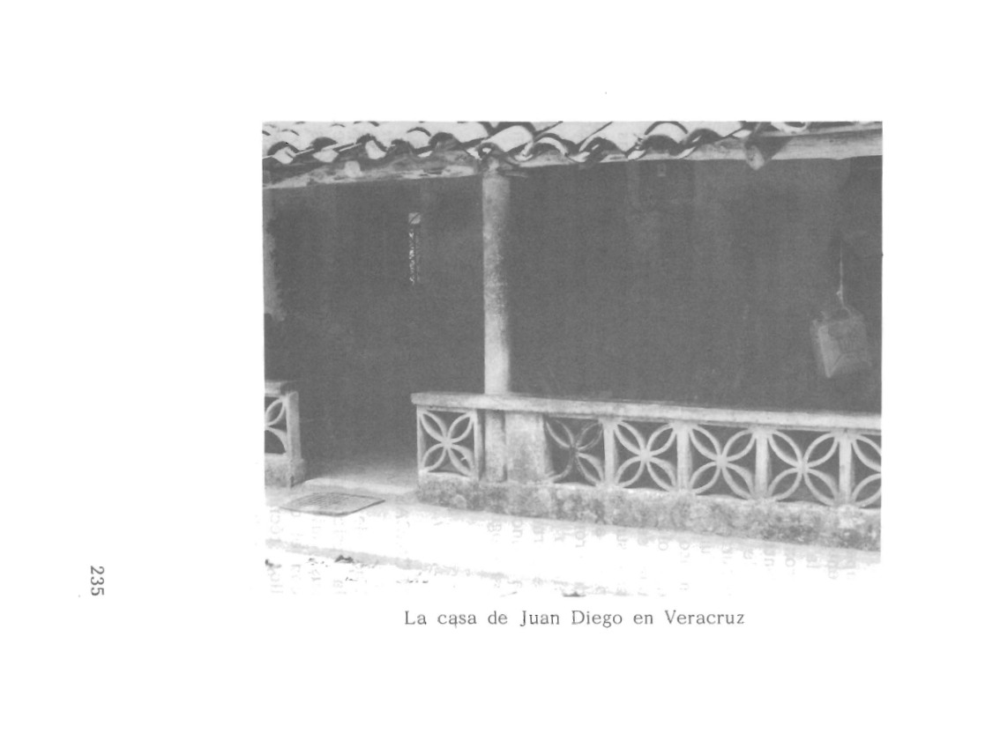
بيت خوان دييغو في فيراكروز.
تقنيات التأمل عند خوان دييغو
يسمع من يخاطبه داخل ذهنه، فيخبره بما يفعل وكيف يعالج الناس الذين بدأوا يسمعون عنه ويقتربون منه طلبًا للعون. وسرعان ما شاع خبر قدرته في القرى المجاورة، وأخذ الناس يأتون لزيارته طلبًا للعلاج.
يؤكد خوان دييغو أنه منذ بدأ العلاج أصبحت الأصوات التي يسمعها أوضح، وأرشدته إلى سلسلة من الإجراءات ليطبقها مع مرضاه، وإلى تسلسل من التقنيات ليطبقها على نفسه بهدف تعزيز تطوره. سأبدأ بوصف بعض هذه التقنيات، ثم أنتقل إلى طرق العلاج وإلى تصور هذا الشاب، أحد علماء النفس الأصليين، للواقع.
تقنيات التأمل عند خوان دييغو
من أكثر جوانب علم النفس المكسيكي الأصلي إثارة للاهتمام أن ممارسيه يستخدمون تقنيات مختلفة لتحفيز تطورهم الشخصي، وهي تقنيات يصح أن تسمى تقنيات تأمل.
وحالة خوان دييغو ليست استثناء؛ فهو يستخدم التقنية التالية وسيلته الأساسية للتطور: عند الفجر يجلس متربعًا. وفي هذه الوضعية يغمض عينيه ويسمح لذهنه بالاسترخاء، محاولًا أن يستقبل بهذه الطريقة
الطاقة والحماية
ما يسميه «الطاقة الكونية»، التي تدخل جسده شيئًا فشيئًا، مع إخراج طاقته الخاصة والمميزة منه في الوقت نفسه.
يبقى في هذه الحال ساعتين، يشعر بعدهما بأنه في اتحاد تام مع محيطه وأن أناه الخاصة قد اختفت. وبعد هذا التأمل يدهن نفسه بمستحضر من التبغ يقول إنه يساعده على الحفاظ على حالته، ويبدأ وهو في تلك الحال عمله العلاجي مع مرضى ذلك اليوم.
وبحسب خوان دييغو نفسه، فإنه يعطي مرضاه الطاقة التي استقبلها في تأمله الصباحي، ويشعر في الوقت ذاته بأن قوة تحميه وتمنع علل مرضاه ومشكلاتهم من النفاذ إليه.
وعند نهاية اليوم، حين يقرر استعادة طاقته الخاصة، يتجه إلى النهر ويستحم في ينبوع المياه الصافية. ومنذ تلك اللحظة، بحسب قوله، تزول حمايته ويعود شابًا عاديًا.
التجارب أثناء التأمل
بحسب هذا المتدرب، يحضر إليه في أثناء تأمله ثلاثة كائنات يسميها الحماة، يخاطبونه ويعلمونه فنون الشامانية والعلاج.
هؤلاء الحماة الثلاثة، الذين لم يشأ خوان
مفهوم الواقع بحسب خوان دييغو
دييغو ذكر أسمائهم، علموه كل ما يعرف، ووعدوه بأن تدريبه وتطوره سيستمران ما دام يطبق معارفه في علاج مرضاه. وإلى جانب تلقي المعلومات، يؤكد خوان دييغو أنه يستطيع إدراك ما يحيط به بصريًا على الرغم من بقاء عينيه مغمضتين.
ومن ناحية أخرى، يقول إن الإحساس الأكثر شيوعًا خلال تأملاته هو خفة تبلغ حدًا يجعله متيقنًا من قدرته على الارتفاع في الهواء، وهو أمر يؤكد أنه فعله في مناسبات عدة.
مفهوم الواقع بحسب خوان دييغو
ينتمي خوان دييغو إلى الجيل الجديد من علماء النفس المكسيكيين الأصليين. ويؤكد أنه تلقى جميع الإجراءات والتقنيات التي يستخدمها مباشرة من المعلومات التي يقدمها حماته، دون أن يستعين في أي وقت بتعليم معلم حي.
يقول خوان دييغو إنه اختير ليصبح شامانًا، وإنه لا توجد في عائلته أي سابقة هيأته لهذه المهنة. وبحسبه، فإن القدرة العلاجية والشامانية قدرة تأتي طبيعيًا ولا يمكن
البعد الخامس
تحفيزها.
وبوصفه مثالًا للجيل الجديد من علماء النفس المكسيكيين الأصليين، يستخدم خوان دييغو في لغته ويُظهر في تصوره للواقع جوانب لا يُظهرها الجيل القديم من الشامانات. وسنعلق فيما يلي على أمثلة لهذه الطريقة الجديدة في الإدراك.
فمن جهة، توجد، بحسب هذا الشاب من علماء النفس الأصليين، مستويات بُعدية مختلفة للواقع.
وهو يؤكد أننا نعيش يوميًا في عالم ثلاثي الأبعاد، أمّا حماته والعالم الروحي ففي بُعدٍ يتجاوز بُعدنا بدرجتين، على حدّ قوله. أي إنه يؤكد وجود واقع ذي بعد خامس يستمد منه معلوماته.
بل يؤكد أن لديه الإذن بالحصول على المعلومات والاتصال بهذا البعد الخامس عبر أبواب بُعدية أو فتحات يعبر خلالها في أوقات ولحظات معينة. وبالنسبة إليه، فإن واقع البعد الخامس واقع نبيل تتعايش فيه كائنات تشبه البشر في سلام، وتؤدي الأعمال في وفاق تام، دون حسد أو غيرة أو مشكلات انفعالية شائعة في حياتنا اليومية.
وعندما حدثته عن الغرانيسيروس في ولاية موريلوس وتأكيدهم وجود واقع لكائنات غير مرئية للبصر اليومي تسمى عمّال الطقس، تعيش في ظروف مماثلة تمامًا لظروف
العبور بين الأبعاد
كائنات البعد الخامس، رأى خوان دييغو أن هؤلاء الغرانيسيروس يتحدثون عن الواقع نفسه الذي يعرفه. وأكثر من ذلك، عندما أخبرته أن طقس دخول شامانات موريلوس إلى الشامانية يتضمن إصابتهم بصاعقة، اعتبر فورًا أن ما تفعله هذه الحالة هو إحداث فتحة ومدخل من البعد الثالث إلى الخامس، يعبر خلاله الشامان ليتلقى المعلومات من الكائنات التي تسكن هذا البعد الخامس. وبحسبه، فإن الدخول إليه سهل نسبيًا، لكن العودة معقدة وخطيرة جدًا. ويرى أن بقاء شامان مثل دون لوسيو في غيبوبة ثلاث سنوات بعد إصابته بصاعقة يدل على أن العودة من البعد الذي كان فيه إلى بُعدنا لم تكن ممكنة في مدة تقل عن ثلاث سنوات؛ وهذا يشير إلى الصعوبة البالغة في إعادة فتح الجسر الواصل بين الأبعاد بما يسمح بانتقال كائن من مملكة بُعدية إلى أخرى.
إذًا، يتضمن مفهوم الواقع لدى خوان دييغو، كما لدى معظم علماء النفس المكسيكيين الأصليين، الإقرار بوجود مستويات مختلفة للواقع؛ فكرة وجود مستويات غير مرئية تسكنها كائنات شبيهة بنا، تعيش حياة خاصة وتؤثر فينا من بُعد إقامتها، وتعلم أشخاصًا مختارين سبيل الشامانية
تقنيات العلاج عند خوان دييغو
وإجراءات العلاج.
تقنيات العلاج عند خوان دييغو
التقنية الأساسية التي يستخدمها خوان دييغو في علاجه هي قراءة البيضة والتطهير بها.
أتيحت لي فرصة مشاهدة ثلاث أو أربع عمليات تطهير ظهر فيها بوضوح ثبات الإجراء الذي يستخدمه هذا الشاب. يبدأ الإجراء بغمر البيضة بالمستحضر نفسه الذي يستخدمه خوان دييغو على جسده، ثم وضعها في راحة يد المريض، مع تحسس نبض قلبه وعدّ سبع نبضات ثلاث مرات في كل يد. ثم يضع البيضة على الساعد، تحديدًا عند ثنية المرفق من الداخل، ويدلك هذا الموضع. وبعد ذلك يضع البيضة بين حاجبي المريض، أيضًا لمدة عدد معين من النبضات، وأخيرًا يضعها أسفل الأذن اليمنى ثم اليسرى. وبعد هذه العملية يكسر البيضة ويسكبها في كأس ماء، ويقرأ الأشكال البروتينية لصفارها وبياضها المذابين في الماء.
لدى خوان دييغو تقنية لقراءة الفقاعات والتكوينات البروتينية تتيح له معرفة
الاستنتاجات
اضطرابات مرضاه ومشكلاتهم بدقة.
تشبه تقنيات القراءة هذه ما لوحظ لدى سائر المعالجين المكسيكيين، ولذلك لن نصفها هنا. وكل ما يمكنني التعليق به أن الفقاعات التي يتركها البياض في هذه التقنيات تدل على وجود قوى أو طاقات تؤثر في الشخص، وأن هذه التأثيرات تختلف بحسب حجم الفقاعات وموضعها.
يرسم خوان دييغو أحيانًا التكوينات البروتينية ليزيد دقة تصورها، وليتمكن أيضًا من عرضها على مرضاه وإجراء تشخيص مشترك معهم.
الاستنتاجات
نحن إذًا أمام شاب يمكن اعتباره واحدًا من الجيل الجديد من علماء النفس المكسيكيين الأصليين. وإذا التزمنا بما درسناه في حالة خوان دييغو، فإن هذا الجيل يتميز باستخدام تقنيات وأساليب علاجية شبيهة بتلك التي استخدمها أسلافه، مع استخدام مختلف للمفاهيم والمصطلحات، أكثر حداثة ومعاصرة.
ومن أمثلة ذلك استخدام مفهوم
المعرفة الداخلية والتأثير الثقافي
«الأبعاد» للإشارة إلى ما كان شامانات الجيل القديم يسمونه «عمّال الطقس» و«الكائنات الروحية» و«العالم غير المرئي» وما إلى ذلك.
ومع أن خوان دييغو يؤكد أنه ليس له معلم أو مرشد يمكن التعرف عليه في هذا العالم، فمن المعقول افتراض أن مصطلحات مثل «البعد الخامس» وغيرها مما يستخدمه تعكس معارف ثقافية واجتماعية اكتسبها طوال حياته في المدرسة، ومن الاستماع إلى المذياع ومشاهدة التلفاز ومحادثاته مع أصدقائه وما إلى ذلك. ولذلك لا يمكن قبول القول بأن معرفته كلها تأتي حصرًا ومباشرة من مرشديه أو حماته كما يؤكد؛ بل هي مزيج بين هذه المعرفة الداخلية والمعلومات التي نقلتها إليه الثقافة التقنية المعاصرة.
وربما كانت هذه سمة أخرى للجيل الجديد من علماء النفس الأصليين، الذين تأثروا أكثر بالمحيط والثقافة ووسائل الإعلام التي تعرضوا لها بدرجة أشد بكثير مما تعرض له أسلافهم الشامانات.
ومن المثير للاهتمام أيضًا استخدامه تقنية تأمل ذات خصائص شبيهة جدًا بالتقنيات المستخدمة في الشرق. فكما نتذكر، يجلس متربعًا ويبقى كذلك ساعتين في الصباح في حالة استرخاء؛ وهذه تقنية مستخدمة في الشرق.
وأخيرًا، فإن وجود عالم نفس مكسيكي أصلي شاب
جيل جديد من علماء النفس الأصليين
مثل خوان دييغو يلزمنا بإعادة النظر في تصور سابق لدينا، وهو أننا كنا نشهد الجيل الأخير من الشامانات المكسيكيين. أما الآن فيمكن القول إن حركة جديدة من علماء النفس الأصليين بدأت، وإنها، مع تلقيها تأثيرات الثقافة المعاصرة، تظل محتفظة بطابع أصلي معين متحرر من التأثيرات الخارجية.
الفصل الحادي عشر
دون روفينو من يوكاتان
صفحة بيضاء
توضيح تحريري: هذه الصفحة بيضاء في النسخة الأصلية.
دون روفينو من يوكاتان
على مسافة ستين دقيقة من مدينة ميريدا، يعيش دون روفينو تان في قرية صغيرة؛ وهو شامان من المايا، أمضى أكثر من خمسة وعشرين عامًا في علاج المرضى وإرشادهم، وإرشاد التلاميذ، في تنمية الوعي. يبلغ دون روفينو نحو السبعين، ولا يزال يحتفظ بحيوية الشباب وفضوله.
قدرات دون روفينو
يقول دون روفينو إنه يمتلك القدرة على جذب أي «روح» لشخص يوجه انتباهه إليه.
وبواسطة تنفسه، وتوجيه جسده في اتجاه وجود الشخص نفسه، يؤدي حركات
قدرات دون روفينو ومعلمه
مميزة بذراعيه ويستنشق بعمق. وبحسبه، تجذب هذه الحركات «روح» الشخص. وبعد أن تصبح في حوزته، يودع هذا الشامان «الحضور الروحي» في إحدى تلميذاته، التي دُربت على إدخال «روح» الشخص المستدعى في جسدها. وبمجرد أن تدخل جسد التلميذة، يتواصل دون روفينو مع «الروح» ويعالجها.
بحسب دون روفينو، ينشأ المرض من «احتلال» روح غريبة لجسد شخص. وشفاء الشخص يعني إبعاد الروح الدخيلة وإعادة الأصلية. وأحيانًا تكون روح الشخص نفسها هي المريضة، فيجري معها دون روفينو، بعد دخولها جسد تلميذه، محادثة علاجية ويمنحها وضوحًا بشأن حالتها ووضعها. وعندما تتلقى «الروح» المريضة التأثير العلاجي الذي يقدمه دون روفينو، أو تقتنع «الروح» الدخيلة بالكف عن إزعاج الشخص الذي تتخذه وعاءً أو هدفًا، يُشفى الشخص.
معلم دون روفينو
يؤكد هذا الشامان أنه تلميذ دون ماكسيمو كين، المرجع الأعلى في الممارسة التي يتبعها.
ومن المثير للاهتمام على نحو استثنائي أن دون ماكسيمو كين نفسه يذكره شامانات آخرون من المايا
التفسير
بوصفه معلمًا والمرجع الروحي الأعلى.
ومن أمثلة هذا الاتفاق دونيا سوسانا، وهي شامانة من المايا لا تعرف دون روفينو، لكنها تذكر دون ماكسيمو كين بالصفة المذكورة آنفًا.
ولا نملك عن هذه الشخصية معلومات أخرى، سوى أن شامانات المايا يصفونه بأنه كائن يعيش في الفضاء ولا جسد له.
يمتلك دون روفينو القدرة على إدخال تلاميذه في غشية عميقة يقول إنهم يستطيعون خلالها التواصل مع دون ماكسيمو كين. وفي هذه الحالة يقدم له تلاميذه رسائل ويساعدونه على إجراء عمليات الشفاء.
التفسير
من الصعب جدًا تفسير سلوك دون روفينو، وإن كنا سنقدم فيما يلي تفسيرًا مبدئيًا لأفعاله وتصوراته. من الشائع في الشامانية المكسيكية أن يتحدث قادة بعض السلالات عن وجود مستويين مختلفين للواقع: مستوى يوجد فيه الواقع اليومي، وآخر يتصل فيه الشامان بمعلم أو مرشد يشغل جسده، ويستخدمه في هذه الحالة للعلاج وتقديم الرسائل وإرشاد تلاميذه.
الغشية ومستويات الذات
كانت دونيا باتشيتا مثالًا جيدًا على ذلك. فقد كانت تتصرف كامرأة عادية إلى أن تدخل حالة مميزة يصبح جسدها خلالها مشغولًا وخاضعًا لسيطرة «روح» كواوتيموك، آخر أباطرة الأزتك.
وبحلول كواوتيموك فيها، كانت تستطيع القيام بمآثر علاجية خارقة واستثنائية، والتحكم بالطاقة والمادة.
ومن الحالات المماثلة دون فلورينسيو من موريلوس، ودونيا سوسانا من يوكاتان، ودون إيفان رامون من المكسيك، وغيرهم. يستبدل هؤلاء جميعًا بشخصيتهم اليومية العادية شخصية أخرى، بعد أداء سلسلة من الحركات تتضمن في معظم الحالات الجلوس على كرسي وإغماض العينين والتنفس بعمق حتى تبدأ العضلات بالاهتزاز بقوة.
يؤكد جميع الشامانات، باستثناء دون رودولفو من فيراكروز، أن روحًا أخرى تشغل أجسادهم أثناء الغشية.
أما دون رودولفو فيؤكد أن ما يشغل جسد الشامان أثناء الغشية ليس روحًا غريبة، بل الشامان نفسه في مستوى آخر من ذاته؛ مستوى يتعذر عادة على الوعي اليومي بلوغه، لكنه أقرب قطعًا إلى كينونته الخاصة.
يتفق هذا التفسير مع موقف الزاهد النموذجي في الهند، الذي ينتهي، من كثرة رفضه التماهي مع أي دور اجتماعي أو بنية أو اتفاق، إلى أن يعيش نفسه منفصلًا عن جسده الذي يرفض التماهي معه أيضًا. ويتحدث هذا الزاهد عن نفسه بضمير الغائب
الهوية الإنسانية الأساسية
مسلّمًا بأن هويته الجسدية ليست أناه الحقيقية. وهكذا يجد نفسه وراء اشتراطاته وتاريخه الشخصي وتعلقاته، في حالٍ يكون فيها هو نفسه من غير أن يتماهى مع شيء، حرًّا تمامًا من القيود والحاجات، ومستقلًّا عن القوانين التي تحبس بقية البشر داخل البنى والتماهيات المحددة والتبعيات المادية.
ويمكن تصور أن الشامان الذي يعتقد أن روحًا أخرى تشغله إنما يستقر في أناه الحقيقية، فيصبح، وقد تحرر هكذا، قادرًا على إجراء شتى أنواع الشفاء، بل المعجزات أيضًا.
وفي حالة دون روفينو وشامانات آخرين من المايا، يمكن فهم إشارتهم إلى وجود دون ماكسيمو كين بوصفها تذكيرًا مستترًا بالهوية الحقيقية للإنسان.
وفي سلالة دون خوان ماتوس من سونورا تُسمى هذه الهوية الإنسانية الأساسية «نطاق الإنسان»، ويقال إن الإنسان يبلغ الوجد عندما يتمكن من التفاعل مع ذلك النطاق.
ويمكن تفسير قدرة دون روفينو على التفاعل مع «أرواح» مرضاه المريضة أو الدخيلة، استنادًا إلى النظرية السينترجية، بوصفها قدرة حقله العصبي على التركيز على الحقول العصبية لمرضاه وتعديل بنيتها عن بعد.
الاستنتاجات
الاستنتاجات
إذا صح تفسير أن الشخصية البديلة التي يتحول إليها الشامان هي أناه الحقيقية، غير المتماهية مع جسده وتاريخه، فإن السلالات التي تحفز تلاميذها وتدربهم على الدخول في الغشية إنما تحفز تطورًا حقيقيًا، لكنها تشرحه بتفسير خاطئ.
وهذا الاعتبار يستحق مزيدًا من البحث مستقبلًا.
الفصل الثاني عشر
بعض تقنيات التأمل لدى علماء النفس المكسيكيين الأصليين
صفحة بيضاء
توضيح تحريري: هذه الصفحة بيضاء في النسخة الأصلية.
مستويات الممارسة
يمكن تصور وجود ثلاثة مستويات مختلفة بين علماء النفس المكسيكيين الأصليين. وأكثرها تطورًا هو مستوى المعلم، الذي يعرف ويرشد ويدرب غيره من علماء النفس الأصليين. ويمكن أن نطلق على هذا المستوى اسم الشامان. فالشامان إذًا هو أقصى مستوى من التطور يبلغه علم النفس الأصلي.
والمستوى التالي هو مستوى عالم النفس الأصلي الذي، من دون أن يكون معلمًا، يمتلك معرفة كافية تتيح له، إضافة إلى العلاج، تقديم مشورة نفسية لمرضاه وإرشادهم لحل المشكلات المعقدة، والمساعدة على الحفاظ على الصحة النفسية لمجتمعه والوقاية من تدهورها. وأخيرًا، يقابل المستوى الثالث ما يمكن تسميته المعالج الشعبي، الذي يكرس نفسه، كما يدل اسمه، للعلاج، وفي معظم
التطور وتقنيات التأمل
الأحيان باستخدام الأعشاب أو تقنية محددة، كتلك المرتبطة بحركات التطهير بالبيضة، و«المعاينات»، وما إلى ذلك. والمعالج الشعبي، وإن امتلك قدرًا من المعرفة النفسية، متخصص في تقنيات ملموسة.
وفق هذه الفئات الثلاث، الشامان وعالم النفس الأصلي والمعالج الشعبي، يمكن العثور على مستويات مختلفة من تقنيات العلاج، وبالطبع درجات متفاوتة في تعقيد التصوّرات التي يستند إليها المعالجون. وبوجه عام، كلما كان عالم النفس الأصلي أكثر تطورًا قل اعتماده على التقنيات، وزاد اعتماده على حدسه والتعامل المباشر مع الطاقة. وكلما قل تطوره زاد اعتماده على التقنيات التي تتطلب أشياء أو مواد محددة، وقل استخدامه للعمليات الحدسية والتعامل المباشر مع الطاقة.
ومن جهة أخرى، نجد أيضًا، في ارتباط بمستوى تطور عالم النفس الأصلي، استخدام تقنيات تأمل مختلفة؛ تقنيات تزداد رقيًا كلما ازداد الشامان تطورًا، وتقل رقيًا كلما قل تطوره. ولا أقصد بالرقي سوى القدرة على إقامة اتصال مباشر بدرجة أو بأخرى بما يمكن أن نسميه كينونة عالم النفس الأصلي، أو طبيعته الحقيقية، إذا استخدمنا تعبيرًا شرقيًا.
سيحاول هذا الفصل وصف بعض تقنيات التأمل لدى علماء النفس الأصليين عندنا، والتصورات الكامنة وراء استخدامها. وسيكون الوصف
تقنيات التأمل عند دون لوسيو من موريلوس
بتمييز كل تقنية على حدة وتجسيدها في علماء نفس أصليين وشامانات معينين.
تقنيات التأمل عند دون لوسيو من موريلوس
يعتبر دون لوسيو أن قوته كشامان تأتي مما يسميه العالم غير المرئي، الذي يسكنه عمّال الطقس والقطعان والرعاة.
وقد صُممت تقنياته التأملية تحديدًا لإقامة اتصال بهذا العالم غير المرئي وسكانه.
إحدى هذه التقنيات هي إقامة اتصال بالطبيعة والاسترخاء في هذا الاتصال.
يختار دون لوسيو مكانًا في الريف، يفضل أن يكون هادئًا لا تشوّش عليه فيه الأصوات، بعيدًا عن مخالطة الناس، وفي هذا المكان، تحت شجرة مثلًا، يستلقي ويسترخي مطلقًا ذهنه حرًا، من دون أن يعوق عملياته أو يقمعها أو يوجهها. وبكلماته: يترك روحه حرة لتقوم بـ«أعمالها الروحية» وتنجزها.
وتتكون تقنية أخرى عنده من الانتباه إلى الأصوات الداخلية والاستماع إلى رسائل عمّال الطقس، الذين يتواصلون معه مباشرة، بحسب قوله.
تقنيات التأمل عند دونيا باتشيتا
تقنيات التأمل عند دونيا باتشيتا
كانت دونيا باتشيتا، إحدى أكثر شامانات المكسيك المعاصرة استثنائية، تحقق مآثر حقيقية في الشفاء والتحكم بالزمكان والطاقة والمادة، وتقول إنها تستخدم سلسلة من الإجراءات التي تتيح لها إنجاز عملها. وكان إجراء التأمل الأساسي لديها يتمثل في الجلوس على كرسي أمام مذبحها في الغرفة التي تجري فيها عملياتها وعلاجاتها، ثم إغماض عينيها والتنفس برفق حتى تسمع طنينًا مميزًا في إحدى أذنيها. وما إن تلتقط هذا الطنين، الذي كان بحسبها مظهرًا من مظاهر تغير حالتها، حتى تركز انتباهها على الصوت الداخلي إلى أن تشعر بأنها تسقط في ما يشبه حفرة كبيرة، فتتغير حالتها بعد ذلك.
كانت دونيا باتشيتا تتأمل إحساسات صوتية مميزة، ثم تترك نفسها تنطلق في فعل تصفه بأنه قفزة في الفراغ أو هبوط مفاجئ في عجلة ملاهٍ كبيرة، ثم تبدأ عملياتها الجراحية.
تذكرني هذه التقنية بإجراء هندي للتأمل يسمى «شابد»، ينبغي فيه للمتأمل أن ينتبه إلى طنين مميز ويتتبعه مدة طويلة نسبيًا.
تقنيات التأمل عند دون بانشيتو
تقنيات التأمل عند دون بانشيتو
دون بانشيتو أحد أعرق الشامانات خبرة في الجمهورية المكسيكية، وهو من أصل ماياوي ويعيش في قرية صغيرة في وسط شبه جزيرة يوكاتان.
يستخدم دون بانشيتو ثلاث تقنيات تأمل على الأقل. الأولى ملاحظة يقظة للظواهر الطبيعية اليومية. وأقصد ملاحظة الفجر والغروب وحركات الحيوانات وعملياته الداخلية وتغيرات الضوء وحركات أرجوحته الشبكية حين يتأرجح فيها وما إلى ذلك. وهو قادر على مواصلة الملاحظة ساعات متتابعة، منتبهًا إلى أدق تفاصيلها.
والتقنية الثانية التي يستخدمها هي الملاحظة اليقظة للنجوم ليلًا. يختار منطقة من السماء المرصعة بالنجوم، ويثبت انتباهه عليها نحو خمس عشرة دقيقة في وضعية استرخاء، تاركًا المعلومات النجمية تنفذ إلى داخله. ثم ينام، وفي الصباح يسترجع أحلامه، ومن خلال محتوياتها يراقب عملياته الخاصة ويستطيع استخدام هذه المعلومات وتقديمها لمريض ما. والواقع أنه يستخدم تقنية مراقبة النجوم وما يعقبها من تحليل محتويات الأحلام عندما يأتيه مريض يستشيره ويطلب منه تحديدًا
تقنيات التأمل عند دون غاودينسيو
التنبؤ بمستقبله.
أما تقنية دون بانشيتو الثالثة فتتمثل فيما يسميه التحدث مباشرة مع الله. وكل ما أستطيع ذكره عنها أنه يشدد على أن الساعي إلى التطور ينبغي أن يتعلم إقامة حوار مباشر مع الله، وأن يحافظ على هذا الحوار بلا وسطاء.
تقنيات التأمل عند دون غاودينسيو
ينحدر دون غاودينسيو من هنود التيبانيك، ويقع في مستوى بين المعالج الشعبي وعالم النفس الأصلي.
يستخدم تقنيتي تأمل تختلفان عن تقنيات الشامانات السابقين في كونهما تقنيتين حركيتين. الأولى ما يمكن تسميته تقنية خطوة القوة. يستخدمها هنود التيبانيك لاكتساب مزيد من الطاقة والقوة، والتفاعل بهما على نحو أنسب أثناء عملياتهم العلاجية. وتتمثل في المشي مع ثني الساقين قليلًا، وفتح الصدر ودفعه إلى الأمام، في نوع من محاكاة مشية الغوريلا. وتستمر خطوة القوة مدة طويلة دون انقطاع، وتُحدث، بحسب غاودينسيو، زيادة
تقنيات التأمل عند كارلوس كاستانيدا
ملحوظة في طاقة المعالج.
والتقنية الثانية، وهي أيضًا من أصل تيبانيكي، تتمثل في تدوير الرأس ببطء أفقيًا من اليسار إلى اليمين ثم من اليمين إلى اليسار. وتتم الحركات مع ضغط الذقن على الصدر أثناء الدوران البطيء. وبحسب غاودينسيو، يستطيع هنود التيبانيك الاستمرار في هذه التقنية التأملية الحركية ثماني ساعات متصلة، مركزين تمامًا على الدوران البطيء، فيحدثون بهذه الطريقة زيادة في القدرة على الانتباه وتركيزه.
تقنيات التأمل عند كارلوس كاستانيدا
يستخدم هذا الشامان المعاصر، تلميذ دون خوان ماتوس من سونورا، عددًا غير محدد من تقنيات التأمل، لا أستطيع الحديث إلا عن واحدة منها. وهي تشبه كثيرًا تقنية هنود التيبانيك الموصوفة آنفًا، وتتكون أيضًا من تدوير الرأس ببطء من اليمين إلى اليسار ومن اليسار إلى اليمين، مع إضافة: يتخيل المعالج الشعبي أو عالم النفس الأصلي أثناء الحركة مشاهد تضم أشخاصًا آخرين تفاعل معهم؛ وأثناء الدوران والشهيق يجمع عناصر حضوره الخاص التي يشعر
استعادة الطاقة والصمت الداخلي
بأنه تركها متناثرة لدى الأشخاص الذين تفاعل معهم، وأثناء الزفير يعيد إلى هؤلاء الأشخاص أنفسهم عناصر الطاقة التي أخذها منهم.
تتيح التقنية استعادة الطاقة الشخصية من دون تداخل أو تقاطع مع طاقة الآخرين. ومن وجهة نظر التحليل النفسي، يمكن تفسيرها بوصفها استرجاعًا لعمليات التحويل والتحويل المضاد لدى الشامان. وبعبارة أخرى، هي تقنية تتيح معالجة تفاعلات الماضي وتنقيتها من الشحنات الطاقية والانفعالية.
وفي هذا المعنى، تتكون تقنية تأمل أخرى يستخدمها كارلوس كاستانيدا من استرجاع الأحداث بالترتيب العكسي، بدءًا من اللحظة الحاضرة، ومعالجة عمليات التفاعل بواسطة هذا الشهيق والزفير وتدوير الرأس، بقصد استعادة الحاضر ومحو التاريخ الشخصي وسلسلة الاشتراطات والارتباطات التي تلونه.
ومن الأفكار والأهداف الرئيسية لهذه التقنيات تحقيق صمت داخلي؛ أي حالة لا يوجد فيها حوار داخلي، بهدف التفاعل مع الواقع في الحاضر وبانسياب تام.
تقنيات التأمل عند خوان دييغو ودونيا خوسيفينا
تقنيات التأمل عند خوان دييغو
كما رأينا في الفصل العاشر من هذا المجلد، يستخدم خوان دييغو تقنية تأمل مثيرة للاهتمام، تتمثل في الجلوس بلا حركة، بوصفه أول فعل يقوم به صباحًا بعد الاستيقاظ، والبقاء في هذه الوضعية ساعتين، سامحًا لأناه بأن تتلاشى تدريجيًا وأن يتشرب جسده مكانها طاقة البيئة المحيطة. وبكلماته، تتمثل تقنيته في السماح لطاقة «الكينونة» بأن تحل محل طاقته وتغمره بالكامل.
وبحسب هذا العالم من علماء النفس الأصليين، تُكتسب بهذه الطريقة قوة كافية لتخفيف علل المرضى الذين يأتون طلبًا للعون.
تقنيات التأمل عند دونيا خوسيفينا من أواخاكا
يمكن اعتبار دونيا خوسيفينا شامانة مخضرمة تمارس العلاج في مدينة أواخاكا، وتستخدم تقنية تأمل بالغة الرقي سأحاول وصفها فيما يلي.
تؤكد دونيا خوسيفينا أنها تستطيع البقاء واعية طوال الليل، تراقب
تقنيات التأمل عند دون خوان «إل كواتي» تشاغالا
عملياتها الخاصة وتحفز ما تسميه رحلات خارج جسدها. وتستخدم هذه الرحلات للاتصال بمرضاها مهما كانت المسافة التي تفصلها عنهم، وخصوصًا للسفر إلى مكان تقول إنه يقع في اليابان، ولإقامة تفاعل هناك مع السكان الذين يعيشون فيه، بحسب قولها.
وتؤكد أن مجرد زيارة هذا المكان يكفيها لاستعادة القوة والقدرة على العمل طوال اليوم في عملياتها العلاجية، من دون حاجة إلى النوم ليلًا.
تقنيات التأمل عند دون خوان «إل كواتي» تشاغالا
مع أن فهم تصورات إل كواتي تشاغالا كان بالغ التعقيد، فقد تمكنا بالتأكيد من ملاحظة أنه يبدو كمن محا تاريخه الشخصي، ويظهر موقفه قدرة تُحسد على عيش اللحظة الحاضرة بلا تداخلات. ويمكننا اعتبار تقنيات التأمل التي يستخدمها مرتبطة بقدرته على معايشة الحاضر بانسياب تام. ويبدو أنه لا يستخدم تقنية تأمل محددة منفصلة عن حياته اليومية، بل
الاستنتاجات
ينساب مع اللحظة الحاضرة من غير عائق، وتلك طريقته في التأمل.
الاستنتاجات
لقد استعرضنا بعض علماء النفس المكسيكيين الأصليين، ووصفنا بعض تقنياتهم التأملية. وينبغي توضيح أن هذا الاستعراض ليس شاملًا بأي حال، ولا يمكن اعتباره تحليلًا نهائيًا أو كليًا لتقنيات التأمل التي يستخدمها علماء النفس الأصليون. بل هو استعراض جزئي يمكن إثراؤه في أعمال لاحقة كلما حصلنا على مزيد من المعلومات.
ويمكن الآن القول إن علماء النفس الأصليين يستخدمون، بوجه عام، مجموعتين كبيرتين من تقنيات التأمل: فمن جهة تقنيات يمكن تسميتها نشطة، مثل خطوة القوة وحركات تدوير الرأس، والتقنية التي يستخدمها هنود الياكي في سونورا، وتتمثل في تدوير العينين في دوائر، أولًا مع عقارب الساعة ثم عكس اتجاهها، وهي تقنية تُستخدم للعيش في الحاضر والبقاء فيه. ومن جهة أخرى تقنيات لا تتضمن حركات، ولذلك يمكن تسميتها ساكنة، كتلك التي يستخدمها دون بانشيتو في ملاحظاته
تنوع تقنيات التأمل
للطبيعة وتثبيت انتباهه على النجوم.
تختلف درجات تعقيد تقنيات التأمل من عالم نفس أصلي إلى آخر؛ من الملموسة جدًا إلى المجردة جدًا، ومن التي تتضمن حركات محددة، كما في حالة غاودينسيو، إلى التي تتضمن إقامة حوار مباشر مع الله، كما في حالة دون بانشيتو.
الفصل الثالث عشر
إجراءات التنظيف «التطهير» في علم النفس المكسيكي الأصلي
صفحة بيضاء
توضيح تحريري: هذه الصفحة بيضاء في النسخة الأصلية.
إجراءات التطهير
في كل أنحاء الجمهورية المكسيكية تقريبًا توجد مجتمعات وقرى تستفيد بطريقة أو بأخرى من العلاجات الشامانية. ومن أكثر الممارسات العلاجية انتشارًا لدى علماء النفس المكسيكيين الأصليين ما يسمى «التطهير» أو «الإزالة». ويهدف هذا الإجراء إلى إعادة حالة نفسية إيجابية ومنسابة إلى المرضى، بإخراج اضطرابات من أجسادهم تؤثر في النفس.
سيحلل هذا الفصل بعض إجراءات التطهير التي يستخدمها في مناطق مختلفة من الجمهورية المكسيكية شامانات معروفون بمسيرتهم وخبرتهم ودقتهم.
الأنواع العامة للتطهير
الأنواع العامة للتطهير
يمكن القول بوجود نوعين رئيسيين، بوجه عام، من إجراءات الإزالة التي يستخدمها الشامانات المكسيكيون: ما يمكن تسميته التطهير الخارجي من جهة، والإزالة الداخلية من جهة أخرى.
يشير النوع الأول إلى استخدام تقنيات تطهير تُطبق على الجزء الخارجي من الجسم. أما النوع الثاني فيشير خصوصًا إلى تقنيات تتضمن تناول مواد، أو التحكم بعمليات تحدث داخل الجسم.
إجراءات الإزالة الخارجية
توجد إجراءات كثيرة يستخدمها الشامانات وتندرج ضمن فئة التطهير الخارجي. وفيما يلي قائمة مبدئية، وغير كاملة بأي حال، بهذه الإجراءات:
1. التطهير بالبيضة.
2. التطهير بالبلسم.
3. الاستخدام الخارجي للمواد.
4. استخدام سعف النخيل.
5. استخدام الديوك.
6. التطهير بالليمون.
7. الإزالة بالدخان.
8. الاستنشاق.
9. وضع اليدين.
سنقدم فيما يلي تحليلًا موجزًا لكل نوع، موضحين في كل حالة أيّ الشامانات الذين درسناهم يستخدم هذه التقنية.
1. البيض. يُستخدم على نطاق واسع
البيض والبلسم
في الشامانية المكسيكية لإجراء التطهير. ويقول الشامانات إن البيض يمتلك قدرة كبيرة على امتصاص العناصر السلبية المحيطة بالمريض، بل الموجودة داخل جسده أيضًا.
وتتمثل التقنية الأكثر شيوعًا وثباتًا في إعطاء المريض بيضة أو بيضتين، والطلب منه إمساكهما بيديه، ثم تسليمهما إلى الشامان الذي يستخدمهما لدلك جسم المريض كله من الرأس إلى القدمين.
يستخدم الشامانات وعلماء النفس الأصليون البيض بطريقة متشابهة جدًا، رغم وجودهم في مناطق جغرافية متباينة تمامًا، وعدم معرفة كثيرين منهم بعضهم ببعض. فعلى سبيل المثال، تستخدم دونيا ليتشا من بويبلا إجراءً شبيهًا جدًا بما يستخدمه دون لوسيو من موريلوس أو دون خوان تشاغالا من سانتياغو توكستلا. وجميعهم يحللون محتويات البيض بعد التطهير للوصول إلى تشخيص الحالة الروحية للمريض، فيما يسمى «المعاينة». وهذه، وإن لم تكن إجراء تطهير بحد ذاتها، تتكون من سكب كل بيضة في كأس ماء وملاحظة تكون الحجب والأغشية والفقاعات وما شابه، التي يتركها الصفار والبياض، وتفسير هذه التكوينات للوصول إلى تشخيص حالة المريض.
2. البلسم. كانت دونيا باتشيتا من مدينة مكسيكو تستخدم البلسم عندما يأتي المرضى إليها، بوصفه إجراءً
المواد والسعف والديك
اعتياديًا للتطهير. وقد لوحظ استخدام مشابه جدًا في تقنيات دون لوسيو كامبوس ودونيا ليتشا ودون خوان تشاغالا. يأخذ هذا الشامان الأخير في فمه كمية كبيرة من سائل أخضر فاتح مصنوع من أعشاب طبية، ثم يبصقه على ظهر المريض وكتفيه وذراعيه وصدره ووجهه، ويدهن المزيج بغصن من الأعشاب الطبية. أما سائر الشامانات فيستخدمون البلسم بدهنه على مرضاهم بعد سكبه في أيديهم.
3. استخدام المواد الكيميائية. من إجراءات التطهير عند دون لوسيو من موريلوس دهن جباه مرضاه بمسحوق مائل إلى البياض يحصل عليه من ساحل غيريرو. وكانت دونيا ماريا سابينا من واوتلا تستخدم إجراءً مشابهًا؛ إذ اعتادت، قبل رحلة الفطر، دهن سواعد المشاركين بمسحوق مائل إلى السواد يسمى «بيتشياتي».
4. استخدام سعف النخيل. من التقنيات الشائعة لدى بعض الشامانات استخدام سعف يجدلونه بأنفسهم لإبعاد ما يسمونه الأرواح السلبية المحيطة بمرضاهم. فدون لوسيو مثلًا يستخدم سعفة يضرب بها جانبي المريض وظهره ليتركه مطهرًا، ويتمكن بذلك من متابعة علاج داخلي.
5. استخدام الديك. يستخدم دون لوسيو نفسه، في عمليات إزالة أكثر تعقيدًا، ديكًا يمسكه من ساقيه ويحركه حول جسم المريض، بل ويدلك به جلده. وهذا الإجراء، بحسبه، فعال للغاية لأن الديك «يمتص»
الليمون والدخان والاستنشاق
سلبية المريض. وفي الحالات القصوى، بعد عملية الاحتكاك بين الديك وجسم المريض، يُدفن الديك حيًا في حفرة أُعدت لهذا الغرض، اعتقادًا بأن ذلك يحمي المريض من الأحداث السلبية المقبلة.
6. استخدام الليمون. توصي دونيا ليتشا بدلك جسم المريض بليمونتين، تُشق كل منهما مسبقًا بالسكين على شكل صليب ليسمح بخروج عصيرها. وتوصي بدلك الجسم كله بهما ثلاثة أيام متتالية، لتجنب الحسد ومشكلات السلبية عن بعد.
7. استخدام الدخان. يشيع جدًا بين الشامانات استخدام أعشاب تُحرق لإنتاج دخان يُنفخ حول أجساد المرضى، أو تُملأ به المساكن، بهدف طرد التأثيرات السيئة.
8. الاستنشاق. من إجراءات التطهير أيضًا ما يستخدمه دون بانشيتو من يوكاتان عند تحية مرضاه. يتمثل الإجراء في أن يستنشق بأنفه أولًا من الجانب الأيمن لرأس المريض ثم من جانبه الأيسر عند تحيته. ويبدو أن شامانات آخرين يستخدمون إجراءات استنشاق أكثر تعقيدًا، بهدف استخراج العمليات السلبية التي امتصها الجسم المتضرر من داخله بواسطة الشفط.
9. وضع اليدين. وأخيرًا، من أكثر الإجراءات شيوعًا مما تمكنا
الإجراءات الداخلية
من دراسته أن يضع الشامان يديه على أجزاء مختلفة من أجساد مرضاه، فيمتص بواسطتهما ما تحتويه من سلبية، أو يضعهما خارج الأجساد محاولًا موازنة حقولها الطاقية. ومن أكثر من يستخدم هذه التقنية دونيا ليتشا، التي تعترف بأن «شيئًا» يخبرها أين تضع يديها لعلاج الأوجاع، من دون أن تستطيع تحديد مصدر الأوامر التي توجهها إلى ذلك.
الإجراءات الداخلية
تُستخدم إجراءات التطهير الداخلية لإزالة الجوانب المرضية التي استدخلها جسم المريض. ويمكن وضع قائمة مبدئية ببعض تقنيات الإزالة هذه:
1. تناول الأدوية والأعشاب.
2. العمليات الجراحية.
3. العمليات النفسية.
4. استخدام المهلوسات.
التقنيات الداخلية أشد تعقيدًا وقوة بكثير من الخارجية، ولا تُستخدم إلا عندما تعجز الأخيرة عن حل الحالة المرضية. وفيما يلي وصف موجز لها:
1. تناول الأدوية. اعتاد دون لوسيو من موريلوس أن يجعل مرضاه يشربون كأسًا مملوءة بزيت الطبخ، أضاف إليها مجموعة من الأعشاب
الأدوية والعمليات
يقول إنها تطهر الجسم من الداخل. وبحسبه، عندما يكون لدى شخص أذى داخلي لا يمكن إزالته بأي طريقة أخرى، فإن تناول جرعته من الزيت والأعشاب هو أقوى الطرق وأكثرها فاعلية لإخراج هذا الأذى. ويؤدي التناول إلى إسهال وقيء، وهو ما يفسره الشامان تفسيرًا إيجابيًا، إذ يدل على أن المادة نشّطت عمليات طرح أذى المريض.
كانت دونيا باتشيتا تستخدم تناول الأعشاب أيضًا، وتصنع نبيذًا طبيًا تقول إنه يستطيع أن يحفظ أجساد مرضاها من الشيخوخة.
ويستخدم دون خوان تشاغالا كذلك نبيذًا طبيًا شبيهًا في طعمه وقوامه بما كانت تستخدمه دونيا باتشيتا، ولغرض مماثل.
2. العمليات. ربما لا يوجد إجراء للتطهير الداخلي أكثر استثنائية من العمليات الجراحية التي كانت دونيا باتشيتا تجريها داخل الجسم. كانت تستخدم فيها سكينًا بريًا لا يكون معقمًا دائمًا، ومن دون حاجة المريض إلى تناول مواد التخدير. وكانت تدخل السكين في أجزاء مختلفة من أجساد المرضى لاستخراج الأذى والعمليات المرضية والأورام وما إلى ذلك مما أصابهم.
وبهذه الطريقة كانت دونيا باتشيتا، بحسب ما يرويه المؤلف، تستطيع زرع الأعضاء واستئصال القُرَح والأورام
العمليات النفسية والمهلوسات
السرطانية وتعديل نشاط أعضاء داخلية مختلفة.
ومن الإجراءات الجراحية الأخرى التي كانت تستخدمها فتح الجسم لاستئصال القرح والأورام السرطانية وتعديل نشاط أعضاء داخلية مختلفة، وأحيانًا لاستخراج اضطرابات سبّبها السحر والشعوذة. وكانت تستخدم لهذا الغرض سكينها البري لفتح شق، ثم تستخرج بالسكين نفسه أو بيديها ما يسمى الأذى المتجسد ماديًا.
3. العمليات النفسية. تقول دونيا خوسيفينا من أواخاكا إنها قادرة على إجراء عمليات تضاهي عمليات دونيا باتشيتا تعقيدًا أو تتجاوزها، ولكن دون أدوات جراحية؛ إذ تستخدم ذهنها وحده أداةً للعمل في زرع الأعضاء وعلاج الاضطرابات المهمة في قلوب المرضى ورئاتهم وأدمغتهم وأي عضو داخلي آخر. وتقول دونيا خوسيفينا إنها تجري هذه العمليات بقوة الذهن ليلًا، حين تغادر جسدها وتنتقل ذهنيًا إلى حيث يوجد المريض، فتدخل جسده وتجري العملية.
4. استخدام المهلوسات. أصبحت تقنية تناول الفطر المهلوس التي كانت تعمل بها دونيا ماريا سابينا من واوتلا معروفة جدًا بحيث لا حاجة إلى تفصيلها هنا. ويكفي القول إن الشامان أو الشامانة يجعل مرضاه يتناولون
التقليد الإنساني وإجراءات التطهير
نباتات أو مواد تُحدث حالات هلوسة، ويستفيد من تلك الحالات لإجراء تطهير عميق خارج أجساد المرضى وداخلها.
التقليد الإنساني وإجراءات التطهير في الشامانية المكسيكية
من المثير للاهتمام إجراء مقارنة بين تقاليد مختلفة وعلم النفس المكسيكي الأصلي. وفي هذا السياق، توجد أوجه شبه ملحوظة بين التقليد الذي تمثله النزعة الإنسانية، وبخاصة ما يعرف بعلم النفس الإنساني، وعلم النفس المكسيكي الأصلي. فكلا التقليدين يقوم في أساس تفكيره على أن الإنسان خيّر بطبيعته، وأنه يُحاط أحيانًا خلال مسار حياته بعوائق أو انسدادات تمنع هذه الطبيعة الخيرة من الظهور والتجلي ومن أن يعيشها الوعي.
وهذا التصور بالذات هو أساس إجراءات التطهير؛ إذ تُستخدم فيها، كما ذكرت، سلسلة من التقنيات الموجهة إلى إزالة الانسدادات، واستخراج أو إخراج العوامل المعاكسة للتطور. وعندما يجري الشامان المكسيكي تطهيرًا، فإنه يستند ضمنًا إلى فكرة
علم النفس المكسيكي الأصلي وعلم النفس العابر للشخص
أن إزالة ما يعوق تكفي؛ أي إن مجرد التطهير يكفي لكي تظهر الطبيعة الإيجابية.
وقد عبّر علماء نفس إنسانيون عدة، منهم أبراهام ماسلو، عن اعتبارات مشابهة؛ فهم يرون أن للإنسان طبيعة خيرة وإيجابية، وأن الاتصال بها يتحقق بعد عملية تطور تتضمن، قبل كل شيء، تطهيرًا.
علم النفس المكسيكي الأصلي وعلم النفس العابر للشخص
من المثير للاهتمام أيضًا المقارنة بين هذين التقليدين الفكريين اللذين يقدمان أوجه شبه ملحوظة.
يرى علم النفس العابر للشخص أن ثمة مستوى من الأداء النفسي يتجاوز الأنا الشخصية والوعي الفردي. ويرى أصحاب هذا الاتجاه أن الإنسان يبلغ في هذا المستوى من النشاط النفسي أقصى تطوّره، ويرتبط بما سمي تجارب الذروة في الاستنارة أو الوجد، التي تتمثل في اتصال بين الوعي الفردي والوعي العابر للشخص.
ويمكن تلمّس سلسلة من التصورات في علم النفس المكسيكي الأصلي شبيهة تمامًا بما يتبناه علم النفس العابر للشخص، بمعنى
النقطة المرجعية للشامانية المكسيكية
أن الشامان يعتبر الإنسان بالغًا أفضل تطور عندما يتمكن من إقامة اتصال مباشر بالله. ويطرح هذا التصور مثلًا دون بانشيتو من يوكاتان ودون خوان تشاغالا. وربما كان هذان الشامانان أكبر علماء النفس الأصليين الذين تعرفنا إليهم سنًا، ومن ثم أكثرهم خبرة وتجربة. ويصح اعتبار كليهما عالم نفس حقيقيًا عابرًا للشخص بالمعنى الذي وصفت به هذا التقليد. ويرى هذان الشامانان، وغيرهما أيضًا، أن الاتصال العابر للشخص بالألوهية يحدث بعد تطهير يسمح للإنسان بالانسياب في ذلك الاتصال الذي يقع وراء الذهن المنطقي.
وقد صُممت إجراءات التطهير التي ذكرتها تحديدًا لإتاحة هذا الانسياب والحفاظ على الاتصال العابر للشخص.
النقطة المرجعية للشامانية المكسيكية
لا شك في أن إجراءات التطهير الشامانية تتضمن دائمًا نقطة مرجعية يستخدمها الشامان لتحديد مقدار قرب المريض الذي يأتي لاستشارته من الحالة المثالية أو المثلى للأداء الإنساني، أو بُعده عنها.
يعيش الشامان هذه النقطة المرجعية
التجربة الشامانية مرجعًا
بوصفها معيارًا مطلقًا يمكن انطلاقًا منه التشخيص وتكوين تصورات عن صحة مرضاه.
وقد سميت هذه النقطة المرجعية «التجربة الشامانية»، ولها خصائص عدّة لعلّ ما يجمعها أن المعالج يقيم صلةً بـ«الأنا» التي تقوم عليها هوية الوعي.
وتزداد قوة الشامان كلما زادت قدرته على الحفاظ على هذا الاتصال بالتجربة الشامانية، وعدم فقدانه في أي ظرف، ونقل بعض مكوناته أو جميعها إلى مرضاه.
عندما يتمكن عالم نفس أصلي حقيقي ومخضرم من الحفاظ على التجربة الشامانية في ذاته واستخدامها نقطة مرجعية، يستطيع أن يكشف مدى ابتعاد شخص يزوره عن هذه النقطة المرجعية المطلقة للصحة النفسية. وهو يستخدم عمليات التطهير تحديدًا لإعادة الاتصال بالتجربة الشامانية التي تقع، بحسبه، في أساس الطبيعة الإنسانية. ومن الممكن جدًا ألا يكون مستوى تصوره المفاهيمي كافيًا لشرح تجربته الخاصة والنقاط المرجعية التي يستخدمها في علاجاته. ومع ذلك، يتضح للملاحظ الحساس أن الشامان الحقيقي مستقر في التجربة الشامانية ويستخدمها مرجعًا في جميع أعماله.
اعتبارات نفسية فسيولوجية
وفي هذا المعنى، فإن الإحساس الذي يتركه الاتصال بشامان حقيقي لافت. فكأن الشخص الذي ينال امتياز هذا الاتصال يتذكر فيه أسس هويته الحقيقية كإنسان. وكأنه، إن صح التعبير، يستقر من جديد في طبيعته الجوهرية الحقيقية، ويتذكرها بوصفها أساس هويته الخاصة.
اعتبارات نفسية فسيولوجية
بما أن إجراءات التطهير الشاماني تحدث تغيرًا في حالة وعي الأشخاص الخاضعين لها، فمن المهم التفكير فيما يمكن أن يكون أساس هذه التغيرات الفسيولوجي. وإذا أخذنا بإحدى النظريات الشامانية عن منشأ الخبرة، وهي النظرية التي قدمها كارلوس كاستانيدا انطلاقًا من تعاليم معلمه دون خوان ماتوس، أمكننا القول إن ما يفعله الشامان أثناء التطهير هو تغيير موضع نقطة التجميع لدى المريض، فيجعل نطاقات مختلفة من الانبثاقات تصطف، وتكون أكثر إرضاءً مما كان مصطفًا لديه عند زيارة الشامان. ومن الواضح أن افتراض قدرة الشامان على تغيير موضع نقطة التجميع لدى مريضه يعني الإقرار بأن عالم النفس الأصلي يمتلك القوة والوسائل الكافية لتغيير أحد المقاييس وأحد
الحقول العصبية والتطهير
أهم العوامل المعدِّلة المسؤولة عن حالات الوعي.
ومن منظور نفسي فسيولوجي، يمكن القول إن دماغ الشامان يخلق حقلًا عصبيًا ذا ثبات وقوة كافيين لكي يعدّل، عند تفاعله مع الحقل العصبي لمرضاه، البنية الطاقية لهذا الأخير، فيحوّل الخبرة الواعية لدى الشخص الذي يخضع لإجراء التطهير.
وتفسر هذه الفرضية الأخيرة لماذا يعتبر بعض الشامانات مجرد وضع اليدين على الرأس أو أجزاء أخرى من جسم المريض كافيًا لإجراء التطهير المنشود. ويمكن القول إن الشامان، بتفاعله المباشر مع جسم المريض، يتمكن من تعديل توازنه الطاقي، فيحدث تحسنًا ملحوظًا في حالته النفسية.
ولأن للتطهير مستويات مختلفة ومتنوعة جدًا، ولتدخل الشامان الطاقي درجات مختلفة أيضًا، يمكن افتراض أن التغييرات التي يحدثها الحقل العصبي للشامان في الحقل العصبي للمريض ذات درجات مختلفة كذلك، تبعًا لعوامل النشاط الدماغي المسجل بتخطيط كهربائية الدماغ، وخصوصًا قدرته على النفاذ إلى الحقل الكمومي وتعديله. ويمكن افتراض أنه كلما زادت خبرة الشامان زادت قدرته على تغيير تنظيم الزمكان، وبذلك تزداد أيضًا قدرته على التأثير، بأي اتجاه، في
حدود التفسير والاستنتاجات
النشاط الدماغي والأداء الواعي لدى المرضى. ومن الواضح أن تفسيرات كهذه تظل بعيدة عن الإرضاء، وعلى المنظّر أن يتواضع في تقديره لما تستطيع أي نظرية تفسيره، وخصوصًا عندما يتذكر أن شامانات مثل دونيا باتشيتا كانوا قادرين على تجسيد أشياء أو إزالة تجسدها، وزرع الأعضاء وإجراء معجزات جراحية، كاستبدال أجزاء من القشرة الدماغية لدى المرضى. ومع ذلك، وما دمنا لم نحصل على بديل نظري أنسب، فإن الفرضية التي تقر بوجود تفاعل بين الحقول العصبية، وبين هذا التفاعل والتنظيم الأساسي للزمكان، تصلح بداية لتفسير التجربة الشامانية وما يرتبط بها وما يتتابع عنها من مظاهر سلوكية ونفسية.
الاستنتاجات
تستخدم الشامانية المكسيكية إذًا مجموعة هائلة من التقنيات المصممة لتحسين الخصائص النفسية للمرضى الذين يلجؤون إلى علماء النفس المكسيكيين الأصليين، ويمارس الشامانات بها عملًا لإزالة الانسدادات وتطهير المحتويات الجسدية والنفسية والطاقية.
ويشبه أساس عمليات التطهير كثيرًا أساس
الاستنتاجات
علم النفس الإنساني المعاصر، الذي يؤكد أن الإنسان في جوهره وأساسه خيّر ونقي وقادر على التطور، وأن ما يعوق هذا التطور هو انسدادات وكوابح يسعى الشامان تحديدًا إلى كسرها باستخدام إجراءات التطهير المذكورة في هذا الفصل.
الفصل الرابع عشر
دون أغوستين من سان خوان كوبالا
صفحة بيضاء
توضيح تحريري: هذه الصفحة بيضاء في النسخة الأصلية.
دون أغوستين من سان خوان كوبالا
في منطقة ميكستيكا بأواخاكا، أدت بلدة سان خوان كوبالا دور المركز الاحتفالي للسكان الأصليين من التريكي في المنطقة.
والتريكي جماعة إثنية ذات نساء جميلات الملامح ورجال مفتولي العضلات وسيمي الطلعة، اشتد عودهم باضطرارهم إلى البقاء في ظروف ميكستيكا العليا القاسية في أواخاكا.
ومن أكثر المعالجين احترامًا لدى شعب التريكي دون أغوستين، الذي يعيش في سان خوان كوبالا. وهي بلدة خلابة في جبال أواخاكا، يعمل أهلها بزراعة الأرض وصنع أقمشة وملابس رائعة الجمال، مستخدمين أنواعًا مختلفة من الأنوال، وخصوصًا أنوال الخصر.
دون أغوستين: النار والكوبال
دون أغوستين
دون أغوستين معالج مسن يحظى باحترام ومحبة كبيرين في مجتمع التريكي. وكانت بداية طريقه في العلاج تجربةً أشرف فيها على الموت. فقد تعرّض في شبابه لحادث كُسرت فيه ساقه وغاب عن وعيه المعتاد. ويروي أنه، وهو في تلك الحال، سمع صوت الله وتلقّى منه ثلاثة كتب فيها معرفة دقيقة بفنون العلاج.
وبحسب دون أغوستين، انصرف إلى قراءة الكتب الثلاثة وهو يسمع صوت الله في الوقت نفسه، حتى استعاد وعيه اليومي ولم يبق له من الكتاب الثالث إلا ورقتان. ومنذ تلك اللحظة كرس نفسه للعلاج لأن صوت الله أمره بذلك.
النار والكوبال
في الكتب التي قرأها أثناء غيبته، وفي تعليمات صوت الله، تعلّم قراءة النار واستخدام راتنج الكوبال لإجراء التشخيصات.
عندما يأتيه مريض يشعل شمعة، ويعرف منشأ المرض وعلاجه من اتجاه اللهب والشرر المتطاير من الفتيل.
وبحسب دون أغوستين، يمكن للروح أن تفزع
سان خوان كوبالا
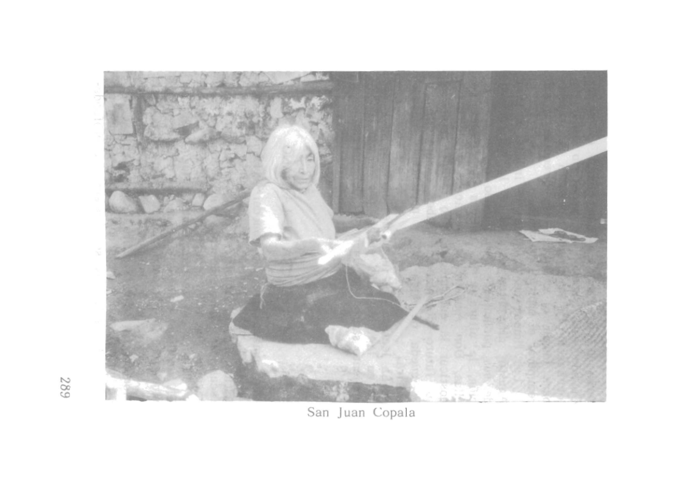
سان خوان كوبالا.
قراءة الكف
عند مواجهة ظروف قصوى. وعندما يحدث ذلك، ينبغي معرفة مكان الحدث واتجاهه بدقة لإلقاء الكوبال في ذلك الاتجاه، واستعادة الروح المفزوعة بذلك.
تخبر ألسنة لهب الشموع دون أغوستين بتفاصيل مختلفة عن مرض مرضاه. وبحسب لونها وارتفاعها والشرر المتطاير منها، لا يستطيع تشخيص المرض فحسب، بل التنبؤ بمآله المقبل ومعرفة ما بقي للمريض من العمر وموعد موته.
ويجري قراءة نار الشموع في كنيسة القرية، لأنها إجراء مقدس وبالغ الدقة والحساسية.
قراءة الكف
قبل أسبوع من لقائي بدون أغوستين تعرضت لحادث سيارة. ووافق على استخدام قدراته في الرؤية لمعرفة أسباب الحادث. ولهذا جلسنا، هو وأنا، جنبًا إلى جنب. وضع المسن أصابع يده اليسرى ملامسة لجبيني وركز وهو يكرر صلوات. ثم سحب يده ورفعها كأنه ينتظر رسالة من السماء، بينما كان يركز بعمق عابس الجبين ومحدقًا
تشخيص الحادث
إلى الأمام، وإن كان في الحقيقة ينظر إلى داخل نفسه. ثم فتح يده وتأملها بانتباه، مظهرًا تعبيرات الموافقة ومصدرًا أصواتًا كأن ما يراه في راحته يؤكد له شيئًا.
تكرر تسلسل لمس الجبين ورفع اليد ثم تأمل خطوطها مرات عدة، حتى بدا أن دون أغوستين وصل إلى استنتاج عبّر عنه بلغة التريكي، وتُرجم لي.
وسأنقل فيما يلي تشخيصه لأنني أرى أنه يُظهر كثيرًا من رؤيته للعالم وتقنيته الشامانية.
«في الطريق الذي كنت تسير فيه كانت أرواح كثيرة ترغب في أن ترافقها. وكان ذلك سبب حادثك. كانت موجودة في الموضع الذي سقطت فيه، وحاولت انتزاع روحك من جسدك. لقد فزعت، وأتاح لها ذلك أن تقترب؛ هبطت إلى أسفل، لكنك ارتفعت عاليًا بعد ذلك، وهذا أبعدها. لذلك لن يحدث لك شيء بعد الآن؛ ستعيش طويلًا».
وعندما سألته كيف فك رموز علامات يده، أشار إلى راحته مبينًا عدة صلبان، وقال إن الله هو من يفعل كل شيء؛ فنحن البشر لا نقرر حتى ولادتنا، التي تأتي من أم وأب هما اللذان يقرران. وبالطريقة نفسها، فإن الله هو الذي قرر أن يمنحه قدرة «الرؤية» باستخدام يده.
وأشار دون أغوستين إلى خطوط عدة في خنصره، قائلًا إن فيها
سان خوان كوبالا
سان خوان كوبالا.
حضور دون أغوستين
الرسالة المتعلقة بمقدار «هبوطي» أثناء الحادث ومقدار «صعودي» حين تعافيت.
حضور دون أغوستين
بشعره الأبيض تمامًا ولحيته الشائبة ونظرته النافذة، يضحك دون أغوستين لأقل سبب، وتشع شخصيته كلها بإحساس من السلام والبراءة ينتقل إلى الآخرين، ويجعل حضوره والاتصال به ممتعين.
يبدو في سلام تام مع نفسه، ويثير قربه إحساسًا بالحنان والثقة. وبسبب حادثه يعرج ويمشي مستعينًا بعصا تضفي عليه مظهرًا نبويًا.
يسكن بيتًا خشبيًا على ربوة صغيرة في أطراف سان خوان كوبالا، يمكن منها رؤية القرية من أعلى في منظر رائع تؤطره الجبال، وتبدو فيه القبة الخضراء للكنيسة والأسقف القرميدية المحمرة للبيوت كضربات فرشاة في لوحة خلابة.
زوجة دون أغوستين تعالج أيضًا، وهي مسنة مثله. ويعيشان مع أسرتهما.
تركيز الانتباه الثاني
تركيز الانتباه الثاني
يمكن فهم ما يفعله دون أغوستين حين «يرى» خطوط كفّه ثم ينظر في أعماق نفسه كأنه ينتظر جوابًا أو رسالة، على أنه طريقة يركّز بها انتباهه الثاني وينشّط «صوت الرؤية»؛ والمجلد السادس من هذه السلسلة مخصص لشرح «صوت الرؤية».
كان إحساسي أثناء الإجراء أن دون أغوستين ينفذ إلى ذهني ليتقصى أعماقه، ويحصل بذلك على إجابة السؤال المتعلق بالحادث.
ويمكن تفسير هذا التقصي وفق النظرية السينترجية بأن الحقل العصبي لدون أغوستين فكّ ترميز الحقل العصبي للمؤلف، وتركيز عامله الاتجاهي بدقة على مكونات الحقل الفائق التي تتضمن محتويات مرتبطة بذكريات الحادث.
ومن الواضح أن ما سبق مجرد فرضية محدودة، لا تأخذ في الحسبان إمكانات أخرى، كتلك التي قد تنشأ من اتصال مباشر بمستويات أخرى من الواقع.
ومهما يكن، فقد أثبتنا في أبحاث مخبرية حديثة، انظر المجلد الخامس من هذه السلسلة، أن أنماط الارتباط بين نصفي الكرة الدماغية في دماغين تصبح متشابهة أثناء التواصل المباشر. وهذا يدعم احتمال أن يتمكن دون أغوستين من فك ترميز محتويات تجربة مرضاه من دون حاجة إلى التعبير اللفظي، وبمجرد
دون أغوستين من سان خوان كوبالا
دون أغوستين من سان خوان كوبالا.
دون أغوستين
دون أغوستين.
دون أغوستين من سان خوان كوبالا
دون أغوستين من سان خوان كوبالا.
بيت دون أغوستين
بيت دون أغوستين.
مراسم التطهير
التركيز بعد إقامة اتصال جسدي محدد معهم، هو لمس الجبين بأصابعه.
ومن ناحية أخرى، يمكن أيضًا فهم إجراء قراءة اللهب بوصفه تركيزًا للانتباه الثاني، باستخدام أداة ذات سينترجية عالية، كالنار، قادرة على مساعدته في فك ترميز دقيق للحقل الفائق والحقل العصبي لمريضه.
مراسم التطهير
يجري دون أغوستين إجراء العلاج أو التطهير في كنيسة القرية، ويتكون من سلسلة أفعال معقدة تبدأ بمباركة الشمعة، ودلك جبين المريض وصدره ومفاصله، المرفقين والركبتين، بها، مع الطلب من الله أن يعطي اللهب الذي سيُشعل لاحقًا إشارات دقيقة.
يُعطى المريض باقة زهور صغيرة ينبغي أن يضعها تحت فراشه. ثم يصعد دون أغوستين إلى مذبح الكنيسة بصحبة المريض، ويشعل الشمعة هناك، متأملًا اللهب وخصائصه بعناية فائقة.
وعندما يكشف أن روح المريض قد فزعت، يستخدم الكوبال ومشروبًا كحوليًا مقطرًا لتطهير الجسم. فيدلك الصدر والجبين
كنيسة سان كوبالا
كنيسة سان كوبالا.
التطهير أمام المجتمع
والظهر والركبتين بالمشروب الكحولي، ثم يبصق منه على الأجزاء المذكورة. وبعد ذلك ينقع الكوبال في المشروب ويلقيه في الجهات الأربع، مع التشديد على الجهة التي وقع فيها الحادث. ويدلك الجسم بالأعشاب أيضًا.
يجري التطهير في باحة الكنيسة أمام كل من يوجد هناك من أهل المجتمع، بمنتهى العفوية. ويراقب أطفال القرية المراسم كلها، ويسألونه من حين إلى آخر، فيجيبهم وسط الضحك أو بجدية متعاونة ووقورة.
يبدو أن التريكي يحترمون هذه المراسم، ويتعلم الأطفال الإجراءات في علاقة تعليمية جميلة، أجمل ما فيها عفويتها.
ويقول الأطفال إن دون أغوستين يتحدث مع الله عندما يتلو صلواته وهو ينظر إلى لهب الشمعة؛ فيومئ سعيدًا، مؤكدًا أن هذا بالضبط ما يفعله.
صفحة بيضاء
توضيح تحريري: هذه الصفحة بيضاء في النسخة الأصلية.
الفصل الخامس عشر
المصلّون المعالجون في ولاية غيريرو
صفحة بيضاء
توضيح تحريري: هذه الصفحة بيضاء في النسخة الأصلية.
المصلّون المعالجون في ولاية غيريرو
يدرك النصف الأيمن من دماغ الإنسان، بوصفه واقعًا، ما يعجز النصف الأيسر عن التعبير عنه لفظيًا. وتحدث هذه القدرة الإدراكية عادة أثناء النوم المتناقض، أي نوم حركة العين السريعة، لأن هذه الحالة تتضمن رفع الكبح عن النشاط القشري (كورسي كابريرا وآخرون، 1975).
ولا يبدو أن للإدراك حدًا، ويمكن تدريبه بواسطة إجراءات شامانية خاصة (كاستانيدا، 1984). وفي الشرق يؤدي استخدام تقنيات التأمل إلى نتائج مشابهة (غرينبرغ زيلبرباوم، 1987). ويستعين المعالجون بالصلاة في ولاية غيريرو بالأدعية والصلوات وبما يرونه في أحلامهم لتنمية قدرتهم على الإدراك، حتى يَعُوا من الواقع مستوياتٍ تحجب عنهم في العادة.
سأناقش في هذا الفصل رؤية هؤلاء الشامانات للعالم، وبعض تقنياتهم
سلسلة التوارث ورؤية العالم
والنتائج التي يحصلون عليها باستخدامها.
سلسلة التوارث
بحسب المصلّين المعالجين في ولاية غيريرو، ورثوا تقنياتهم عن أسلافهم ضمن سلسلة نسب غير منقطعة ترجع إلى عصور ما قبل الغزو الإسباني. وقد انتقلت الإجراءات التي سأصفها من الآباء إلى الأبناء، ومن الأجداد إلى الأحفاد.
رؤية العالم
يكرس المصلّون المعالجون أنفسهم لعلاج الأمراض بالاستعانة بـ«أرواح تائهة في الفضاء». وبحسبهم، عندما يموت شخص في حادث أو نتيجة شجار أو كارثة طبيعية، لا تغادر «روحه» الأرض، بل تبقى مرتبطة بها بلا منفذ، ولا تجد طريقًا للتطور يسمح لها بمغادرة حالتها «الهائمة». وترجع بعض حالات المرض إلى أفعال هذه «الأرواح الهائمة» في أذهان وأجساد أشخاص ضعفاء تعذبهم. وتتعطش «الأرواح التائهة» إلى ما كان يُشبع حواسّها أيام حياتها،
القرابين والأحلام
ويستفيد المصلّي المعالج من هذه الحاجة ليعقد صفقة معها مقابل شفاء مرضاه.
تُقام مراسم في أماكن خاصة، يقدم فيها التبغ والشوكولاتة والخبز الحلو وأكواز الذرة والمشروب الكحولي المقطر، ويذبح دجاجًا أو ماعزًا، ويشعل الشموع ويبخر بالكوبال، وقبل كل شيء يصلي. وفي مقابل هذه القرابين، يطلب من «الأرواح» أن تكف عن تعذيب ضحيتها وأن تساعده على شفائها. وفي بعض الحالات تُطلب هذه المساعدة لمرضى آخرين لا علاقة لهم بـ«الأرواح». ويؤمن المصلّي المعالج بأنه، إذا استُجيبت تضرعاته وقُبلت قرابينه، فسوف تتعاون «الأرواح» معه وتشفي المريض. وهو يعتبر قوة الأرواح أعظم من قوته، وكافية لشفاء أي مرض.
الأحلام
قد تستجيب «الأرواح» لطلبه وقد لا تستجيب. ويتوقف ذلك على ما إذا كانت القرابين المقدمة قد أعجبتها، وعلى صدقه وقوته الشخصية. وبحسب المصلّين المعالجين، ينبغي تقديم القرابين عند ملتقى نهرين، أو على الجبل بجوار صليب، أو في أماكن خاصة يخفون فيها أصنامًا صنعها أسلافهم قبل الغزو الإسباني.
وخلال مراسم التقدمة يتعرف المصلّي المعالج إلى وصول الأرواح.
قراءة دوران المقص
ويتجلى هذا التعرف بإحساس بالخوف والقشعريرة وملامسة جسدية غير مستحبة. وفي الليلة التالية للتقدمة يولي محتويات أحلامه عناية فائقة. فإذا حلم بأن المريض سيشفى، أو بأنه يتلقى مساعدة في رحلة ما، فسر ذلك علامةً على أن الأرواح قبلت قربانه وبدأت العلاج. وإذا حلم بشجار أو موت أو حادث، فسره علامة على أن قربانه لم يُقبل، ونذيرًا بتفاقم حالة مريضه أو موته. وأحيانًا تستولي «الأرواح» على المصلّي المعالج، فيضطر إلى طلب عون مصلٍّ أقوى منه ليقدم قربانًا ويصلي ويحرره.
هذه الممارسات شائعة بين المصلّين المعالجين في جبال غيريرو، وإن كانت توجد قرى تُستخدم فيها أكثر، مثل سان لوكاس التي يعيش فيها عدد كبير منهم. وتوجد اختلافات في الممارسات، ومن أبعد صورها اختلافًا ما يمارسه مصلٍّ مسن من قبيلة الأموسغو في كوستا تشيكا بغيريرو.
قراءة دوران المقص
يستخدم هذا المصلّي المعالج سلة قش صغيرة ومقصًا للتواصل مع «الأرواح». يجلس أمام مريضه ويبدأ عمله بطلب
النبض والبندول
العون من الله. ثم يأخذ ذراع المريض اليمنى، ويضع أصابعه على معصمه ليتحسس نبضه. وبحسبه، فإن النبض «يحدثه» عن المرض وأسبابه وآثاره، والله «يحدثه» عن العلاجات التي ينبغي أن يستخدمها. وفي هذا «الحوار» يطلب العون باستمرار وينتبه إلى أجوبة الله وأجوبة الدم. وبعد أن ينتهي من جس النبض، ينفخ المصلّي الأموسغي الهواء باتجاه ذراع المريض، صاعدًا من المعصم إلى الكتف والوجه. ويؤكد أن هذا الإجراء «يطهر» المريض. ثم يتحقق من تشخيصه، فيُخرج من حقيبة صغيرة مقصًا قديمًا صدئًا وسلة ضئيلة من الخوص. ويضع المقص مفتوحًا على شكل صليب فوق ظهر السلة، ويعاود الصلاة مركزًا كل انتباهه على أداة عمله. ومن حين إلى آخر يمسك السلة والمقص وينفخ عليهما «مطهرًا» إياهما.
ثم يغرز إحدى شفرتي المقص في السلة، ويسند حلقتيه بالإصبع الأوسط من كل يد. فيبني بهذه الطريقة ما يشبه بندولًا قادرًا على الدوران يمينًا أو يسارًا، مستندًا إلى أصابعه. يصلي لبندوله ويطرح عليه الأسئلة. وعندما تكون الإجابة بالإيجاب، يدور البندول فجأة إلى اليسار، حتى إنه يفقد سنده. أما عندما تكون الإجابة
الأعشاب والتدليك
بالنفي، فيبقى البندول ساكنًا. ويجري المصلّي المعالج «تطهيرًا» لأداته بالنفخ عليها بعد كل سؤال، ويصلي لها في بداية السؤال التالي. ويقيم حوارًا مع مريضه، يطلعه فيه على النتائج بشرح الإجابات التي حصل عليها، ويطلب منه بيانات تستكمل التشخيص.
الأعشاب والتدليك
مع أن اختصاصهم هو الصلوات وإجراءات الاتصال بـ«الأرواح»، إلى جانب القرابين والأحلام، فإن بعض المصلّين المعالجين يستعينون أيضًا بأعشاب يجعلون مرضاهم يتناولونها على هيئة منقوع، وبالتدليك أو «الدعك». وفي هذه الإجراءات الأخيرة، يحدد المعالج المنطقة المصابة من الجسم ويضع أصابعه عليها، محاولًا إذابة «الكرات» الموجودة فيها. ويؤكد المدلكون الخبراء قدرتهم على تفكيك هذه «الكرات» وتخفيف معاناة مرضاهم بذلك.
الاستنتاجات
يمارس المصلّون المعالجون في ولاية غيريرو نظامًا علاجيًا يبدو أنه نشأ منذ قرون، على الأرجح
الاستنتاجات والمراجع
في عصور ما قبل الغزو الإسباني. وقد تمكنوا من خلال تدريب خاص من تطوير قدراتهم الإدراكية والحلمية على نحو استثنائي. وتقوم رؤيتهم للعالم على الإقرار بوجود كائنات روحية يتواصلون معها ويعقدون تحالفات معها.
ومع عدم وجود دراسات فسيولوجية لنشاطهم الدماغي، فمن المحتمل أنهم طوروا قدرة على فك ترميز نشاط نصف الدماغ الأيمن بدرجة غير معروفة للعلم. وتُستخلص استنتاجات مشابهة من دراسات شامانات ولاية موريلوس ومناطق أخرى في المكسيك؛ انظر المجلدات الأخرى من هذه السلسلة.
المراجع
كاستانيدا، ك. 1984. «النار الداخلية» (El Fuego Interno). إيديفيسيون، المكسيك.
كورسي كابريرا، م.؛ غرينبرغ زيلبرباوم، خ.؛ وأرديتي، ل. س. 1975. «تؤدي إصابة النواة المذنبة إلى زيادة انتقائية في نوبات النوم المتناقض لدى الجرذ» (Caudate nucleus lesion selectively increases paradoxical sleep episodes in the rat). مجلة Physiology and Behavior، المجلد 14.
غرينبرغ زيلبرباوم، خ. 1987. «التأمل بالإحالة إلى الذات» (Meditación Autoalusiva). INPEC، المكسيك.
صفحة بيضاء
توضيح تحريري: هذه الصفحة بيضاء في النسخة الأصلية.
الملحق
محضر اللقاء الأول للمعالجين التقليديين في سييرا تاراهومارا العليا
المركز التنسيقي لشؤون السكان الأصليين في تاراهومارا
غواشوتشي، تشيهواهوا
من 20 إلى 22 نوفمبر 1987
صفحة بيضاء
توضيح تحريري: هذه الصفحة بيضاء في النسخة الأصلية.
تقديم المشاركين
نعيد فيما يلي نشر مقتطفات من محضر اللقاء الأول للمعالجين التقليديين في سييرا تاراهومارا العليا، الذي نظمه المركز التنسيقي لشؤون السكان الأصليين في تاراهومارا، التابع للمعهد الوطني لشؤون السكان الأصليين، بهدف جمع المعالجين التقليديين في المنطقة للحوار وتحليل نقاط مختلفة تتعلق بعملهم العلاجي.
الجمعة 20 نوفمبر
تقديم المشاركين
ماريانو فينتورا: «عمري 55 سنة، وجئت من مجتمع أويبو. أعمل أوغيروامي منذ نحو خمس سنوات. جدتي هي التي نقلت إليّ المعارف
شهادات المشاركين
التي أمتلكها الآن، تحسبًا لوفاتها. أعالج الأطفال أساسًا بالتيسغوينو والأعشاب والدواء. وأتقاضى مبلغًا من المال مقابل خدماتي».
تيريسا مارتينيس: «أنا من مجتمع أويبو، وعمري 44 سنة. نقلت إليّ جدتي وأمي هذه المعارف. أمارس العلاج الروحي منذ أربع سنوات، ولا أعتني إلا بالأطفال. أستخدم التيسغوينو في العلاج، وعندما لا تكون لديّ القوة الذهنية الكافية أعطي بعض الأعشاب. لم يتوفَّ أي طفل تحت رعايتي».
إيسيدورا أولغين كروس: «أعيش هنا في غواشوتشي وعمري 58 سنة. اكتسبت المعارف من أمي، وأعمل في هذا المجال منذ خمس عشرة سنة.
لم أعلن قط أن لديّ هذه القوة، بل المجتمع هو الذي أدرك ذلك. أعمّد الأطفال حديثي الولادة، وأعالج عمومًا بالنباتات. ويكون المقابل طعامًا، ولا آخذ مالًا لأن ذلك غير مسموح».
فيديريكو غونزاليس فاليريو: «أنا من مجتمع كوساراري، وعمري 68 سنة، وأعالج منذ خمس عشرة سنة. اكتسبت المعارف بإلهام من الله وحده. أعالج بالأعشاب وبشراب من الأغاف لكيلا يأتي الشيطان، وأستخدم الأدوية أحيانًا. ويكون المقابل تيسغوينو وطعامًا».
ماريانو سانتياغو: «عمري 46 سنة، وجئت من مجتمع كوساراري. أعالج منذ سبع عشرة سنة. أنا معالج روحي وأعتني بحديثي الولادة، أي بالتعميد. وأعالج أيضًا بالأعشاب والأدوية، ويكون المقابل طعامًا: لحمًا وذرة وتاماليس
شهادات المشاركين
وتورتيّا ومرقًا».
غوادالوبي راميريس: «أعمل معالجًا منذ ثماني سنوات، وعمري 66 سنة، وأنا من مجتمع كوساراري. أعالج الأطفال والكبار وأعمّد حديثي الولادة. ظننت أن لديّ قوة، ومنذ ذلك الحين أعالج. ويكون المقابل طعامًا أو ما يقدمونه لي».
ماريا سوسانا: «أنا معالجة روحية، ولا أعالج إلا الأطفال. أنا من مجتمع كوساراري، وعمري 65 سنة، وأعمل معالجة منذ 25 سنة. أستخدم الأعشاب أحيانًا. اكتسبت المعارف من زوجي. وأتلقى الطعام مقابل عملي».
فيرخينيا بوستيوس يانيِس: «أنا من مجتمع كابوراتشي، وعمري 48 سنة، وأعالج منذ ست سنوات. لا أعالج إلا هبوط اليافوخ. نقل إليّ إخوتي المعارف، ولا أتلقى مقابلًا إلا الطعام».
ماريا سانتا روسا: «جئت من مجتمع كوساراري، وعمري 37 سنة، وأعالج منذ عشر سنوات. أنا معالجة روحية، واكتسبت المعارف من والديّ. والمقابل الذي يقدمونه لي هو الطعام».
غوادالوبي روسا بلاسنسيا: «أنا من مجتمع كوساراري، وعمري 37 سنة. أعالج الأطفال والكبار منذ ست سنوات بقوتي الخاصة. أنا معالجة روحية، وأستخدم الأعشاب أحيانًا. ولا أتلقى مقابلًا إلا الطعام».
أمبروسيا كارو مورينو: «جئت من مجتمع أغوا ساركا، وعمري 75 سنة. بدأت العمل قابلةً منذ خمسين سنة. تعلمت المعارف وحدي، وأعتني الآن بمن يحتاجون إليّ. وأجبر
شهادات المشاركين
العظام أيضًا. لم أتقاضَ مالًا قط، وكان المقابل دائمًا طعامًا».
فيلومينا روسا: «أنا من مجتمع كوساراري، وعمري خمسون سنة، وأعمل في الخدمة منذ عشر سنوات. اكتسبت المعارف من أبي. أنا معالجة روحية وأعالج الأطفال والكبار. ولا أتلقى مقابلًا إلا الطعام».
ماكلوفيو مورينو: «عمري 52 سنة، وجئت من مجتمع كابوراتشي. أعمل معالجًا منذ ثلاثين سنة. اكتسبت المعارف بنفسي عن طريق الأحلام. وأعمّد حديثي الولادة أيضًا، وأستخدم الأعشاب في علاجاتي، وأتلقى المال والطعام مقابلًا».
كاليكستو كينتيرو سالميرون: «عمري 68 سنة، وجئت من مشاع بوروتشي الزراعي، في بلدية أوريكي. أعالج الأطفال والكبار منذ ثلاثين سنة. سأحدثكم كيف اكتسبت قوة العلاج: كان عمري عشر سنوات عندما مرضت في تيموريس. كنت قد قضيت نحو شهر حين جاءني رجل عجوز، وكان يحمل كأسًا وزجاجة صغيرة وحجرًا مرقطًا صغيرًا؛ وبهذه الأشياء يعالج الشيخ، مانحًا الشخص المريض قوة العلاج. وفي تيموريس كانت هناك سيدة اسمها ماريا خوانا فرياس، كانت نينيّا لي، ولم تتركني آنذاك. وكانت نينيّا خوانا يومئذ تومئ برأسها، فاستيقظت ورأيت النور، وانفتحت السماء. شعرت بأنني لم أكن نائمًا شهرًا، وكنت أكاد أموت، وكنت في حال خطرة. والحمد لله أنني أعيش مرتاحًا أعالج وأجري العلاجات، لأن الرب أمرني بذلك. أؤمن بالله وبأمي العذراء مريم الكلية القداسة،
توضيح تحريري: حُفظت لفظة «نينيّا» كما وردت في هذه الشهادة الشفوية؛ المقصود الدقيق بالعلاقة غير واضح في النص.
شهادات المشاركين
وإليها أتضرع.
أعالج بالأعشاب، ولي شفيعان: الوردية المقدسة والقديس مارتين الفارس من غواسافي. يعطونني مقابلًا ما يشاؤون، وأحيانًا يعطونني مالًا».
ماوريسيو أولغين بوستيوس: «أنا من مجتمع كابوراتشي، وعمري 61 سنة. أعتني بالمرضى منذ عشرين سنة باستخدام المشروبات، وأعالج هبوط اليافوخ. ينبغي رعاية الروح كيلا يمرض المرء ولكي يبتعد الشيطان عن الأسرة. المسيح شفيعنا في العلاج، ونستخدم الصليب لحماية أنفسنا. أتلقى أشياء ذات قيمة مقابلًا، وأبي الله لا يريدنا أن نفرض أجرًا. والمجتمعات تحترمنا كثيرًا».
برنابي كينتيرو: «عمري 58 سنة، وأنا من مجتمع كوساراري. كانوا يعالجوننا منذ صغرنا بالنباتات والأعشاب، وأنا أعرف الآن أكثر لأنني أجرب على نفسي لأعالج نفسي. أعرف عدة نباتات وأعالج في نطاق الأسرة، وأقدم النصائح أحيانًا. ينبغي أن يكون للمرء قديس يتخذه شفيعًا كي يستطيع العلاج».
فينتورا بالما غيفارا: «أنا من مجتمع أويبو، وعمري 28 سنة. ما زلت في بداية تعلم العلاج بالنباتات».
سانتوس أرمينداريس: «عمري 65 سنة، وأنا من مجتمع كابوراتشي، ولي ثلاثون سنة من الممارسة الطبية. اكتسبت المعارف من شخص ليس من أسرتي. أنا معالج روحي. والمقابل الذي أتلقاه مال».
سيلفيريو بوستيوس: «عمري 55 سنة، وأنا من مجتمع كابوراتشي. أمارس العلاج الروحي منذ خمس عشرة سنة، وأستخدم أحيانًا
تخصصات الطب التقليدي في تاراهومارا
الأعشاب للعلاج. اكتسبت المعارف من أمي، وأتلقى المال والطعام مقابلًا».
ثم عرض المشاركون تقسيمهم لاختصاصات الطب التقليدي عند التاراهومارا:
1. الأوغيروامي، أو المعالج الشعبي: مهمته علاج الأمراض المختلفة. يستخدم النباتات الطبية، ويحتاج إلى قديس شفيع يساعده في العلاج.
2. السوكوروامي: يجعله تحكمه بالقوى الخارقة للطبيعة خطرًا على نحو خاص، إذ يمتلك القدرة على إحداث أمراض خطيرة، سواء لمصلحته الخاصة أو بطلب من أفراد يرغبون في الإضرار بغيرهم.
3. المعالج الروحي أو الروحاني: يتولى أيضًا استعادة الصحة حصرًا، لكنه لا يمتلك القدرة على إحداث الأذى أو الشرور.
4. الراسبادور، أي «الحاكّ»: يعالج هذا المختص بقوة البيوتي، ولذلك يسمى «بيوتيرو». يستخدم صليبًا، ويجري علاجاته في مكان بعيد عن مسكن المريض. وتذبح أسرة المريض حيوانًا لإطعامه وإطعام الحاضرين الآخرين؛ ولهذا يفصلون رأس الحيوان، الذي ينبغي أن تكون له قرون، ويعلقونه على الصليب مع مرآة أو اثنتين. ويجب أن يجري العلاج ليلًا، وقرب منتصف الليل ينبغي أن يظهر وجه في المرآة، يُفترض أنه الشيطان الذي دخل جسم المريض. ومنذ تلك اللحظة يبذل البيوتيرو جهدًا هائلًا
مراسم العلاج والتيسغوينو
لإخراج هذا الشيطان من جسم المريض، وتبدأ تغيرات العينين والتعرق بالظهور على البيوتيرو وعلى المريض أيضًا. ومن المهم أيضًا ذكر أن على أفراد الأسرة تنظيف الباحة في شكل دائرة قبل العلاج، وأن يصحب البيوتيرو موسيقي يعزف موسيقى غامضة طوال العلاج. ويستمر العلاج الليل كله، من الثامنة مساء إلى السادسة صباحًا. وينبغي ذكر استخدام أوعية التيسغوينو وقلائد تحمل صليبًا، وأنه لا يجوز لأي شخص دخول الدائرة إلا الشخص أو الأشخاص الذين سيُعالجون.
وعند انتهاء العلاج يسلم البيوتيرو جميع الأدوات التي استخدمها فيه.
يرسم البيوتيرو علامة الصليب على المرضى، فيقولون له «ماتيترابا»، أي شكرًا.
أما عند المختصين الآخرين، فيرافق علاج كل علة نمط معين من السلوك. ويقتضي طلب تولي الأوغيروامي الحالة أن تبدأ في البيت الاستعدادات لصنع كمية غير محددة من «التيسغوينو»، وهو شراب من الذرة المطحونة والمخمرة. ويستدعي هذا الإبلاغ زيارة أولى من الأوغيروامي للمريض وفحصه. ولأن تحضير التيسغوينو يتطلب عدة أيام، يشير الأوغيروامي في حالات كثيرة إلى ضرورة أن «يحلم» بالعلاج. ويؤدي الحلم وظيفة «إنارة» المختص؛ وهو يقرر عمومًا ممارسة
أنواع الأمراض
العلاج لأنه «حلم» بأن عليه فعله. وما إن يصبح التيسغوينو جاهزًا للشرب حتى تُجرى المرحلة الأساسية من علاج المريض. يستخدم الأوغيروامي وعاءً صغيرًا من التيسغوينو، وإناءً فخاريًا صغيرًا فيه ميسكال منقوع، أي الجزء الأبيض أو الطري من أسفل النبات، وصليبًا لإجراء علاجاته. ويتلقى مقابلًا عادة ممتلكات، كالأغنام والجلود والبطانيات الصوفية، وطعامًا، والمال على سبيل الاستثناء.
وتم التوضيح أن هذه الجوانب ستُبحث بتفصيل أكبر لاحقًا.
وحُللت أيضًا أنواع مختلفة من الأمراض، وهي:
أ) الأمراض الطبيعية: تضم هذه المجموعة بعض الأمراض التي ينسب الرأي السائد منشأها إلى تأثير عوامل معينة في جسم الإنسان.
1. ريبيويري: تأثير دوامة من الريح في جسم الإنسان.
2. ريساغي: يحدث المرض عندما يدخل الجسم عن طريق الفم نوع من الذباب الصغير أو البعوض يعيش في الماء.
3. روروسي: تنشأ العلة من دخول دودة صغيرة صفراء اللون إلى الجسم عبر الجلد، تعيش في المستنقعات «باخيتشي» أو البرك أو مساقط المياه.
ب) الأمراض الخارقة للطبيعة: أمراض هذا النوع هي فعل ظواهر غير قابلة للتفسير وغير
مفهوم الصحة والمرض
مادية في الجسم، بفعل عوامل تُعد محاطة بالغموض والقوى الخارقة للطبيعة.
1. ماخاريكي «الفزع»: ينتج من انفعال، وخصوصًا الخوف؛ وقد يظهر أيضًا بسبب عدم معرفة المكان أو الأشخاص، مما يؤثر في روح الفرد.
2. روسيواري: ينتج هذا المرض من الاتصال بكائن يشبه ضفدعًا صغيرًا في شكله وحجمه. وهذا العامل المسبب للمرض شديد الخطورة، ويُعرَّف إما بأنه حيوان حي، أو حجر على هيئة ضفدع يخشاه السكان الأصليون ويتجنبونه.
3. كوريماكا: تجتمع في هذه العلة مفاهيم سحرية شائعة جدًا. وقد يكون العامل المسبب: أ) طائرًا صغيرًا يطير ليلًا ويعيش عادة عند مساقط المياه؛ ب) سقوط شهب؛ ج) يكتشف الطائر ضحيته ويؤثر فيها عندما تستريح مستلقية على ظهرها في الخارج.
تعريف مفهوم «الصحة ـ المرض»
يعرض كل معالج تفسيره لمفهوم الصحة والمرض، ويُجرى تحليل موجز كما يلي:
المرض
— المريض هو مَن يعاني ألمًا، أيًّا كان نوعه.
— يُميَّز في العينين.
علامات المرض والصحة
— يبدو الشخص المريض حزينًا جدًا، ولا يتغذى، ويبدو شديد الشحوب.
— ينبض القلب بطريقة مختلفة عند المرض.
— يبدو الشخص مختلفًا عندما يمرض.
— يُلاحظ المرض عليهم، فهم يتأوهون، وينبغي البحث عن موضع الألم.
— المرضى لا ينامون ليلًا ولا يشربون ولا يرون جيدًا.
— لا رغبة للمريض في شيء، ويكون منزعجًا وغاضبًا. والطفل لا يرضع، ويكون كثير البكاء مضطربًا.
— أحيانًا يكون الشخص مريضًا لأن الشيطان داخل جسمه.
— يكون نبض المريض وقلبه مضطربين؛ فلا القلب يعمل ولا الشخص.
— يرتجف جسم المريض في موضع العلة.
— يفحصه بقصبة عندما يكون المرض في الصدر أو الرأس، ويمصّ الموضع بالقصبة ويحلم، ويعالج عن طريق الروح.
— يراه روحيًا في الأحلام أنه مريض.
— المصاب بهبوط اليافوخ لا يستطيع الأكل، وتكون عيناه غائرتين، ولا يغمضهما أثناء النوم، وقد يظهر المرض في أي عمر.
الصحة
— يبدو الشخص السليم مبتهجًا وسعيدًا جدًا.
— يبدو الشخص في حال جيدة جدًا عندما يكون
الصحة وتصور جسم الإنسان
سليمًا.
— تكون روحه كلها داخل جسده، مكتملة، ويتحدث ويأكل جيدًا.
— يقول بنفسه إنه أصبح بخير، ويشكره.
— الشخص السليم يمزح ويزور أقاربه.
— يشكر الشخص الذي عالجه لأن روحه أصبحت بخير، ويطلب منه ألا يعود الشيطان فيؤذيه مجددًا.
— الصحة هي أن ينبض القلب جيدًا.
— يرى في الأحلام أنه بخير.
بعض الآراء
يمتلك المعالجون التقليديون القدرة على إخراج الشيطان من أشخاص آخرين ليسوا من الراراموري.
— يوافقون على عقد لقاءات مع معالجين تقليديين من ولايات أخرى.
وصف تصور جسم الإنسان
— عندما يكون الشخص مريضًا تكون الروح خارج البيت، ويُبحث عنها في الأحلام وتُعاد إلى جسم المريض كي يتحسن.
— نحن مجرد صندوق مشكَّل، وداخل هذا الصندوق توجد الروح التي تمنحه الحياة.
— عندما تكون الروح في الخارج تذهب إلى أشخاص آخرين.
— عند هبوط اليافوخ تظهر بُثور في سقف الفم، وعند إخراجها يموتون.
الروح وحركة الجسم
— إذا لم يُعثر على الروح يموت المريض.
— تعمل الروح والذهن والدم معًا.
— تمنح الروح الحركة للجسم كله، وعندها نكون بخير وأصحاء.
— يمتلك المعالجون قوة بشرية أعطاهم إياها الله، ويرعون الأشخاص الذين لا يمتلكون قوة؛ ولهذا يستخدمون الصليب والتيسغوينو ليحتفظوا بهذه القوة.
ما الذي يجعل الروح تتحرك؟
في الحمل تكون الروح موجودة بالفعل داخل الجسم؛ وخلال عملية الحمل يكون في داخله روحه، وللأم روحها. والذي يمنح الروح الحركة هو الرب. والرب الإله يسير مع الصليب. ويترافقان مترابطين في الأحلام، روحيًا، وبهذه الطريقة يجريان العلاج.
السبت 21 نوفمبر
بعض الآراء في موضوع اليوم السابق
— لا يمكن أن تنتقل روح المعالجين إلى جسم آخر، لأنهم لن يمتلكوا القوة الكافية ليلًا، ولن تكون لديهم قوة للدفاع عن أنفسهم ضد الأمراض.
— تميز الروح الألوان، وترى أيضًا كما لو كانت حية.
— يستطيع الطبيب الذي يمارس الطب الحديث اكتساب القوة،
أسباب الأمراض الأكثر شيوعًا
لكن عليه أن يعيش في عالمهم ويترك سياقه وطريقة حياته.
خلال اللقاء يساهم عدة معالجين بمعارفهم لإجراء العلاجات، ولا غيرة ولا حسد بينهم. ويوجد أيضًا تبادل للمعارف وتآلف بين المجتمعات لإجراء علاجاتهم.
وصف أسباب الأمراض الأكثر شيوعًا
أبدى كل معالج رأيه في أسباب هذه الأمراض. وفيما يأتي خلاصة ما قالوه:
| المرض | السبب |
|---|---|
| 1. الفزع | خوف مفاجئ أو حادث. |
| 2. السخونة | الخوف المفاجئ. |
| 3. الحمى | الخوف المفاجئ. |
| 4. هبوط اليافوخ | الحركات العنيفة والسقوط وسوء رعاية الأطفال. |
| 5. الصداع | التغيرات المناخية. |
| 6. ألم المعدة | تحميل المعدة أكثر من طاقتها. |
| 7. الإسهال | الخوف المفاجئ والطعام الملوث. |
| 8. ألم القلب | يلتهب بفعل الريح، ويفتقر إلى الصحة، ويوجد تعب. ويصبح حارًا بفعل الشمس. |
| 9. الكسور | السقوط. |
أسباب المرض وخروج الروح
| المرض | السبب |
|---|---|
| 10. السل | الجوع، والعدوى من شخص إلى آخر في تجمعات شرب التيسغوينو. |
| 11. ألم الجسم | الريح؛ ولا يُشفى بأي شيء. |
| 12. ألم الحلق | التغيرات المناخية. |
| 13. ألم الأضراس | السبب غير معروف، وهؤلاء المرضى لا يلجؤون إلى الأوغيروامي. |
— تكون أرواح المصابين بهذه الأمراض خارج أجسادهم.
— لعلاج هبوط اليافوخ يلزم شخص واحد للأطفال وشخصان للكبار.
— عندما يشتد المرض ولا يستطيع الأوغيروامي علاجه، لا يوجد علم سيشفيه، ويموت المريض.
إذا حللنا ما قيل في الاجتماع، أمكننا أن نستنتج أن أسباب الأمراض قد تكون طبيعية أو خارقة للطبيعة.
— يذكر المعالجون التقليديون أن أرواحهم قادرة على الخروج من أجسادهم، لأن أرواحهم وأجسادهم تعالج كوحدة واحدة. وتخرج الروح ليلًا لمحاولة إنقاذ روح المريض، فتصارع أرواحًا أخرى لكيلا تأخذ روح المريض.
نباتات وحيوانات ذات خصائص علاجية
نباتات وحيوانات ذات خصائص علاجية
عرض معالجون من بعض المجتمعات عينات من النباتات الطبية. وفيما يأتي ما ذكروه عن استعمالاتها:
1. إستافياتي: يفيد في علاج أمراض المعدة. تُجمع أوراقه أو جذوره في أكتوبر، ويبقى عامًا، ويُشرب كالشاي.
2. إيباسوتي: يُغلى مع عشبة الظربان، ويفيد في علاج أمراض المعدة وتسريع الولادة أيضًا. يُجمع في أكتوبر، ويبقى عامًا، ويُشرب كالشاي.
3. ليتشوغيّاس أو تشوكاكا: يُجمع في أي وقت من السنة، طوال العام، ويفيد في ألم المعدة، ويُشرب كالشاي.
4. المسكيت: يفيد في السخونة. يُشترى في الوادي السحيق، لأنه لا يُجمع في الجبال.
5. ماتاريكي: يفيد في ألم الجسم والسعال، ويستخدم للروماتيزم أيضًا. تُجمع الأوراق والجذور في سبتمبر وأكتوبر، ويُشرب كالشاي.
6. رعي الحمام: يفيد في الرضوض؛ يُوضع كلَبخة أو يُغسل به الجرح. تُجمع الأوراق في أكتوبر.
7. بابونج النهر: يفيد في الإسهال، ويُشرب مغليًا كالشاي إلى أن يتوقف الإسهال. تُجمع الأوراق والأزهار والساق خلال الصيف والخريف.
8. أسارفا أو خشب أوكوتيّو: يفيد في الفزع،
قائمة النباتات الطبية
والصداع وألم الأضراس. يُجمع في مواسم الجفاف حين لا تمطر، ويُكشط ويُستخدم مع الشحم.
9. شوكة الأغاف: تفيد في استخراج الأشواك، وتُجمع في كل فصول السنة.
10. عشبة الظربان: تفيد في الطفيليات.
11. سوغيتيواري: يفيد في الضربات والسخونة أو يُستخدم كلصقة. يُجمع الجذر في أغسطس.
12. عشبة الهندي: تفيد في علاج الإسهال، وتُشرب كالشاي.
13. بيونيا: تفيد كمسهّل، ويُجمع جذرها في سبتمبر.
14. بابيسا: تفيد في التخمة. يُستخدم الجذر ويُتناول كماء أو مثل البينولي.
15. عشبة عود الثقاب: تفيد في علل التبول.
16. توخو الصنوبر: يفيد في السعال كمشروب، ويُجمع في أي وقت، ويؤخذ من الصنوبر الأبيض أو التنوب.
17. كارناغوالا: يُجمع في سبتمبر أو أكتوبر، ويُغلى ويُشرب كالشاي. يفيد في ألم القلب.
18. غواتشيويغواري: يُجمع قبل تساقط الثلج، ويفيد في السخونة. يُخلط بالجير ويُطحن، ويوضع كله على الجسم كلَبخة أو يُفرك به.
19. عشبة الضرس: تفيد في ألم الأضراس؛ تُطحن بالماء وتوضع على الضرس. يُستخدم الجذر، ويُجمع في أي وقت من السنة عند اكتمال القمر.
20. عشبة البابونج: تفيد للكلى، وتُشرب كالشاي أو توضع كلصقة. تُجمع في أي وقت من السنة.
قائمة النباتات الطبية
وتُستخدم أوراقها وسيقانها.
21. توخو البلوط: يفيد في الزكام، ويُشرب كماء أو كشاي.
22. خشب غوريّو: يفيد في السخونة الداخلية، ويُشرب كالشاي، ويُجمع طوال السنة.
23. سيريكي أو سوتول: يفيد في الفزع؛ يُمرر على الرأس عدة أيام. ويُجمع طوال السنة.
24. روبوينوري: يفيد في الحمى، ويوضع حول جسم المريض. تُستخدم أوراق الأشجار، وتُجمع حين تكون الورقة بيضاء، ويُشرب كالشاي.
25. تشوكاغا: يفيد في الأمراض التناسلية والبثور، ويُشرب كماء أو كشاي. يُستخدم النبات كله ويُجمع طوال السنة.
26. سيتاكابي أو براسيليو: يفيد في اليرقان، ويوجد في الوادي السحيق، ويُشرب كالشاي. وفي حمام صباغة يفيد في تلوين صوف الخراف. يُجمع طوال السنة، ويُستخدم الجذع، ويستعملونه أيضًا لمباركة الأرض.
27. أونفا: يفيد في ألم الرأس والصدر والقلب. يُستخدم للغسل. ويُجمع الجذر في سبتمبر.
28. غوردولوبو: يفيد في علاج ألم المعدة.
29. تونينو أو ذيل البغل: يفيد في الإسهال. يُستخدم الجذر، ويُجمع في سبتمبر، ويُشرب كماء يومي أو كشاي. ويُستخدم أيضًا في الكمادات ويوضع كلَبخة.
30. ماتاريكي: يُستخدم للروماتيزم وتنظيف المثانة. يُستخدم الجذر ويُجمع في سبتمبر.
قائمة النباتات الطبية
31. سانتا روسا وعشبة اليانسون: تُستخدم للإسهال، وتُستخدم الأوراق والأزهار والساق.
32. غواسيّا أو تشيروباتي: يُستخدم الجذر لالتهاب المعدة وضيق النفس. يُجمع في سبتمبر، ويوجد في الظل.
33. تيبوسانا: يفيد في البثور؛ تُستخدم الورقة للجروح وتوضع كلصقة.
34. زهرة الجبل أو المشط: تفيد في تنظيف المثانة. تُستخدم الأوراق والأزهار والساق، وتُجمع في سبتمبر.
35. عشبة الراعي: تفيد مع الزيت كمسهّل؛ تُغلى وتُعطى على الريق كل عشرة أيام. وتُستخدم الأزهار والساق والبذور.
36. أنيسيّو: يُستخدم كشاي ويفيد في الزحار. تُستخدم الأزهار والأوراق والساق، وتُجمع في سبتمبر.
37. كوتشانا: تفيد في القرحة والضربات والأمراض التناسلية.
38. بورتشونيرا: تفيد في تنظيف الكلى مع «صوف الحجر». يُجمع الجذر في سبتمبر.
39. عشبة الظربان: تفيد في التخمة مع البابيسا. تُشرب كالشاي، وتُستخدم الأزهار والساق والبذور، وتُجمع في سبتمبر.
40. شعر الذرة أو لحيتها: يفيد في تنظيف المثانة مع بابونج الحقل. يُجمع وقت الحصاد.
41. الأوريغانو أو ناباكا: يفيد في أمراض الكبد. تُستخدم الأوراق والأزهار والساق، ويُشرب كالشاي. ويُستخدم أيضًا لغسل الجروح ويوضع كلصقة.
42. كورونيا: يُستخدم الجذر، ويفيد في أمراض الرئتين وألم
ختام قائمة النباتات والممارسات المساعدة
الجسم والسل الرئوي والدوالي. يُجمع في سبتمبر.
43. بابونج الحقل: يفيد في البثور العميقة. تُستخدم الأوراق والأزهار والساق؛ تُهرس وتوضع كلصقة. ويُجمع في سبتمبر.
44. ويباكا: نوع من التبغ يعالج أمراضًا كثيرة، ويعتبرونه مقدسًا.
45. باكاناري: نوع من التبغ، عطري، يفيد في السعال وألم القلب وألم الأضراس، ويعالج أمراضًا كثيرة لدى الأطفال. ويعتبرونه مقدسًا.
الأحد 22 نوفمبر
الممارسات الطبية المساعدة للعلاج «المعالجات»
1. هبوط اليافوخ.
أ) — يمكن إجراؤه في أي وقت.
— يُجعل الرأس إلى أسفل، ويُهزّ، ويُدخل الإصبع الأوسط إلى الحنك لرفع اليافوخ، ويُمسك الطفل من عقبيه.
— يمكن إجراء هذه الممارسة مرات عدة تبعًا لحالة المريض.
— عندما يجف اليافوخ بشدة، ينفجر ويموت المريض.
— لذلك ينبغي إجراء هذه الممارسة فورًا.
— تُجرى بالطريقة نفسها للكبار، لكن ينفذها شخصان.
هبوط اليافوخ والتعميد
— هو أكثر شيوعًا عند الأطفال، لأن البالغ يتحمل أكثر وتكون مقاومته أكبر.
— عندما تكون المرأة حاملًا وتشرب التيسغوينو ثم تسقط، قد يولد الطفل بيافوخ هابط.
ب) — يُغلى شراب من بابونج قشتالة، ويُجرى المصّ بهذا الشراب، وعلى المريض أن يشربه.
— ينبغي خفق بيضة حتى تصبح رغوة، وتُستخدم كلصقة.
— يُفعل ذلك ثمانية أيام.
— يُدخل الإبهام إلى الحنك، وأحيانًا يُستخدم الزيت لإجراء العلاج.
— يتعرض الشخص لحادث فيهبط اليافوخ.
— ينبغي الاستمرار في هذه الممارسة ثلاثة أيام حتى يستوي ويكتمل؛ توضع لصقة ومرهم فيكس فابوراب لكي يمتص عدة مرات، ويُدخل الإبهام إلى الحنك لرفع اليافوخ.
— توجد حفرة صغيرة في الحنك، ولا توجد نبضات ولا يتنفس.
— بعد العلاج تبدأ النبضات ويصبح الطفل سليمًا.
2. التعميد.
— يُجرى من عمر أسبوع إلى شهر بعد الولادة.
— يُجرى لكيلا يمرض الطفل، ولكي ينمو بخير وصحة.
— من لا يُجرى له التعميد، فإن
التعميد وممارسة طبية أخرى
الشخص يمرض أكثر، ولا يسير على نحو صحيح، ويكون سلوكه سيئًا لأنه ليس مع الرب.
— يمكن إجراء هذه الممارسة لاحقًا لكيلا يمرض، عند عمر ستة أشهر أو سنة.
— تتمثل الممارسة في تجمع لشرب التيسغوينو، مع شمعة مشتعلة من الأوكوتي أو الأوكوتيّو تُمرر فوق الرأس على شكل صليب.
— لديهم الصليب منذ وجود أول إنسان من تاراهومارا، أي منذ زمن طويل قبل غزو الإسبان.
— ينبغي نقل معارفهم إلى أبنائهم وأحفادهم.
— ينبغي تعلم اللغتين، لكي يواصل أحفادنا التحدث والحفاظ على عاداتنا التاراهومارية.
3. ممارسة طبية أخرى.
— لإجراء العلاج ينبغي أن يصاحبه وعاء صغير من التيسغوينو، وفوق هذا الوعاء صليب «واري»، وبينولي أيضًا.
— ينبغي ألا يتذوق أحد التيسغوينو ولا الطعام.
— يُستخدم أيضًا رأس الأغاف، أو «ميكي»، وهو الجزء الأبيض الصغير، للعلاج.
— على صاحب البيت أن يقيم احتفالًا ويعدّ التوناري.
— يلزم راوٍ لليوماري حيث يوجد الصليب، وينبغي أن يكون المعالج هناك.
العلاج بالأحلام
— ينزل الله ليعيد الروح إلى المريض، ويعالجه بهذه الطريقة.
— إذا لم يتحسن، أو مرض بأمراض أخرى، فعندها نعطي الأعشاب.
— عليهم أن يتضرعوا إلى الله، ويرسموا علامة الصليب على أنفسهم عند اقترابهم من الصليب.
— إذا تحسن المريض، يشكرون الرب ويشربون التيسغوينو ويأكلون الطعام، ويذهب ليفي بما عليه لرب المعالج.
— تُجرى هذه الممارسة ثلاث مرات إذا كان المريض رجلًا، وأربع مرات إذا كانت امرأة.
4. ممارسة طبية أخرى.
— يجري المعالجون الروحيون والمعالجون الشعبيون علاجاتهم عن طريق الأحلام، ويبذلون جهدًا لمعرفة سبب حالة المريض.
— يمكن إجراؤها في أي وقت.
— يتضرعون إلى الله ليخبرهم كيف يعالجون المريض.
— ينامون دائمًا مع صليب يحمل صورة المصلوب.
— يسأل الوالدان عن سير العلاج، وإذا كان يُحسن حاله، يمنحانه القوة.
— يبحثون عن الرب روحيًا.
— يبحثون عن روح المريض لحمايته، ويتضرّعون إلى الله أن تُرَدّ إلى المريض روحه. وإذا أخبرهم الله أن المريض سيموت، يبلغون أهله بذلك.
— يخبر الوالدان المعالج دائمًا بالمرض الذي يعانيه ابنهما، وبعد أن يتحسن يقيمون
ملاحظة ختامية
احتفالًا.
— يخبر المعالج الروحي والمعالج الشعبي أهل المريض بأنهما سيبذلان كل ما يستطيعان لشفائه.
— في الليلة الأولى يحلمون بمدى خطورة حالة المريض، ثم يبلغون أهله.
— عندما تكون الحالات شديدة الخطورة، يعالجون بالأعشاب لكي ينهض المريض، لكن علاجهم يقوم أساسًا على الأحلام وعلى الذهن.
ملاحظة ختامية
يشكر المؤلف المعهد الوطني لشؤون السكان الأصليين (INI) على السماح بإعادة نشر مادة هذا الملحق.
كتب للمؤلف نفسه
كتب للمؤلف نفسه
التجربة الداخلية. ترياس، المكسيك، 1975. INPEC، 1987.
بناء الواقع. ترياس، المكسيك، 1975. INPEC، 1987.
إبداعات الوجود. ترياس، المكسيك، 1976.
مركبة التحولات. ترياس، المكسيك، 1976.
ما وراء اللغات. ترياس، المكسيك، 1976.
الفسيولوجيا النفسية للتعلم. ترياس، المكسيك، 1976.
مبادئ جديدة في علم النفس الفسيولوجي. ترياس، المكسيك، 1976.
يقظة الوعي. ترياس، المكسيك، 1978.
أسس التجربة. ترياس، المكسيك، 1978.
الدماغ الواعي. ترياس، المكسيك، 1979.
الأسس النفسية الفسيولوجية للذاكرة والتعلم، الجزء الأول: طور الذاكرة. ترياس، المكسيك، 1979 — محرر.
الأسس النفسية الفسيولوجية للذاكرة والتعلم، الجزء الثاني: موضع الذاكرة. ترياس، المكسيك، 1979 — محرر.
الأسس النفسية الفسيولوجية للذاكرة والتعلم، الجزء الثالث: طبيعة الذاكرة. ترياس، المكسيك، 1980 — محرر.
الأسس النفسية الفسيولوجية للإدراك البصري، الجزء الأول: البنى تحت القشرية. ترياس، المكسيك، 1981 — محرر.
الفضاء والوعي. ترياس، المكسيك، 1981.
تجليات الكينونة، الجزء الأول: باتشيتا. إيدامكس، المكسيك، 1981.
تجليات الكينونة، الجزء الثاني: كواوتيموكتسين. إيدامكس، المكسيك، 1982.
النور الملائكي (La Luz Angelmática). إيدامكس، المكسيك، 1983. INPEC، 1988.
البحث عن الكينونة. INPEC، المكسيك، 1987–1990.
المقابلات الكهروفسيولوجية للتواصل الإنساني. كلية الطب، الجامعة الوطنية المستقلة في المكسيك (UNAM)، أطروحة دكتوراه، 1987.
التأمل بالإحالة إلى الذات. INPEC، المكسيك، 1987–1990.
العودة إلى النور. SEP، المكسيك، 1987.
شامانات المكسيك، الجزء الأول: علم النفس المكسيكي الأصلي. ألبا كورّال، المكسيك، 1987. INPEC، 1990.
شامانات المكسيك، الجزء الثاني: التصوف لدى السكان الأصليين. ألبا كورّال، المكسيك، 1987.
شامانات المكسيك، الجزء الثالث: باتشيتا. INPEC، المكسيك، 1989. هيبتادا، مدريد، إسبانيا، 1990.
شامانات المكسيك، الجزء الرابع: رؤية الشامانات للعالم. INPEC، المكسيك، 1988.
شامانات المكسيك، الجزء الخامس: الدماغ والشامانات. INPEC، المكسيك، 1989.
شامانات المكسيك، الجزء السادس: صوت الرؤية. INPEC، المكسيك، 1989.
شامانات المكسيك، الجزء السابع: القرين. INEPEC، المكسيك، 1990.
اتساع الحاضر. INPEC، المكسيك، 1988.
خلق التجربة (Creation of Experience). INPEC، المكسيك، 1988.
الفسيولوجيا النفسية للقوة. INPEC، المكسيك، 1988.
أناشيد الجهل المستنير. INPEC، المكسيك، 1988.
خلق التجربة. لوس ليبروس ديل كوميِنثو، مدريد، إسبانيا، 1990.
تقنيات التأمل المتعالي. هيبتادا، مدريد، إسبانيا، 1990.
فتح المعبد. هيبتادا، مدريد، إسبانيا، 1990.
التأمل. INPEC، المكسيك، 1991.
الانسياب في «هو» بلا أنا. INPEC، المكسيك، 1991.
النظرية السينترجية. INPEC، المكسيك، 1991.
المعركة من أجل المعبد. INPEC، المكسيك، 1991.
القوة الحيوية للسماء السابقة. INPEC، المكسيك، 1991.
النموذج الأولي. INPEC، المكسيك، 1991.
مذاق الاستنارة. قيد الطبع.
الموزع الحصري: كولوفون، شركة مساهمة. فيثاغوراس 1143، الرمز البريدي 03100، مكسيكو، المقاطعة الاتحادية.
الهاتف: 575 74 22، 575 37 93، 575 38 73. الفاكس: 559 25 37.
بيانات الطباعة
انتهت طباعة هذا العمل في شهر يونيو سنة 1991 في مطابع شركة إلكترو كومب للنشر، شركة مساهمة ذات رأس مال متغير.
كالسادا دي تلالبان 1702، حي كانتري كلوب، مكسيكو، المقاطعة الاتحادية.
تتكون هذه الطبعة من 1,000 نسخة.